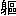

| ご主人様と甘い服従の輪舞曲 | |
| 藍杜 雫 | |
| プランタン出版 (2012) | |
ご主人様と甘い服従の輪舞曲【イラスト付】
藍杜雫
プロローグ 水の都の主従の事情
遠くから汽笛のボォーッと低い音が響いて、真っ白に光る線に目が止まる。
きらきら。きらきら──。
風景を横切る線──光る運河を見ていると、水面には宝石が敷きつめられていると信じていた頃を思い出す。
「まぶし......」
光を目に強く灼きつけるあまり、少女は思わずよろけそうになって、前を行く少年のシャツの端を掴んでいた。
「大丈夫、セレーン？」
心配そうな眼差しで、少年に肩越しに振り向かれて、掴んだシャツを慌てて手放す。
「だ、大丈夫です。フレイ様こそ、前を向いて歩いてください」
そう言うそばから、視界の隅で小艇が走るのに気づいて、上品な形をした眼鏡橋を通りぬけていくのを目で追いかけてしまう。
眼鏡橋の上には、瀟洒な石造りの建物の群れ。
雨戸を開け放った両開きの窓が、色とりどりの花鉢を溢れんばかりに抱えこんで、運河を通る人の目を楽しませる。
美しい街の風景は、けれども眺めるだけで、けっして手元にとどめておけなくて......。
それは、目の前を行く少年の印象そのまま。
フレイ様と呼びかけられた少年は、幼いながら綺麗な顔立ちをしていて、街の路地を通りぬける間、少女──セレーンは品のいい横顔を何度も、盗み見ずにはいられなかった。
白いセーラーカラーのシャツに、折り目の付いた色褪せしていない下衣筒。
きちんと櫛を通した茶色い癖毛は今は風に乱れていたけれど、清潔そうにさらさらと流れて、手を伸ばして触れてみたくなる。
「フレイ様は公爵家公子の身分にあらせられます」
かつて言われたとき、セレーンにはよく理解できないながらも、それがどんなに特別なことかは話してくれた使用人たちの様子からもひしひしと伝わってきた。
けれども、セレーンが思うフレイの特別さはそんな言葉では言い表せないものだった。
背筋を伸ばして、まっすぐに前を向いてる姿は、幼さの中にもどこか気高さのようなものが漂って、自然と少年の出自を知らしめている。白い肌にうっすら浮かぶソバカスさえ、何か特別な印のように見えて、少女にはおひさまのように眩しくて仕方ない。
「ほら、セレーン...また、躓いて......手を繋ごうか？」
「とんでもないことです！ 上の方たちに見られたら、大変なことになります！」
石畳に足をとられたところを見咎められて、セレーンはしまったと思いながらも、ぶんぶんと頭を振って、フレイに先へ進むように促した。
セレーンという少女は、フレイとそう変わりない年格好をしていたけれど、白金色の長い髪を揺らし、お仕着せのスカートを着込んで、主を守る忠犬さながら、少年の後をついて歩いていた。
前を行く小さな背中が、一歩、足を踏み出す度に、少年の茶色い癖毛が揺れる。
光を受けたところが金色に輝く。
その煌めきを眺めるのがセレーンは好きで、だから、ただ一緒に灰色の狭い路地をくぐり抜けるようなささいな時間も、とても満たされた気分でいた。
そこに、またフレイがぱっと振り向いて、セレーンはどきりと心臓を飛び上がらせる。
「わわっ」
期せず、驚きの声をあげたのを制されて、慌てて口元を押さえた。
しぃっと唇に人差し指を立てて、フレイの可愛いらしい顔がいたずらっぽく微笑む。
少年の煌めくような茶色い瞳と少女の思慮深そうな勿忘草色の瞳が交差する。
そっと、思惑を秘めて前を行く他の人々の様子を窺ってみるも、誰も、後ろを付いて回る少女たちを気に留める様子はない──ほっとするのも束の間、
「セレーン、ちょっとだけ先に行ってて。すぐ戻るから」
「えっ、ちょっと、待っ......フレイ様！」
セレーンの制止もきかず、少年の白い背中が、路地の向こうに消えていく。
「すぐ戻るって、もう皆様方、帰るところなのに......」
不安を覚えつつ、慌てて目線を戻すと、少年の年長の兄たちは、セレーンたちのやりとりなど気づく様子もなくゆっくりと歩を進めている。それでも、セレーンが知る限り、ゴンドラが停泊する船着き場までは、もうそんなに遠くない。
フレイの不在を気づかれないうちに、戻ってきますように。
そう祈っていたのに、セレーンの願いもむなしく、フレイの年長の兄たちの一行は船着き場について、気に入らない末弟がいないとわかると、舟をすぐに出せと騒ぎ立てた。
「待ってください！ フレイ様がまだ戻ってません......」
「勝手にいなくなる方が悪いんだろ」
吐き捨てるように呟いて、フレイの二番目の兄は舫綱を解くように、水先案内人に指示している。
その間も、何度も何度も、運河側道の向こうに目をやるけれど、見慣れた姿が戻る気配はない。
「で、でも...こんなところで置いていかれたら、お屋敷は遠いですし......」
震える声で、自分より頭二つほど大きな少年に抵抗する。
ここに来るまで、何度も運河を切り替えてきた。
もし歩いて帰ることになっても、街中の背の高い建物に囲まれて、住んでいる屋敷がどちらの方向にあるのか、セレーンには見当もつかない。
セレーンは、自分がフレイを守らなくては。という使命感と、年上の少年の威圧感や見知らぬ場所にいる不安の間で引き裂かれそうな心地で祈っていた。
早く...早く戻ってきて......。
「使用人のくせに主人に指図するなんて生意気だぞ、セレーン！ そんなに言うなら、おまえも舟から降りろっ」
「あっ......」
強く肩を押されて、小さな体は舟からよろけて、運河の側道に転がり落ちた。
「舟を出せ」
やりとりを傍観していた一番上の少年が面白くもなさそうな声で言い放つと、舫綱を解かれたゴンドラは、ゆっくりと運河を滑り出す。
「ま、待って!!」
慌てて、側道を走って追いかけてみたけれど、ゴンドラは角を曲がり、あっというまに、建物の向こうに見えなくなってしまった。
「どうしよう...どうしよう......」
ひとりで側道に立ちつくして、あるいはゴンドラが戻ってこないかと光る運河を眺めるけれど、見知らぬ水先案内人がセレーンを追い抜いて通り過ぎるだけ。こんなところで、子どもがひとり、何をしているのだ。というように、一瞥して棹を差し、すぐに見えなくなっていく。
「......うぅ...」
セレーンは勿忘草色の瞳に大きな雫を溜めて、絵のように美しい景色が滲んでしまうのをどうにもできずにいた。すると。
「あれぇ？ セレーン？」
どこか間の抜けた声とともに、たたたっと軽い足音が階段を下りてきて、ラインの入った白いセーラーカラーが滲んだ視界に飛びこんできた。
「兄さんたちは？ また別の店に寄ってるのか？」
問いかけの軽やかな響きに、セレーンは思わず、漏れ出ていた嗚咽を喉に飲みこんでしまった。
さっきまで色を失っていた世界が、再び鮮やかに彩りを帯びる。
「セレーン？ あれ、ゴンドラはどこ？」
のんきな声音で辺りを見回すフレイを見て、セレーンの中で何かが弾けた。
「もぉっ！ 一体何しに、どこにいってたんですか!! フレイ様がいないのが悪いって、皆様、ゴンドラに乗って帰られましたよ!!」
立て続けに言葉を吐き出すと、フレイの大きな瞳が、さらに大きく瞠られた。
「セレーン......」
「何ですか？ 言い訳なんて、聞きませんよ！ ゴンドラがなくて、どうやって戻るつもりなんですか?!」
フレイの顔を見て浮かび上がった気持ちが、不安を言葉にすると、再び、沈みそうになる。
セレーンをまっすぐに見つめる眼差しが霞んでいく──そんな、喉が塞がる気配に怯えていると、何かいい香りがして、あっと思ったときには、温かい手がセレーンの頬を左右に引っ張っていた。
「ふ、ふぇいしゃむぁ......」
「ふたりっきりのときには、『様』は禁止って何回言ったら、わかるんだ？」
額をコツンとつけて、辛抱強い声音で言い聞かせてくる。
「......ぶぁって......」
さっきまで他の人がいたから、つい口にしただけなのに。
こみあげてくるものを抑えきれずに心の中で言い訳する間にも、品がいいのに愛嬌のある顔が、鼻がくっつくほどの近さに寄せられて、セレーンは思わず、茶色い瞳に見入った。
吸いこまれそうな心地にくらくらしていると、突然、ぐんと引っ張られた。
走っていた。何か言葉を発する間もなく、手を引っ張られて、側道を走り出していた。
びっくりするあまり、セレーンはひっくり返った声をあげる。
「ふ、フレイぃい...?!」
今度はうっかり出そうになった敬称を、喉の奥にとどめることができた。けれども、引っ張る力は、一向に衰える気配はなくて。
「大丈夫。大丈夫」
応える背中に、「一体何が大丈夫なんですか!!」と叫んでみても、走る速さは緩む気配もない。
このまま走って帰るつもりなのかも──そんな考えが過ぎった次の瞬間、さらに強く腕を引かれて、ちょうど、運河いっぱいに流れてきた運搬筏の上に、ひらりと飛び移った。
「わ、わ......」
飛び移るなんて予想していなかったセレーンはぐらりと体のバランスを崩して、繋ぎ止められた腕の力で、今度は反対に引かれ、荷物の上に転げこんだ。
フレイのやわらかい腕にぎゅっと抱きしめられて、息が苦しくなったかと思うと、「大丈夫？」と心配そうな顔で覗き込まれるのがくすぐったい。こくこくと頷くと、愛らしい顔が破顔して、次にすっくと立ち上がると、大きな声を張り上げた。
「すみませーん。ちょっと家人に置いてかれちゃったんで、途中まで乗せてくださーい」
何を言いだしたかと、瞠った目で茫然と見上げていると、運搬筏を曳く曳航船の操舵室から身を乗り出していた人影が、かぶっていた帽子を軽く持ち上げ、了承の印を返した。
「いいって。よかったね、セレーン」
そう言って、微笑みかけられ、荷物の隅に座るように手で示される。
「だから大丈夫って言っただろ」
「......うん」
狭い場所で、肩が触れ合うように腰を下ろすと、さっきまで押し寄せていた不安も、唐突に訪れた驚きもどこかに消え失せて、心の中がほぅっとあたたかくなる。その鼻孔に、水の匂いに入り混じり、爽やかな香りが漂ってくる。
あれ？ と、セレーンが身じろぎしたところに、
「あ、セレーン、動いちゃダメ」
緑色。小さな細長い花の塊。
「なに、これ？」
耳元にさされた草花から、なんともいえない、いい香りがする。
「白いのはタイム、青紫のはラベンダー」
答えてセレーンの髪を掻きあげるフレイの指からも、ふんわりと爽やかに匂い立つ。
そういえば、さっき頬を引っ張られたときも、いい香りがしたな。と思い出した。
「どう？ 気分よくなった？」
「え？」
「兄さんたちの買い物、長かったし、待ってるのも疲れたろ？ 歩いているときに、ラベンダーの香りがしたから、探してとってきたんだ」
その言葉にセレーンは目を丸くして、フレイのいたずらっぽい瞳を見つめ返した。
つまりは、いなくなったのは花をとるためで、それはセレーンのためということで──。
「あ、ありがとうございます......で、も、いきなり、いなくなるのは次からなしです！ いつもいつも都合よく帰れるとは限らないんですから！」
フレイの兄たちの仕打ちを考えると、セレーンは今も押しつぶされそうな心地がするのに、フレイの方はまるで気にする風でもなく、
「大丈夫。大丈夫」
と言ってにこにこと笑ったままで──けれども、フレイに連れられて、何度か運河を乗り換えると、しばらくして、セレーンたちはちゃんと屋敷に辿り着いていた。
夕食に間に合うように帰らなかったと末弟を非難するつもりだった次兄は、定刻に現れたフレイを目にして、顔色を青に赤に変え、その様子を物陰から見ていたセレーンは秘かに溜飲を下げたのだった。
フレイのやることはセレーンにはまったく予想がつかなくて、けれどもたいていの場合、うまくいってしまう。
フレイってすごい──セレーンは心から感動していた。
──あれは、いつのことだったのだろう？
セレーンは部屋の花瓶から香り立つラベンダーを感じて、懐かしい記憶を思い返していた。
「ええ、ですから、これからは流行を先取りしてお薦めするのが、当方の務めかと思いまして、今、隣国で流行っている生地をどうかと思いまして」
へりくだりながらも、滑らかな口上で、飾り文様を透かし織られた布地を広げてみせる。
セレーンの今日の仕事は貴族相手に商品を売りこみにかけること。
年老いた男爵未亡人は、暇をもてあましてはどこかの社交場に顔を出しており、新しい布地を流行らせるのに、いい広告塔になるからといわれてきたのだけれど──。
「そうねぇ...確かに美しい生地だけれど......ねぇ、その前にあなたも女性ならもっと女性らしく、侍女が着るお仕着せを身につけたらどうなの？」
また、始まった──と、内心うんざりしながら、何とか笑顔を細面にとどめてみせる。
確かにセレーンは男性が着るような服装を身につけていた。
紺色のライン飾りがついた立て襟の白い上着を羽織って、遠目にはほとんど灰色に見えるストライプの下衣筒を穿いて、まるで女性使用人らしくない格好をしているという自覚はあった。
光に透けて見える長いプラチナブロンドの髪と胸の膨らみだけが、女性であることを指し示して、ぴっちりと前を閉じてボタンの並んだ詰め襟の服しか見なかったら、男に間違われても不思議はないくらい。
「あなたは自分が貴族じゃないからいいと思ってるかもしれないけれど、使用人がそれじゃあ、公子様だって、外聞がよろしくないでしょう？ お仕事だって家の中のことをしたらどうなの？ 公子様のお屋敷でだって、いくらでもすることがおありでしょう？」
重ねて言われると、慣れているはずのことなのに、流石に笑顔を浮かべる口元が引き攣った。
でもこの服装は、仕事で街中を行き来するには楽だったし、何より、自分の主人に禁止されているわけじゃない。
いくら上客のひとりでも、こんなことを言う権利はないのに。
そう心にだけ反論しつつも、セレーンが次の言葉に窮していると、
「それは困りますね」
と落ち着いた男声が降ってきた。
「彼女は我が社の重要な戦力ですから、屋敷のことより商社の仕事を中心に手伝ってもらってるんですよ」
温かい手が肩に触れて、その感触に安堵する前に、声の主が誰なのか、セレーンにはわかっていた。だから。
「公子殿下フレイ」
立ち上がって頭を下げ、わざわざ敬称で呼んでみせたのは、むしろ、貴族意識の強い未亡人に対してのあてつけに近い。
「まぁあ......フレイ公子。お見えでしたの？ いらしてるんなら、言ってくださればいいのに......セレーンさんおひとりかと思ってましたわ」
「いいえ、今来たばかりなんですよ。前の取引が早くに終わって、そういえば今日、うちのものがこちらに伺ってるはずだと思いまして......お邪魔でしたか」
フレイの口から紡ぎ出される慇懃な口調は、まるで貴族的な装いの一部のようで、同じように立ち上がって膝を屈める未亡人が気をよくしてるのが、いやでもわかる。
セレーンは生真面目そうな細面を俯せたままフレイに席を譲り、自分はその背後に控えなりゆきを見守ることにした。
「いいえいいえ。公子様なら、いつでも大歓迎ですわ。どうぞお座りになって。今、お茶を持ってこさせますから──ちょっと！」
老婦人のあからさまな秋波に鉄壁の微笑みを返して、フレイはソファに優雅に腰掛ける。
すらりとした体つきに糊のきいた真っ白なシャツを身に纏い、その上にセレーンが選んだバロック柄にジャガード生地のベストと白いストライプ柄の上着を着こんでいた。
流行のタックの入った型の下衣筒は腰回りを魅力的に見せて、足を組む仕種さえ、はっと目を繋ぎ止められてしまう。
フレイはけっして背が高い方ではなくて、それが彼の秘かなコンプレックスであることをセレーンは知っていたけれど、それを差し引いてもなお、その身なりは淑女たちの注目を集めるに値した。
子どもの頃から変わりない茶色の癖毛が差し込んだ光に金色に光る。
くるくると顔を縁取って、その真ん中で、やはり茶色した瞳は貴族的な微笑みに睫毛を俯せたまま、企みを秘めたように煌めく。
「相変わらず、奥方様はお若くて、センスがいい装いをしておいでだ。その姿を拝見するだけでもわざわざ足を運んだ甲斐がありますよ」
若いって、センスがいいって、ど、こ、が──。
そう心に叫びつつも、未亡人の相手を代わってくれて、セレーンはほっとしていた。
とはいえ、営業のためでもフレイが女性を褒めそやす言葉は何度聞いても、心の奥に黒いものが湧き起こる気がして、どうにも居心地が悪い。
そんなセレーンの心情をよそに、フレイは骨張った指を悠然と膝の上に組んで、老婦人に愛想よく微笑んでやりとりしている。
「フレイ公子こそ、いつも素敵なお召し物ですわね。そのシャツなんて、初めて見るようですけど......変わってますわ」
その言葉こそ、フレイが待っていた言葉とも知らずに、口にしているに違いなかった。
小芝居が好きなんだから。
セレーンは心で呆れながらも、耳をそばだてた。
「流石、奥方様はお目が高い。うちのセレーンがもう薦めたかと思いますが、これは輸入を始めたばかりの新しい生地で仕立てたものなんです」
そう話を引き取って、目の前の夫人と違い、本当にセンスがいいことで有名な某伯爵夫人が大量に購入した話まで、淀みなく話を展開していく。
押しつけがましいのに、聞いている者が気分を害さない慇懃さで、謳うような営業トークを続けるのはフレイの天分と言っていい気がする──。
主に対するにしては随分と不遜な考えを浮かべながら、自分にふられた役割を口にする。
「でも、公子殿下──奥方様はこの生地には興味ないとのことで、もうお暇させていただくところだったの」
にっこりと笑って言いのけると、夫人の嫌味に押しつぶされた自尊心が幾分慰められた。
「え？」
未亡人の慌てたような声音に、セレーンは睫毛を俯せて、すまし顔を浮かべる。
「それは残念。この生地で作ったドレスを纏った男爵未亡人のお姿も見てみたかったのですが......ではまたの機会ということで」
にこやかな声で、フレイが広げた生地をしまおうとすると、男爵未亡人がレースの手袋をはめた手で制した。
「いいえ、お待ちになってフレイ公子。ちょうど孫のデビューの折に新しいドレスを仕立てたいと思っていたところだったのよ」
「じゃあ、お孫さんのドレス用でよろしいですか？」
「伯爵夫人が着ているとなれば、コールドベリィでもあっというまに流行るに違いないわ。私の分と娘の分もよ」
毎度、どうも。
その言葉を聞いた瞬間、セレーンの瞳には、フレイの貴族的な微笑みの奧に、何故か、商人の計算高い笑顔が重なって見えた。
「別に、わざわざ来なくってもよかったのに」
セレーンは唇を尖らせて、運河への階段を下りていった。
すると、一緒に歩くフレイはわざわざセレーンを追い越して、呆れた調子で言葉を返す。
「だってあの男爵未亡人のこと、君、苦手だろ？ いつもいつも時間だけはかかるのに、やりこめられてため息つきながら、帰ってくるじゃないか」
「そ、それはでも......とも...かく、ひとりでもなんとかなったの！」
言われた指摘はまぎれもない事実で、だからこそセレーンは自分のいたらなさに屈辱を感じて、呻くしかない。
子どもみたいな言葉を吐いて、横を向いて押し黙るのに、フレイの方は気にするでもなく、先にゴンドラに乗りこんで、
「セレーン、手を」
と言いながら、骨張った手を差し伸べる。
別にひとりでゴンドラぐらい乗れるのに。
男装に等しい格好をしている自分が、ドレスを着た淑女に対するような扱いを受けると、なんだか気恥ずかしくて、セレーンはいつも戸惑ってしまう。
なのに、フレイの方はそんなセレーンの心の裡など思いもしないようで、躊躇した手をさっと掴んで、エスコートするようにゴンドラに乗りこんだ。
「事務所には、まっすぐ帰るって行ってきたから」
そう言うと、慣れた仕種で水先案内人に顔を向ける。
「レディッシュ屋敷へ」
その言葉が終わるやいなや、棹が岸を押して、ゴンドラが運河を滑り出す。
子どもの頃から見慣れた風景。
光る運河。瀟洒な石造りの建物。
貴族の邸宅が立ち並ぶ一角から、運河が縦横無尽に走る街の中を通りぬけ、角をゆるやかに曲がって流れていく。たゆとう水の流れを分けて進み、幾度かの角を曲がった後に、やがてゴンドラは広い敷地に区切られた一角で船足を緩める。
その向こうに──近隣ではひときわ大きな屋敷が森を従えて建っていた。
翌朝。
カッコーの歌声が屋敷の森に響く頃、近くの運河から朝霧が立ち昇ってくる。
真っ白い渦巻が薄闇に流れこむさなか、屋敷の一画で露に濡れた雨戸が次々と開いた。
「フレイ！ 寝坊助のフレイ・ロドウェル!! 起きてください!!」
鍵のかかっていない扉を、いつものようにノックもせずに押し開いて、敬称もつけずに叫ぶ。
白金色の長い髪をなびかせ、颯爽と細いが部屋に押し入ると、天蓋付きベッドのドレープの向こうで横たわる塊が、かすかに蠢いた。
「......ん...る、さい......」
不機嫌な声にひるむことなく、セレーンは塊を揺さぶる。
「公子殿下フレイ？ もう起床の時間です。起きてください」
そう言ってふんわり軽い羽毛の上掛けを引き剥がすと、いつもは愛らしい顔が、思いっきり顰め面しているのが目に入る。
「......まだ、いいだ、ろ......」
ごねる様子に、セレーンは盛大なため息を吐く。
どうだろう、昼間とのこの違いは。
奥まで歩いて、東側の窓と雨戸を開け放つと、開いた窓から、ひんやりした空気と共に霧笛の音が繰り返し響いてくる。
グロージェン中央大陸の西端──コールドベリィ公国は水路と運河が張り巡らされた水運で発展している。その首都トレヴェスは数多の船が行き交う交易都市だ。
帆船に小艇、ゴンドラ、運搬筏を曳く曳航船が忙しく行き交う大動脈──シェストリバーに程近いここ──レディッシュ屋敷に朝日が射し込む頃、東翼の主を起こすのはセレーンの朝の仕事だった。
と涼やかな瞳と卵形した細面の顔立ちに、勿忘草色の瞳を淡く輝かせ、無駄のない所作で部屋の窓を全て開き、必要なものを傍らに並べていく。その姿はきびきびとした動作と相俟って、娘らしい可愛らしさより、近寄りがたい生真面目さが漂う。
開け放った窓から流れこむ霧の冷気のせいだろうか。ふと、未だ目覚めない塊が、もう一度上掛けをかぶろうとするのに気づいて、しっかりと布団を押さえて拒絶してみせる。
「今朝は霧が出ています。早急に事務所で待機した方がよろしいかと思いますが？」
「......さ、む......ざけるな...レーン...」
そんなぼんやりした調子で罵られても、ひるむわけもなく、さらに言うなら、昨日の売りこみをひとりでできなかった恨み──逆恨みだけれど──も忘れてない。
涼やかな目元を俯せ、とりすました顔で傍らの洗顔ボウルにタオルを浸し、軽く絞ると、水の滴るタオルを躊躇なく、主の顔に落とす。
すると、寄せていた眉根の皺がさらに深くなり、布団から伸びた手がゆっくりとタオルに手をかけた。
「お目覚め？」
「......レーン...キスしてくれたら、起きてやるよ...」
「冗談は水の底で言ってください。着替えをここに置きますから、半刻の時鐘が鳴る前にダイニングルームに下りてきてください」
「......冗談じゃ......なかったんだけど......」
「え？ 何かおっしゃいましたか？」
「別に......」
「じゃ、早くなさってくださいね」
簡潔に用件を終えて、つむじ風のごとく部屋を去る。
細い後ろ姿が見えなくなり、寝癖のついた癖毛をかき交ぜて、フレイが大きなため息をついたことをセレーンは知る由もなかった。
「我らが公子は起きたのか？」
セレーンが書斎の扉を開くなり、磨かれたマホガニーの机の向こうで、黒髪の青年が顔をあげた。
フレイと違って朝から明晰な態の青年は、切れ長の黒い瞳を物問いたげに投げかけてきたので、セレーンはもちろん。という代わりに肩を聳やかしてみせる。
「よくあいつを起こしに行く気になるな...」
青年は端整な顔を歪めて、呆れたような声音を吐き出す。
「慣れれば、なんてことないわよ。昼間と違って朝はぼんやりしてるから、ちょっとした仕返しだって思うままにできるわよ、ギリアム？」
「それは魅力的なお誘いだが、俺はご遠慮しておく」
体格のいい姿が嘆息して、机の端にもたれかかる。
ギリアムと呼ばれた青年は並び立つと、セレーンより頭一つほど背が高い。
黒い下衣筒をはいた足はすんなりと長く、上着を脱いで表がストライプ、裏を黒地に仕立てたベストを着こなして、あるいはこの屋敷の主と見間違えられても不思議はないくらい、品よく見える。
実際のところ、ギリアムはフレイの家令の役目を担う上級使用人で、この屋敷の中ではいつも一番忙しそうにしている。セレーンはフレイやギリアムを補佐する女性使用人として召し抱えられていたけれど、とても優雅に振る舞う──とまではいかなかった。
「上の方たちとまた揉めたって聞いたけど、旦那様に申し上げたの？」
「いいや。フレイが言うには、そんなことしたらますますやりにくいって」
ギリアムは書き上がったばかりの書類がなかなか乾かないのに業を煮やして、インクを乾かそうと息を吹いている。その様子が笑いを誘って、セレーンがくすくす声を立てていると、控えめに扉をノックする音が響く。
どうぞ。と声をかけると、すかさずハウスメイドが軽く腰を落として入ってきた。
「フレイ様がダイニングルームにお見えになりました」
「わかった。セレーン、行こう」
「そうね」
花柄の壁紙に覆われた廊下を抜けて、広いフランス窓から明るい光が差し込むダイニングルームに着くと、光を浴びて、フレイの茶色の癖っ毛の先が金色に煌めくのが目に入る。
さっきまで寝ぼけ眼をしていた姿はどこへやら、そこには、癖毛に櫛を通し、きちんと身なりを整えた紳士が椅子に腰掛けていた。
そして──。
「おはよう、セレーン、ギリアム。朝食にしよう──セレーンが言うには、今日は霧に振り回される予測だそうだから」
フレイの明るいトーンが、部屋の空気を隅々まで支配する。
わずかに揶揄うような調子がこめられた声を響かせながら、人好きのする丸みを帯びた瞳で、ゆっくりと配下のふたりに視線を移す。
茶目っ気のこめられた瞳はきらきらと輝いて、相対する人を、これから何か楽しいことでも起こるような心地にさせるのだ。
「今日、海路から遡ってくる船が遅れたら、今後何週間も走り回る羽目になるとか」
挑戦的な目を向けられて、そのころころと変わる表情に惹きつけられる。
揚げ足をとるような言葉さえ、耳に心地よくて──でも、それとこれとは別。とばかりに嘯く。
「私、別に、そこまで言ってない......」
「この濃い霧じゃあ、十分あり得ることですね」
ギリアムがどちらの味方をするんだかわからない声を挟む。
「座礁じゃなくて、前に運河側道で、船を曳く馬の引き綱が絡まったことがあったな......」
考えこむように長い骨張った指を顎に添えると、フレイはそれきり黙りこんで、セレーンは声が聞けないのが少し不満だった。
もっと声が聞きたいのに──。
そう思ってフレイを睨んでいると、給仕がサービングカートに朝食を運んで入ってきて、いずれにせよ、会話はそれきり。セレーンはナプキンを手にとり、フィンガーボウルに指を浸して食事の準備にかかった。
屋敷の主であるフレイが上座に座り、その斜向かいにギリアム、もう片方の斜向かいにセレーンが座る──それは、他の屋敷では許されないことかもしれなかったが、この屋敷では日常。
フレイがこの屋敷に住むようになって以来、三年間、ロドウェル家のレディッシュ屋敷で繰り返されてきた朝の光景だった。
＊ ＊ ＊
コールドベリィ公国。
水路と運河で知られるこの国は、三つの公爵家に統治されている。
その公爵家の一つ──ロドウェル公爵家公子というのが、セレーンが仕えるフレイの身分だ。
結婚してないとはいえ、もう成人の儀をすませ、フレイは本家を出て屋敷を与えられていたけれど、未だ爵位を持っていなかった。
というのは、フレイが四男末子だからというだけでなく、ロドウェル家の後継ぎとして、トラウトベック伯爵を名乗る長男のウォーレンを除いて、残る三人の非嫡男にはみな、いずれかの爵位も継承されていなかった。
ある日、父である公爵はフレイと三人の兄を呼び出して、告げた。
「公爵とそれに付随するいくつかの爵位、財産はウォーレンに継がせる。だが、我が家にはまだいくつもの爵位と土地がある──そのうち、どの爵位を引き継ぐかはおまえたちの手腕を見てから決めよう」
そう言って、三人の息子たちに事業の腕を競わせることにしたのである。
そんなわけで、フレイは小物・食料品の輸出入をする貿易事業を引き継ぐこととなり、次男のナイジェルはホテル・レストラン事業、三男エスターは繊維工場と新規に始めた自動車事業を運営することとなった。
加えて言われたことには、
「フレイ、おまえは一番年が若い。だが、世の中はそんなことで特別の配慮をしてくれるわけじゃない──だから、この競争に参加することには平等だが、ハンデをやるわけではない」
その言葉の通り、フレイが引き継いだとき、ロドウェル貿易商社は、数年、赤字が続いていた。
輸出入貿易は浮き沈みが激しい。
馬鹿みたいに利益が出たかと思うと、船が一つ嵐に沈んだだけで、あっというまに赤字に傾く。あるいは経営が傾いたところを難癖付けて、受け取るべき正当な分け前さえ取り上げようという企みがあったとしても、おかしくなかった。
けれども、あまり兄弟仲がよくない長男と次男の──いやフレイの両親さえ思ってみなかったことに、フレイが社長になって以来、商社は順調に黒字に転換した。
父親であるロドウェル公爵だけは手放しに喜んでいたけれど、比較的温厚な性格の三男はともかく、上のふたりが事態を快く思っていないのは疑う余地もなく、セレーンもギリアムもフレイの兄たちを常に警戒することにしていた。
「父から聞いたところでは、ウォーレン様は今日はまだ隣国ケレイン・フォートにいて、トレヴェスに戻るのは三日後になるようです」
ギリアムは、ロドウェル本家の家令をしている父親から聞いているので、この情報は信用できる──こと、ウォーレンに関しては、数日、心配はいらない。
「ナイジェル様は？」
セレーンは小首を傾げて、もうひとりの問題人物の名前を挙げる。
「ナイジェル様は──」
ギリアムは言いかけて、どこか気まずそうにセレーンの顔を見る──するとフレイが抑揚のない声で、言葉を続けた。
「フレア・デレイラか」
「またですか!!」
「よくおわかりで......十日ほどになるそうです」
フレイはくるくる回る癖っ毛の影に冷ややかな双眸を俯せ、淡々と食後の紅茶に口をつけた。
いつもは明るい瞳が、ふ、とした拍子に昏く翳ると、セレーンは何故か喉が塞がる心地に呻きたくなる。
白いシャツから形よく覗く骨張った手は、新聞をパラパラめくって、見出しに目を通しているのだろう。行儀は悪いけれど、これはいつものことで、ギリアムの苦笑いを気にする風でもない。
「あれのやりそうなことだ」
「やりそうなことって......」
セレーンは怒りと羞恥に細面を真っ赤に染めて、男性陣の涼しい顔を睨みつけた。
「公爵家の次男で──公子ともあろう方が、あんな花街に何日も滞在されるなんて...外聞がよろしくありません!!」
「あんな花街にとって、次兄みたいなのは、一番美味しい客なんだよ」
貴族のくせに、まるで商人のような言葉を吐いて、フレイは給仕に船の準備をするように言伝てている。
「ゴンドラですね。かしこまりました」
応答を受けて、フレイは軽く頷いてセレーンに目を戻す。
「それに、フレア・デレイラだって、我々の客に違いない──違うか？ セレーン」
鷹揚な目線でセレーンを見下ろして、問いかける。
「.........それは...」
言葉の応酬に手詰まり、セレーンは言葉を失った。
「明日、十日は手形の〆日だ。霧が出ているときに、兄さんたちがいないのは、邪魔をされなくて都合がいい。出かけよう」
言い聞かせられて、セレーンは不承不承頷くしかない。
フレイに口論で勝つには、よほど油断させるか、はじめから優位に進めないと難しい──子どもの頃からよく身に沁みているのに、言葉の応酬になったときにはもう引き返せない。
悔しさが残る口元を固く引き結び、負け犬の心地で上目遣いに睨みつけていると、フレイはセレーンの視線を気にする様子もなく、食事を終えて席を立つ。
その泰然とした余裕に、尚更、セレーンの方は悔しさを募らせているのに、館の主は当然のように控えていた執事が広げた上着に手を通すと、肩からケープのついた毛織りマントを羽織って、その長く黒い裾が翻るはためきと共に、後ろを振り返ることなく、ダイニングルームを出ていった。
気がつくとギリアムもマントを片手に廊下を出るところで、セレーンは慌てて後を追いかけ、廊下へ──階段を下りて、半地下の船着き場へと向かう。
森を持つほどの広い敷地にあるここ──レディッシュ屋敷は、建物と運河までの間、敷地内に水路が引かれ、二カ所の鉄柵門を開閉して、出入りする。
薄暗い船着き場でゴンドラに乗りこみ、合図して、半地下の水門が開いたと同時に、ゴンドラの漕ぎ手が長い棹を差すと、すーっとゴンドラが水面を滑って、外の白い光と共にミルク色の霧が流れこんだ。
「本当に霧が深いな...注意して、進んでくれ」
フレイの指示にゴンドラの漕ぎ手がゆっくりと頷く。
やがてゴンドラは水路の終わり──屋敷敷地の境界に着くと、ギリアムが陸に上がり、外と内とを隔てる鉄柵を水の中に下げたところでゴンドラが外に出るや、黒い人影が陸上の門から出て、敷地の外でまたゴンドラに乗りこむ。
そのいつもの手順を終えて、漕ぎ手が角灯を先頭に掲げ、霧の中に舟の位置を指し示すと、ゴンドラは穏やかな運河の水面を、霧を漕ぎ分けるように滑り出す。
繰り返し聞こえる霧笛の響きとさざ波の音、沈黙のままに目を閉じているフレイの茶色の前髪に、ゆっくりと霧が降り注ぐ気配だけが佇んでいた。
やがて小さな水門を経て運河を切り替え、コールドベリィ公国の首都──トレヴェス西南部にあるグレイヴ・ストリートへ──商社の事務所が立ち並ぶオフィス街へと入り込む。
舟は運河沿いに連なる小道に接岸し、漕ぎ手がロープを舫うのも待たずに、セレーンたち乗客はゴンドラを降りた。
「行ってらっしゃいませ」
その声が背中を追いかけるのに、フレイは片手を上げて答え、路地へと出る階段を上っていく。
『ロドウェル貿易商社トレヴェス本社』──。
そう書かれたプレートが釘に打ち付けられた建物の前で、ギリアムが扉の鍵を開くと、フレイは軽く頷いて開け放たれた扉の中へ入り、セレーンも後に従った。
「布地の納品はまだかとメルト・ローズから督促が来ているぞ」
「運搬筏が遅れているって、どのぐらいなんだ？」
「手形が間に合わないそうです！」
「誰か急いで銀行に行って来い！」
「綿花の納品の確認、誰か！」
普段は整然と動いている商社の中が、一つ歯車が狂うと、あっというまに混乱に針が振り切れてしまう。
月中の決済日である十日と月末の二十五日──この〆日に霧が出たり船荷が遅れたりといったトラブルが重なると、いつでも簡単に商社の中は混乱する。
「セレーン、シェストリバーの第一東大桟橋に行って。ギリアムは水門管理人詰所に行って運航の遅れを確認してくれ。それと、シェストリバーの潮の満ち引きも」
海から遠く離れたトレヴェスでも、コールドベリィ公国自体にあまり高低差がなく、潮位の変化で川が遡る。河口から上がってくる分にはよくても、下る船には霧以上に厄介になる。
ばたばたと人を引き連れて、セレーンもギリアムも、マントを羽織り三階の事務所から出て、階段を下りていった。
「不渡りが出るでしょうか......？」
事務所のスタッフのひとりが怯えた声をあげる。
「今日中に手形を振り出せば、今回のは大丈夫よ。全然、問題じゃないと思う」
セレーンは努めて落ち着いた声を出して、年若い青年に微笑んでみせた。
色素の薄い髪と、静かな佇まいの勿忘草色の瞳は、もうすぐ成人を迎えるという年齢からすると、随分大人びた印象を与えるのに、当の本人にあまり自覚がない。
「そうですか」
青年はほっと胸を撫でおろして、別のスタッフがゴンドラを準備するために水路に下りた階段の向こうへと後を追って姿を消す。
「一回だけ、すごく大変だったことがあったけど......」
水路脇の通路に立って、セレーンは記憶をさらうように首を傾げた。
「あのとき、どうしたんだったかしら？」
「多分、フレイが自分の財産を一部処分して、不足分を埋めたんだろう。本家は増資を認めなかったはずだから」
ギリアムが追いついて、ゴンドラに乗りこみながら補足した。
「......多分そんなところね」
セレーンはゴンドラよりも安定している船室のついた平らな小艇に乗りこむと、長い髪を掻きあげて、細面を行き先に向けた。
二つの舟はしばらく縦に並んでいたけれど、途中で別れ、セレーンの乗った小艇は東へ進み、やがて水門で運河を切り替え、シェストリバーと平行する運河へと出た。
「さっきより薄くなっているけど、午前中いっぱいは霧が濃そう...」
霧に霞む街のあちこちに、角灯がほの光るのは幻想的な光景に映る。
運河の水面からミルク色の霧が立ちのぼり、水面が揺れる度、さざ波の音が護岸の煉瓦に反響して、霧の向こうに波頭が光と影を作る。舟を走らせ、霧の向こうから街並みが近づいて、また遠離るのは、見慣れていさえ心惹かれる情景だ。
けれども、ひっきりなしに聞こえてくる霧笛の音が、航行する船の数を伝えて、それだけ危険が多いことを物語る。そこに。
「シェストリバーで船がぶつかったぞー」
叫び声の方へ目をやると、運河側道の一角に人が集まってざわついていた。
「やっぱりトラブルが起きたんだ。うちの船じゃなきゃいいけど...」
セレーンは嘆息し、一度、深呼吸に白い霧を吸い込むと、覚悟を決めて一日の労働にかかった。
＊ ＊ ＊
慌ただしかった一日が、夕刻になってようやく収束の気配を見せた。
ロドウェル貿易商社の船も事故に遭っていたけれど、大したことはなく、予定していた荷は大部分到着し、到着しなかった分も所在が確認できて──つまり今日できることはもうなかった。
何度も近くの電信通信局に走って、足が棒のよう──。
セレーンは桟橋のクレーンそばに腰を下ろして、両手に顔を埋めた。
「セレーン、今日はもう上がろう」
かけられた声に、はっと顔をあげると、フレイが微笑んでいた。
茶色い癖毛に縁取られた顔はまだ少年のあどけなさを残して、茶目っ気溢れる笑顔は、こうしていると、厳しさの欠片も感じられず、人の上に立つ存在にはまるで見えない。
「フレイ......」
「シェストリバーの近くは、風が強いな」
長い骨張った指が、一瞬、顔に触れる。その瞬間、セレーンはいつももっと長く触れていたいのに......とわけもなく思う。触れられると気恥ずかしいのに、温かさが心地いい。
なのに当然のように、瞬間は瞬間でしかなくて、カフスボタンのついた袖口から形のいい手くるぶしが覗いて見えたと思うと、骨張った指が遠離っていく。
湧き起こる未練と安堵とが入り混じった境地に、ピンク色の唇から小さくため息が漏れた。
「倉庫の方はもう引き上げさせている。君が最後だ。お疲れ様」
「ギリアムは？」
先ほどまでいたはずの青年の名を口にすると、明るい瞳が翳って、フレイの顔がわずかに歪む。
「もう帰ったよ......ギリアムと一緒に帰りたかった？」
聞かれてセレーンは、何でそんなことを言うんだろう？ と小首を傾げ、暮れかかった空に影を作るフレイの顔を覗き込む。
「ただ聞いただけじゃない...もう......」
疲れに重くなった足をぶらぶらと動かして、長い息を吐くと、フレイが隣の空き樽に腰掛けた。
「......疲れた？」
労りを帯びた声が耳にくすぐったい。
「うん......今日はもうくったくた！ お休みが待ち遠しいくらい」
「おや...君は仕事が好きなんだと思ってたけど...忙しい日には、いつも張り切っているじゃないか」
くすくす笑いが風に乗って聞こえる。
「そんなんじゃ......ない。休みだって、好き、だもの...」
「そう？ どっか行きたい？」
「うんっ、行きたい！ 連れてってくれるの?!」
勿忘草色の瞳を輝かせて弾んだ声をあげると、視線を交わす茶色の瞳がやわらかく細められる。
屋敷で働いていたときに躾けられた使用人心得では、主人に対等な言葉遣いをするなんてあり得なかったし、仕事で話をしているときは個人的な感情より、会社として一番望ましいことを優先する癖がついて、セレーン自身、感情を抑えることには慣れていた。
それでも、ふたりきりで話しているとき、フレイがセレーンに微笑みかけて話を聞いてくれると、時折、思いがけず子どもっぽい言葉が口をついてしまう。
今もはしゃいでしまったことに気づいて、我に返るのに、フレイは気にする風でもなく、やさしい笑顔でセレーンの我がままの続きを促してくるものだから、その茶色の瞳に見入っているうちに、取り繕うのをつい忘れてしまうのだ。
朝は川面を覆い尽くしていた大量の霧も、今はすっかりと影を潜め、流れる大河の波頭も遠くに連なる街並みも、夕映えに輝いていた。
わずかに視線を上向ければ、空に浮かぶ雲も夕日を受けて薔薇色に染まっている。
その光を背に隣に座るフレイの顔は、西の空を背に昏く沈んで、それでも暖かい影の中で、丸みを帯びた瞳が、ひどくやさしく微笑んで見える。
その眼差しはいつでもセレーンを見守ってくれていて、楽しませてくれて、ときには揶揄いの色を帯びて──次々と瞳に浮かび上がる変化を、いつまでも眺めていたくなる。
「いいよ......。どこに行きたい？」
肯定の言葉にセレーンは白い肌を紅潮させて、人形のように造りのいい相貌を綻ばせた。
「あのね、ダム湖を見に行きたいの！」
「......どこにあるやつ、それ」
「えっと、確かユーレ＝セゼル国......だと思う」
「運河で行けるの？ それとも馬車？」
フレイは胸ポケットから、折りたたみ地図を取り出すと、セレーンにも見えるように広げてみせる。仕事柄、いつでも持ち歩いているもので、蝋を塗りこんで防水を施してある代物だ。
「ブラックフォールに注ぎこむイグレット川の源流の向こうだったと思うけど......」
「分水嶺越え!!」
「ほら、途中でピアズ運河、ブラックフォール、イグレットで、途中からストレイ運河に切り替えて、ぐるっと回れば、運河で行けるよ」
「......川越えの上、七連続閘門！」
船が分水嶺を登っていくのに、下の運河から上の運河へと段差をそのまま昇る仕組みは水門と呼ばれる。
運河が犇めくコールドベリィ公国は段差ごとに無数に水門を持ち、運河を切り替えれば国中の至る所に船で行ける。また、近隣諸国とも水の道で繋がって、交通の要所を押さえる公国はいつも数多の船が行き交っていた。
「連れてってくれるって、フレイが言ったのに......」
上目遣いに見上げて、唇を尖らせる。
「......いいけど...これはせめて夏休みだな...」
フレイは呆れ顔でため息をついて、地図をしまい始める。嫌そうな顔をしていても、きっとフレイは自分の我がままを聞いてくれる──そう思うのに、胸ポケットに地図を戻す仕種を目に追いながら、セレーンは切なさを覚えていた。
「うん」
とくんとくんと脈打つ高鳴りがうるさくて、短く返事をするのが精一杯。
「が冷える......ほら、帰ろう」
差し出された手をとって立ち上がると、夕日が街並みの向こうで最後の光を放っていた。
「ああ、やっと遅れていた定期汽船が着いたようだよ」
言われて目を向ければ、シェストリバーのトレヴェス第一東大桟橋に、大きく優美な客船が、黒い煙をたなびかせて、ゆっくりと接岸するところだった。
その様子を眺めて歩くうち、渡廊橋から乗客がそぞろに降りて、目聡い客のひとりがフレイに気づいたのだろう──帽子をとって近づいてきた。
「これはこれは、ロドウェル公爵家のフレイ公子では──...」
そう呼びかけられたのを皮切りに、次から次へと貴族たちが話しかけてきた。
こうなってしまうと、セレーンは一歩下がり、傍観者の態でフレイのそばに控えるしかない。
そのうち、ひとりが連れていた娘を紹介したかと思うと、今度は次から次へと新たな令嬢が現れ、手袋をした手にドレスを捌き、細い腰を強調するようにしならせながら、フレイの注意を惹き始めた。
ヴァーミリオン、オペラピンク、マリンブルー──色とりどりのドレスを揺らして現れた令嬢たちは、貴族たちとはまた違う意図を帯びた瞳で、誘うようにフレイを見上げている。
以前はこんなことまったくなかったのに──。
セレーンは横を向いて、ひっそりとため息をついた。
フレイの方はといえば、次々とかけられる言葉に動じることなく受け答えし、ほんの少し前には少年のようだったのが、今はもう支配者の顔をして、年配の紳士と対等に話している。
冷ややかな双眸を睫毛に俯せ、貴族的な笑みを浮かべていると、さっきまで話していたフレイとは、まるで別人のようだ。
フレイの服はいつも、セレーンが見立てていたけれど、新しく取り寄せた型で作らせたばかりの上着は、骨張っているのに、すらりと細い肢体をひどく魅力的に見せていた。
長い指を顎に当てて、曖昧な──どこか微笑んでいるようにも、憂いを含んでいるようにも見える表情は人の目を魅了し、癖のある茶色の髪は夕方の光に明るく光って煌めいている──。
令嬢たちを惹きつけているのは多分、急に成功が知られるようになった実業家としての財力だけではないのだろう。
そう思うのは何故か心地悪くても、認めざるを得ない。
でも寝起きの顔なんてひどいんだから──反論するように、心に呟く。
それだけはセレーンしか知らない顔。
いつかはどこかの令嬢が手に入れるかもしれなくても、少なくとも今は。
そんなことを考えていると、何故だか急に、この令嬢たちと話すフレイが気に障って、セレーンは眉目を歪めた険の強い眼差しを向けて、肘の辺りの袖を少しばかり引っ張った。
振り向かない背中がわずかに反応を返して、次には言葉に取って代わる。
「これは失礼。まだ今日の仕事が残ってますので、これで失礼します」
そう言うと、フレイは取り囲む人々の返事を待たず、セレーンを抱えるようにして、桟橋から逃げ出した。
「もっと早く助けてくれればいいのに」
「何を言って......喜んでたくせに」
「馬鹿なことを言うな。あんな中身のない会話、時間の無駄だ」
心底、嫌そうな声を出して言うので、それ以上、嫌味を返すのも躊躇われて、セレーンは黙ってフレイの背中を追いかけながら、夕日に光り輝く運河へと階段を下りていった。
＊ ＊ ＊
「...レーン...お茶......」
「ちょっとお待ちください」
事務所に戻って、締め切りの作業を続けているうちに辺りはすっかりと暗くなっていた。
室内には新しく作られたばかりの電灯が備えられ、明るく周辺を照らしていたけれど、の方はすっかりと力尽きて、スタッフの誰もが緩慢な動きをしている。
セレーンは羽ペンを片手に、必要なことを指折り数えていた。
書類を整理し、今日あった取引はほとんど帳簿に書きつけた。伝票はまとめたし、急ぎの用事は終わっている。問題ない。そう判断して、机に俯せる主に声をかける。
「紅茶を飲んだら、もう帰りましょう」
「......そうだな...今日はもう...」
魂が抜けたような声を耳に流して、セレーンが薬罐を火にかけたときだった。
「失礼します。あの...フレイ社長にお客様が見えていますが......」
階下にいたはずのスタッフが、落ち着かない様子で扉から顔を出した。
「こんな時間に？」
フレイは倒れたまま顔だけ上げたけれど、思いっきり嫌そうに眉根を寄せている。
「いや、取引先なら私が応対しましょう」
呻くフレイの肩に手をかけて、ギリアムが入り口へと長いコンパスで横切るのに、やりとりを聞いていたスタッフは、困惑している。
それが...と口籠もるそばに、カツカツと小気味いいほど甲高いヒールの音が聞こえて、その場にいた誰もが、はっと目を瞠ると、ふんわりと広がるオーガンジーに包まれたドレスを、手袋をした手で軽やかに捌きつつ、令嬢が現れた。
背後にふたりの侍女を連れて、パラソルの先で床を鳴らす。
「早くしてくださらない？ 店の予約に遅れてしまうわ」
傲然と色のある眼差しで事務所の中を睥睨し、奥にいるフレイを見つけると、その口元に艶やかな笑みを浮かべる。
「そこにいらしたんですの」
「失礼、レィディ。入る店を間違えられたのでは？」
ギリアムは整った顔に穏やかな表情を浮かべ、丁重な口調でもなお、きっぱりとその令嬢を押しとどめる。黒い瞳は微笑みの形にも見えるとしても、賭けてもいい。絶対に笑っていない。
「間違ってなど、いないわ。ロドウェル公爵夫人から伺ってきたのですもの。フレイ様？」
綺麗な栗色の髪をこれまた綺麗に縦ロールにして、歩く度にわずかに揺れるのが、貴族的な優雅さによく似合っている。
アクセントになるヘッドドレスからはラピス色のシルクのリボンを垂らして小さな顔を引き立てていた。コルセットで寄せている胸元には光を乱反射するダイヤモンドを煌めかせる──少し険が強いけれど、艶やかで美しい令嬢だ。
「どのようなご用件でしょう」
さっきまで伸びていたはずなのに、フレイはいつのまにか立ち上がって、にこやかな作り声で問いを返していた。
いつになく慇懃で感じいい口調。
微笑んでいるのに冷ややかな瞳とうっすらと浮かんだ笑顔──その顔を見て、セレーンは、ああ、と嘆息する。きっと不機嫌な出来事になる──。
「お母様から、伺ってません？ 今日は私と夕食をご一緒する予定になってますの」
フレイが笑みを消した表情でギリアムに上着を要求すると、令嬢は勝ち誇ったようにとりすました顎を聳やかした。
「申し訳ないが本日は事故があって、とても優雅に見知らぬ令嬢と夕食を摂る時間はない。母上には私から伝えますから、何でしたら、ひとりで楽しんできてください」
「何ですって?!」
令嬢の表情が一変する。
フレイの静かな怒りと令嬢の癇癪の渦巻く中、平静を装っているのは、セレーンとギリアムくらいだった。心の中ではどうなることかと、セレーンも気が気でなかったけれど、遠巻きに立つスタッフがはらはらした顔で、様子を窺っているのを目の端に映して、できる限り素知らぬ顔を作る。
「ギリアム、セレーン、事故に遭った船はどのドックに手配した？ 明日までに出せるかどうか確認しておかないと」
目も合わせずに立ち去ろうとした行く手を、扇がとどめる。
「それこそ、そこのスタッフの人たちがなさればよろしいでしょう。フレイ様は私と食事する方が大事じゃありません？ 私、公爵夫人から特に、と頼まれてますのよ」
どうやら母親である公爵夫人の名前を出せば、フレイも了承するしかないと思っているようだけれど、逆効果だ。フレイと母親の関係はけっして親密なものではなかった。
もちろん、貴族の間では距離のある親子は少なくない。
子どもは乳母と家庭教師が育てるもの──そういった認識が強くてもなお、子どもは爵位を譲ってくれる親には従うと信じられているのかもしれない。あるいは、この令嬢は自身の親に対し、何ら含むところがないのかもしれない。
「母上は仕事のことはご存じないけど、失敗して父上に叱責を受けるのは私なんだ。それを理解できない人と話をするのは時間の無駄だ」
「な......?!」
「もっとも爵位さえあれば、お金なんていらないと考える愚かな妻を娶るのが好きな貴族もいるけど......何なら紹介しましょうか？」
令嬢の白い肌が屈辱のあまり朱に染まる。
「結構よ!! 今日のことは公爵夫人から処罰していただくわ！」
甲高い声で叫ぶなり身を翻して、カツカツと高いヒールの音が階下へと遠離っていく。
「......フレイ、行った方がよかったんじゃない...？」
令嬢の癇癪に圧倒されて茫然としていたセレーンは、控えめに切り出した。
「あんな女とふたりで食事なんて冗談じゃない!! それでなくとも今日は霧のせいで疲れているのに!!」
にこやかな仮面はどこへやら、フレイは思いっきり嫌そうな顔で、令嬢の癇癪にも負けない声を張り上げる。
さっきまであんなに機嫌がよかったのに。
セレーンはそう思いながら、気づかれないようにため息を押し殺す。
笑顔の向こうで腹の中に刃が隠されているよりまし──。
肩を竦めて気を引き立てると、蒸気が噴き出す薬罐から、ティーポットにお湯を注ぎ込んだ。
「それはそうだけど......公爵夫人が寄越したってことは貴方の婚約者候補でしょう？ 断ってばかりいても、仕方がないんじゃない？」
「戯れ言はやめろ、セレーン!! あんな......人が従うことが当然の口ぶりで指図されるなんて......」
怒りに震える声の陰で、ここにいない人に向ける非難がセレーンには辛い。
フレイの母親は他の貴族たちと同様、これまでフレイをまったく気にかけてこなかった。
後継ぎである長兄はともかく、格別可愛がっている次兄、学業優秀だった三男と比べ、末弟のフレイのことを公爵夫人は特にどうとも意識することなく、存在すらしていないように振る舞うことすらあった。
それが、成人の儀をすませた後も婚約者もいないという──公爵家の公子にしては珍しい事態を招いて、フレイ自身はそのことを喜んでいたけれど、最近になって、事業の成功がさざ波のようにコールドベリィ公国中で知られ、人の口の端に昇るようになると、公爵夫人は手のひらを返して、四男を自分の息子として勘定に入れるようになった。つまり、自分の気に入った娘を妻合わせようと、次から次へとフレイに宛がって、フレイの生活に口出しするようになったのだ。
冷え切った関係の上に、やってくるいらぬお節介が重なって、フレイは何度も公爵夫人と口論を繰り返していた。
「しかもあのドレス!! 胸につけていた宝石!! 娘があんなものを買いこんでいるって、伯爵は知っているのか?! あの家がこのところ、どれくらい株で損しているのか考えたら、あんな服着ていられたもんじゃないはずなのに......」
「だからこそじゃないんですか」
感情を剥き出しにした声とは対照的に、淡々と呆れたような低い声が水を差す。
一斉に視線が長身黒髪の青年に向けられる。
「"だからこそ"？」
「事業では公爵家は黒字を出している。娘を嫁がせて、負債を融資して欲しいってことでしょう？」
ギリアムの指摘にフレイは片眉を上げた。
その言葉は多分、的を射ている──セレーンは心の中にひとり呟く。
フレイの怒りの矛先が、やってきた令嬢に対してではなく、血筋のいい娘なら誰でもよいと考える自分の母親こそが、金銭感覚がないと憤っている点を除けば。
「馬鹿馬鹿しい。あんな金銭感覚の娘がそばにいたら、こっちの頭がおかしくなってしまう！」
何を言っても苛立ちを増すばかりのフレイに、セレーンも隣の部屋から覗いていたスタッフも、ため息と共に身を竦めるしかなかった。
ギリアムひとりだけが素知らぬ顔で帰る準備を進めていた。
＊ ＊ ＊
数日後、フレイとギリアムが留守の折、再び事務所に珍しい客が訪れた。
「自ら出かけていかずとも他の者をやればいいのに......。母親が来るというときに留守にするなんて......」
「申し訳ありません、奥様。どうやら連絡が行き違ってしまったようです」
公爵夫人を前に表情に表さずに答える。たとえ嘘を告げる場合でも、顔に表さない──それが使用人たちの顔に張り付く仮面。
行き違ったというのは真っ赤な嘘。
使いが公爵夫人の来訪を告げると、直接顔を合わせなかったのをいいことに、フレイは船の様子を見てくると逃げ出した。
その逃げ足の早いことといったら──呆れるセレーンが引き止める間もなかった。といっても、今日は大きな取引があって、船の到着を待ちうけるのは元から定められていた予定だったから、フレイを強く咎めるわけにもいかない。
「セレーン、貴女なら、フレイを舞踏会に引っぱり出せるのじゃなくて？ 今度の二十日の夜、本家のライダークロス大屋敷にフレイを連れて来て頂戴。もちろん、正装でよ？」
「フレイ様に伝えておきます」
先日の癇癪を思い起こすと、絶対に行かないだろうけど──とはもちろん、心の裡にとどめて静かに目を俯せる。
何といっても、今セレーンが仕えているのは、フレイであって公爵夫人ではない。
フレイが嫌と言えば、どんなにセレーンが訴えたところで強制することなんてできないだろう。
ところが夫人は今回は特に、と思うところがあるようで、さらに強くセレーンの心を揺さぶった。
「おまえだって、私が拾ってやった恩を忘れてないでしょう？」
ねっとりと絡みつく言葉に心が軋む。
「奥様......」
「フレイのためだと思って、必ず連れて来て頂戴」
「......できる限りの努力はいたします」
そう答えるのが、精一杯だった。
『私が拾ってやった恩を忘れてないでしょう？』──その言葉にセレーンはすぅーっとが冷えるのを覚えた。
セレーンに両親はいない。
貿易のためにコールドベリィ公国に来ていた両親が、海難事故で亡くなったのは六つのとき。
それから児童施設で暮らしていたセレーンを引き取って、フレイの面倒を見るようにあてがったのは、他でもない公爵夫人だ。
それはいわゆるノブレス・オブリージュ──高貴なる義務による奉仕活動の一つで、たまたま目についた珍しい髪の色した娘が、末子と年が近いと気づいたのは、家に帰る途中の馬車の中のことらしい。
夫人の気まぐれが尽きて、執事に預けて以来、存在すらほとんど忘れてしまったとしても、それからの十数年はセレーンにとって得がたい日々だったといえる。
ロドウェル家を守る家令の三男であるギリアムはある意味、フレイのお目付け役のようなものだけれど、フレイ自身が家の中でさほど重要視されていなかったわけだから、一緒に遊び歩いていても気づく人もなく、もちろん咎められることもなかった。
もっときちんとした唯一の監視は家庭教師くらいで、フレイはいつもその目をかいくぐって、セレーンとギリアムを近くの運河に連れ出した。
他の三人の兄弟と比較されるときには、年若いフレイはできが悪いなどと言われることが多かったけれど、セレーンの目にはフレイはいつも賢く、いい主で、いい友達で、限りなく家族のようなものだった。
ひとりぼっちのセレーンにとってのかけがえのない家族。
何より、きらきらと光る明るい茶色の瞳。くるくると茶色い癖っ毛に縁取られたやわらかい顔立ちが綻んだ顔は、子どもの頃から、何度セレーンの心を支えてくれたことか。
そんな主の、幸福を願わないわけがない。
フレイのため──そう言われてしまうと、セレーンはこの役目を引き受けるしかなかった。
＊ ＊ ＊
「それで？」
低く抑えた声が皮肉そうに返ってくる。
屋敷東翼の三階──フレイの居室には、最新の電気式のランプが煌々と室内を照らし、斜向かいの長椅子に座るフレイが思いっきり顔を顰めたのが、嫌でも目に入ってしまう。
「奥様──公爵夫人が、どうしても、その日は来るようにと......その......トロア公爵とかオースティン伯爵とかクロード男爵とかのご令嬢が来るとのことで......それから」
「もういい！」
鋭い声が、目の前に立って指折り数えていたセレーンに叩きつけられた。
「もういいセレーン！ 明日にでも断りの手紙を出してくれ」
「そんな......そんなこと、できない......」
必要であれば、セレーンはいつもフレイの代わりに手紙を書いている。特に近頃とみに増えた夜会への誘いに断りの手紙を書くことは、日常茶飯事だけれど、流石に公爵夫人直々に頼まれたことを断る勇気はない。
「じゃあ俺が書く。君は届けるだけでいい」
怒りをはらんだ鋭い目に射通され、セレーンは内心竦みあがっていたのに、生来の生真面目さが頭をもたげ、気を取り直した。
どうにか夫人から言われた命令を全うしなければと、努めて明るい声で、提案を続ける。
「......一度は顔を出されたらどうかしら？ 気が合う方が、いらっしゃるかもしれないじゃない。このままでは公爵夫人に勝手に婚約者を決められてしまうかも......」
「セレーン!!」
鋭い声に目を瞠る。一打。フレイの拳が強くローテーブルに叩きつけられた。
「フレイ......？」
怒っている──のはわかる。でも何がそんなに癇に障ったのかがわからない。ただ嫌だという顔でもない。顰め面というには険しすぎる。
──何で？
混乱に動きを止めていると、不意に骨張った指がセレーンの頬から顎を覆って、目の前が暗くなった。
「んん...?!」
唇が塞がれている──そう気づいたときにはソファの背にを押しつけられて、まったく身動きできなかった。
力の強い腕が背を回って、が密着する。
息苦しさに逃れようと身じろぎすると、わずかに開いた唇の中に舌が割りこんだ。
「ん...まっ......」
抗おうとしても、声が出ない。それどころか、息もできない。
舌先が、言葉を話そうと動いたセレーンの舌先を絡めて、擦れ合うと、ざわざわした感触に全身の力が抜ける。
唾液が混じり合って、舌裏からもっと。と言わんばかりに唾が溢れるのを、フレイの舌先が器用に口腔を動いて舐めとっていく。蹂躙される感覚に、舌が甘く痺れて、切なさに喉が塞がる。服の上をフレイの骨張った手が滑って、挿し入れられた舌先が、舌下を嬲る。慣れない感触にがビクンと震え、萎えたように力を失っていた。
何が、起きているの?!
「ふぅ.........んっ...」
口蓋に舌先が触れて蠢くと眩暈がする。歯列をなぞって口腔内が蹂躙されている──その事実がセレーンには理解できず、ただされるままに指で唇を開かされ、指先が歯列をなぞるのさえ、歯茎がざわざわと疼くのに、角度を変え、もう一度フレイの顔が近づいて、唇を塞ぎ、またわずかに離れて唇で唇を啄むように何度も挟まれると、じん、との奥が疼いて、触れ合っている肌が全て鋭敏な感覚に目覚めたかのように、強く意識してしまう。
喉元で手が動いて、それをくすぐったいと思う間もなく、立て襟のホックが外れ、上着の前を留めるボタンが下へ下へと開いていく。
「ふ.........あ」
フレイの唇が離れて呼吸ができる。そう安心したも束の間、首筋にひんやり触れる感触がして、期せずあえかな息が漏れた。
「......ふ、れい......？」
呼びかけに返る声はない。
何か答えらしきものを待っていたのに、行為を続けられるだけで、セレーンは混乱した頭で、紅潮した肌に、また一つ口付けを受ける。すると、口腔からままならない感覚がざわめいて、再びあえかな吐息を漏らしていた。
「ふれい...？ んぅっ」
もう一度、呼びかけた途端、指先が白磁の肌を滑って、声が震えてしまう。
ちゅ...と湿った音がして、首筋に鈍い痛みが走る。
何......?!
動揺にを起こそうとしても、が動かない。
押さえつけられているからか、力が入らないのか、自分でも判別がつかないほど、が震えていた。
首筋の、肌を吸われる感触が次第に下に蠢いて、に回っていた腕が胸の膨らみに触れる。
「......っ!! まっ...て...!!」
を竦めて逃れようとすると背中がソファからずり落ちて、はだけた上着が肘にたまった。強く目を瞑った途端、いつのまにか目が潤んでいたのだろう──眦から涙が零れ落ちる。
「く......あぁ......」
もう一度口付けられると、今度はすぐに舌先が挿し入れられるのに、抗えなかった。
「んぅ...ふ、う......」
フレイの舌先が、歯列をなぞって蠢くと、口の中が痺れて、そこから中が囚われる心地がする。
「は、あ.........」
息も絶え絶えにささやかな抵抗を試みて、を引き剥がそうとするのに、フレイの腕を掴む細い手は震えていた。
「ど......う、し...て...」
問いかけに返事はなく、不意にを回されたと思うと背中から腕が回り、抱きしめられる。密着する感触に、心臓が速くうるさいくらい音を立てていた。触れているは温かくて、フレイのからはわずかに汗ばんだ匂いがする。いつも自分を守ってくれていた匂い。
セレーンは心の奥底が引き裂かれそうになって、どうしたらいいのかわからなくなった。
骨張った指が髪を掻きあげて、うなじに口付けられると、切なさにそのまま背中から崩れそうになる。
「...ふれ......っ痛......」
強くうなじを吸われて、鈍い痛みに手を解こうとするのにを縛る腕にままならない。華奢な見かけに似合わずフレイは力が強い──そんな馬鹿なことを考える一方で、逃れられそうにない事実に泣きたくなった。
一体これは、どういうことなの?!
セレーンの戸惑いを顧みることないまま、フレイはセレーンのに触れ、口付けと愛撫を続ける。
いつもは書類をめくる長い指が、蠢いて白いブラウスの前ボタンを外そうと動くと、衣擦れの感触が胸に伝わって、反射的に声が出た。
「......ふ、れい......やぁっ!!」
服を脱がそうと押さえつける手に、闇雲に抵抗すると、ゴチ。と大きな音がして、星が見えた。
「レーン?!」
抱きしめていた腕がを助け起こして、セレーンの目にローテーブルが目に入る。
「ったーい...!!」
「大丈夫か?!」
ただ衝撃だけだったのが、次第に痛みを伴って熱を増し、その痛みと共に理性が甦る。状況がはっきりとわかって、強制された不条理な事態に怒りが湧き起こる。
「な、なんで...こんなこと......」
「君があまりにも馬鹿なことを言うからじゃないか」
心配そうに覗き込んでいた顔が、一瞬にして呆れ顔に変わる。
「馬鹿なことって、私は貴方のために言っているだけで──」
なんで、こんなこと──そう言おうとした言葉は、再び口付けを受けて封じられた。
「ん......」
俯せられた睫毛がかすかに動くのが、はっきり見える──そんなことを考えているうちに、座っていたソファに頭を仰向けに押しつけられて、喉が開く──わずかに開いた唇から舌が入りこむと、今度は何が起きるのかわかって、の奥がとくんと反応した。
やだ。こわい。
「んんっ!! ん.........ぅう...」
フレイの舌先が触れた先が変に鋭敏になって、抵抗したいのにに力が入らない。服越しにも触れ合う肌が熱い。
頭が変になる。
どきどきするのと、から沸き起こる得体の知れない痺れたような甘さが怖かった。
放して。
そう言いたいのに、舌を動かそうとすると、フレイの舌に当たってがざわめく。
崩れ落ちそう......。
顎のラインをなぞるように指が動くと、抱きしめられているがびくんと跳ねる。
ゆっくりと唇が離れたときには、セレーンの意識とは別に、のどこかが不満の声をあげた。
「......レーン...キス...初めて、だった？」
問いかけに耳まで赤くなる。
これでは声に出して答えなくても、答えているのと同じ。
「......～～に...をっ」
「よかった」
やさしい声に抱きしめられると、心臓の鼓動が再び速くなって、まるで耳元で聞こえているんじゃないかと思うほど、うるさい。
「子どもの頃から決めていたんだ。結婚するなら、レーンとするって......」
「......な...にを...」
いきなり聞かされた告白に頭が真っ白になる。
さっきからわけのわからないこと続きで、まともに考えることができなくなっていた。
あり得ない──そう思うのに、視線はフレイから逸らせない。
茶色のやさしげな瞳。
夜、薄暗い部屋で見るとほとんど真っ黒に見えるけれど、その瞳が明るい茶色をしていることをセレーンはよく知っている。
子どもの頃から、振り向けばそこに煌めいて、天使のような顔が相好を崩すと、心の中にあった不安が消える。どんなときでもそばにいて、何があっても守ってくれる──そう思わせてくれるフレイは理想の主そのもので......だからこそ、そばに仕え続けることに疑問を抱いたことはなかった。
「ん......ちょ...、と──」
顔を寄せられ、耳元に息がかかったのがくすぐったい──そう思った途端、耳朶にやわらかい感触が走る。
「ふ、あっ。ちょ......ふ、れぃっ...」
「......ん？」
耳元に声がして、耳殻にも唇が触れる。
「くす...ぐったい...ってば......」
こそばゆさにを捩る。
なのに何度も甘噛みされ、耳朶を引っ張って離されると、次第に妙な心地が湧き起こる。くすぐったいのに、まるで口付けと同じくらい感情を伝えて、触れ合っているところが悦がり響く。
「好きだ......セレーン。愛してる......」
熱っぽい声に酩酊の心地がした。
フレイのことは嫌いじゃない──むしろ多分好きだと思う。
でもそれは、自分の主人だからであって、けっして恋愛対象じゃない。
思春期を過ぎて、自分のが女性らしく変化しても、それは同じで──セレーンは漠然と、フレイも同じ気持ちなのだと信じていた。
まだフレイやギリアムと一緒に本家のライダークロス大屋敷に住んでいた頃、フレイの次兄ナイジェルは、手当たり次第に屋敷のメイドをベッドに引きずりこんで、屋敷のメイドたちの考えることといえば、半分はどうやってナイジェルの歓心を買おうかと考え、もう半分はどうやってナイジェルの魔の手から逃れようかということだった。
無闇と使用人を従わせるナイジェルや、雇い主と使用人として距離を置く他の人々と違い、フレイはいつも使用人に親切に接していた。もちろん、セレーンは使用人の中でもフレイと格別に親しくしていたけれど、遠くで見かけるときでも、フレイが我がままを言ったり、無茶を強いるところを一度も見たことがない。なのに。
一体どういうことだろう、これは。
セレーンは震えながら、自分を見つめる真剣な瞳をただただ見つめ返していた。
「..................ふ...れぃ...？」
茫然とするセレーンの手をとり口元に運ぶと、薬指に口付ける──そのまま、まるで予定調和のように、指と指の根元に舌が這うと、セレーンの中でゾクリとがざわめいた。
「俺の──俺だけの花嫁になって...レーン......」
「わ......たし......」
夢にすら、考えたこともない。
フレイはいずれ、どこかの貴族の娘と結婚して、ロドウェル公爵位は長兄が継ぐにしても、公爵家が持っているどこかの爵位を継いで家を出るのだろうし、そのときには自分は使用人としてついていくだろうと──フレイのそばから離れることを考えたことはなかった。
そもそも自分の結婚どころか、これまで好きになった相手さえセレーンにはなくて、自分は独身のままフレイに仕え続ける──それが漠然と思い描いていた将来だった。
なのにまさかフレイから、こんな告白を受けるなんて──。
茫然と目の前の主を見つめる。
「セレーン......？」
まだ少年のようにも見えるフレイの顔が「大丈夫？」とでもいうように首を傾げると、茶色い癖っ毛がわずかに揺れる。
「じょ...うだん、ゆ...わないで......わ、たし、こんな......辱めを...、受ける......謂われなんて、ない......」
薄いブラウスを通して、触れ合っているところから体温が伝わると、ひどい。と心が喚き立てるのに、心のどこかがフレイの体温に安心しきって、離れたくないと囁いている気がする。
子どもの頃から、ずっと一緒だったのだ。こんなわけのわからない目に遭っても、突然、簡単に嫌いになったりできない。混乱に胸が苦しくなる。涙が零れる。
「レーン？」
子どものように額と額をくっつけられると、眼差しがまっすぐ自分の瞳に向けられて、馬鹿馬鹿しいとわかっていても、その瞳に「助けて...」と縋りつきたくなった。
＊ ＊ ＊
初めて施設から屋敷に連れてこられたときのこと。
待つようにいわれた巨大な部屋は空っぽで、物音一つない立派な空間だけが、どこまでも続いていた。
幾何学模様にも見える綺麗な植物の文様が無限に続く壁紙。ピンクと黒と──色の違う花崗岩を組み寄せ、化粧を施した暖炉。天井を飾るシャンデリアはいくつもの白い光が乱反射して、ずっと見つめ続けていると目の奥に光が残って、チカチカするほど。
床を埋めつくすふかふかの絨毯──。
何もわからないセレーンは跳び跳ねたり滑ってみたりした後に、絨毯の感触をもっと味わってみたくて、その上に屈みこむと、そっと手に触れてみた。
今まで触ったことがないほど滑らかで、温かい感触に驚きの声が漏れる。
「きもちいい......」
もっと、と思わず絨毯に顔を寄せたときだった。そばにある丸テーブルを覆うテーブルクロスの隙間から光が二つ、覗き込んでいることに気づいた。
「だれ......君」
「......レ...レーン......」
びっくりして震えた声で答えると光が動いた。
「レーン？」
よいしょと言いながら、テーブルクロスの上から這いだしてきたのは、セレーンとそう年の変わらない少年だった。
とはいえ、セレーンの知っている街の少年と違い、清潔な出で立ちをして、一目見てはっきりわかるほど上質な白いシャツと、汚れていない下衣筒に磨かれた靴を身につけている。
茶色い癖毛に覆われた顔にはわずかにソバカスが浮かんで、その真ん中で、大きな丸い瞳がくりくりと煌めいてセレーンを観察しているようだった。
背筋をぴんと伸ばした少年は、まるで女の子と言っても通じそうなくらい愛くるしかったけれど、セレーンは怯えて身動きできないでいた。
どうしよう。
セレーンは震えて、今にも逃げ出したい気持ちを必死に堪えていた。
逃げたって、どこにも行くところはない。
そんなセレーンとは裏腹に見知らぬ少年は、好奇心も露わに、セレーンをじろじろと眺めて首を傾げる。すると不意に手を伸ばして、セレーンの髪を──二つに分けて結んでいた長い髪の一方を掴んで引っ張った。
「いたいっ」
セレーンはびっくりして叫んだ。
「あっ、ごめんね」
反射的に出た訴えに少年は申し訳なさそうな顔をして、セレーンの顔を覗きこむ。
やんちゃな目元が心配そうな気配に変わり、じっとセレーンの瞳を見つめる。その明るい茶色した瞳の周りを、同じく茶色い癖っ毛がくるくると躍って、興味深そうに何度も首を傾げていた。
「う......うく......」
少年の目を見ているうち、セレーンは急に嗚咽を漏らした。
「ふぇぇぇ......え......」
次から次へと目から頬から大きな粒が零れ落ちる。
「え？ えと......ごめんね？ 痛かった？ いじめたんじゃないよ？」
必死に宥めようとする言葉を聞いても、流れ出した涙は止まらない。
わけもわからず首を振って、止まらない涙を流し続けていると、小さな手が顔に触れた。
「大丈夫だよ」
かけられた言葉にセレーンは顔をあげた。
「だい...じょ......ぶ？」
「うん、大丈夫だから、泣かないで......僕が守ってあげるから、大丈夫だよ」
そう言って天使はにっこりと笑った。
その顔がセレーンにはまるで御伽噺の王子様のように見えて、そっと触れられた指がたどたどしく眦から涙を拭って、「あ...」と思ったときには瞼の上に口付けられていた。
セレーンは驚きに目を瞠り茫然としているのに、対する目の前の少年は、いたずらをした後のように目を煌めかせて、微笑を浮かべた顔で、セレーンの髪を撫でていた。
「もう泣かないで」
その言葉をきっかけに、再びセレーンは盛大に泣き出してしまった。
＊ ＊ ＊
思い出す度に恥ずかしさに身が竦む心地がする。
多分どうなるのかわからないまま、巨大な屋敷に連れて来られ、巨大な部屋の中にひとり取り残されて、自分でも理解しないまでも、ひどく緊張していたのだろう。
そんなときにやさしい言葉をかけられて、安堵のあまり涙が止まらなくなってしまったのだ。
王子様のよう──そう思った少年は事実、この国の公爵の息子で、三つの公爵家が共同統治しているコールドベリィ公国の公子は王制を敷く国の王子に等しい。
少年の名はフレイ・アレクセーズ・ロドウェル公子。
普通だったら、一生出会うはずのない雲の上の貴族。
その人が、今、自分に求婚している──その事実に、初めて屋敷にきたときと同じぐらい混乱していた。
「......フレイ...様...公子殿下──そういったこと...は、公子、の身分に相応しい方に......おっしゃってください......」
慣れない敬称を操って、途切れ途切れに言葉を吐き出す。
「たとえ、奥様があてがうご令嬢がお気に召さなくても、公国の公子たる貴方には、そのご身分に見合う高貴なる義務があるはずです」
「何が言いたい」
押し殺した声音の中に冷ややかなものを感じとって、一瞬、身が凍る。
いつもはやさしいフレイが、セレーンの細い腕を痛いほどきつく掴んで、鋭い目を向けている。
「高貴なる血統を持つ方々はその血筋を保持することも義務の一つとされています。貴方が私に求婚するのは義務の放棄です──」
セレーンは腕の痛みに耐えながら、フレイの目に訴えた。
さっきまで愛情をこめて見つめていた瞳が、今は鋭く険を強めて、セレーンを睨み付けている。
こんな冷ややかな瞳を向けられるなんて。
セレーンはフレイの変貌のあまり、胃の腑が冷える心地がするのを抑えて、戦慄くを自分の腕で抱きしめた。
高貴なる血の義務は絶対。
子どもの頃フレイやギリアムと共に家庭教師から繰り返し聞かされた決まりごとは、貴族階級に関わる人々全てを無慈悲に支配していた。
とりわけ今は、セレーンの心を戒めて、フレイをも説得しなければと掻き立てる。なのに、当の本人はセレーンの必死の訴えを鼻で笑って一蹴した。
「高貴なる血統?! 愚かなる血統の間違いじゃないのか？」
「なんてことを言うのよ！」
痛烈な皮肉に、セレーンは我に返って叫んでいた。その言葉が終わる前に、無理矢理腕を掴まれて、非難の言葉をたたみかけられる。
「......レーン...一体、何人の貴族が馬鹿な投資で破産した?! 株で失敗し、屋敷を抵当に入れていると思う？ フレア・デレイラで女に貢いで、何日も馬鹿騒ぎして過ごすのが、愚か者でなくて何だと言うんだ?! 君だってナイジェルのことを非難しただろう?!」
腕が痛い。放して。痛む心が叫んでいた。
「──私には、わかりません!!」
言い捨てて必死の抵抗にごと手を捻ると、無理矢理フレイの手を引き剥がした。
「失礼します!!」
そう言うと足早に部屋を横切って、大きな音を立てて出ていった。
「......やっと捕まえたと思ったのに...」
囁くような呟きは、がらんと静まり返った広い部屋の中に、あっというまに掻き消え、もちろんセレーンの耳に届くことはなかった。
告白された日以来、セレーンはフレイとふたりきりになることを避け続けた。
「セレーン、これ」
事務所の奥の部屋で、入り口に向かい合うように置かれた机を挟んで、船荷リストを奪うように受け取る。
セレーン自身、意識しすぎていることはよくわかっている。
いつものようにとりすました顔を浮かべようとしても、どこかぎこちなさが残ってしまう。逆にフレイの方はといえば、特段いつもと変わりない様子で、目の前の書類に次から次へと目を通して、電報の指示を出したり、許可証にサインをしたり、時折、スタッフに指示を出したりしていた。
いつもと変わりない──聞き慣れた声。
そのあまりの変化のなさに、半ば、聞かされた告白は夢だったのではないかと思うくらい。もし本当に夢だったとしたら、自分だけが変にフレイを意識しているという事実だけが残る。
本当はどっちなのだろう。
困惑をもてあましたままセレーンはリストの確認のために、スタッフを連れて倉庫に向かった。
しばらくして事務所に戻ったときにはフレイとギリアムの姿はなかった。
空っぽの椅子を注視していると、スタッフのひとりが気づいて、顔を上げる。
「ああ、セレーンさん、フレイ社長はシェストリバーの第一東大桟橋に、ギリアムさんは税関に出かけてます」
そう教えてくれた。
「......そう」
平静を装って了承の笑みを返すと、自分の机に戻って、やっぱりこの間のことは夢だったのではないか──そう思い始めた。
時計の音が静かな事務所の中に谺する。時折スタッフのめくる書類の音がして、椅子を動かす音がやけに大きく響く。
セレーンがもう一度書類を確認して、ファイルに綴じようと後ろの棚に手を伸ばしたそのとき。
「フレイはいるの?!」
問いただす甲高い声が、室内に響いた。
作業をしていたスタッフ全員が──もちろんセレーンも、三階の事務所の入り口に鮮やかな色が飛び込んできたのを目にする。
豪奢なドレスを身に纏ったロドウェル公爵夫人が立っていた。
味気ない事務所の白い壁とほとんど黒に見える焦げ茶色の柱の中に、ビリジアングリーンを基調に、萌黄色とセルリアンブルーのアクセントを施したドレスが鮮やかに彩る。ドレスの上にはふわりと繊細なレースが飾り付けられ、手のこんだ細かなレースは間違いなく一級品に見える。まとめあげられた髪には、斜めに小振りの帽子を被り、そこから赤から緑にグラデーションする大きな羽根飾りが揺れていた。
「セレーン、フレイはどこ?!」
「奥様、フレイ......様は、今、仕事の打ち合わせで外出しております」
「またいないの?!」
ヒステリックな声に、辺りの空気が張り詰める。公爵夫人の背後に控えていた侍女がセレーンの方を見て、くすりと笑った気がして、心の奥底に自尊心が頭をもたげた。
屋敷の侍女たちがセレーンの服装のことを蔑んでいることは知っている。そればかりか、本家の使用人の大勢はウォーレンやナイジェルの肩を持って、末子のフレイが成果を上げていることさえ、快く思っていないことも耳にしていた。
「商社の仕事は大変順調ですゆえ、フレイ公子殿下はいつも大変お忙しくしてらっしゃいます」
公爵夫人お気に入りの次兄ナイジェルなど仕事をしてないばかりか、赤字を出しているではないか──そうまで言いたいのを怺えて、セレーンは感情を読み取られないように目線を落とした。
「......そう。それはよろしいこと。それなら尚更、早くフレイにも相応しい娘を伴侶に選んでやらなくてはね」
「左様でございましょう」
かすかに震える公爵夫人の声に、感情をこめない声で相槌を打つ。
「こんな手紙を寄越して!!」
机の上に叩きつけられた手紙は封が切られており、よく見ると、止めてあった封蝋には、フレイの印章が押されている──セレーンははっと目を瞠った。
フレイから頼まれなかったせいで忘れていたけれど、フレイは舞踏会の参加を断る手紙をとうの昔に──おそらくは話をした翌朝に出していたのだ。
「いい?! セレーン。あの子にもう一度、伝えて頂戴。今度の二十日の夜は必ず、ライダークロス大屋敷に来るようにと!!」
「......かしこまりました。お伝え申し上げます」
必ず────。
公爵夫人はまだ癇癪を撒き散らしたい様子がありありと見てとれた。
しかしながら事務所のスタッフが興味津々に、といってまともに目を向けないように努める空気にも気づいて、早々に立ち去っていった。
難題にため息をつくセレーンをひとり残して。
『必ず』──そう答えたものの、また数日前──正確には四日前の夜だったが──のような目に遭うのは避けたい。
整った眉目を寄せ、頬杖をついて思案していると、ばたばたと、数人の足音が聞こえてきた。
「いやあ、まいったまいった。手違いがあったみたいで、追徴金をとられるところだったよ......」
ギリアムは香油で押さえつけた黒髪をわずかに乱して、いつもは表情を窺わせない顔に疲れを滲ませている。やれやれと何やら不明瞭な言葉を呟いて、水差しからコップに水を注ぐと、一気に飲み干し、椅子に座り込むのを見て、セレーンはそばににじり寄った。
「......ギリアム、ちょっと話があるんだけど...？」
「うん？」
セレーンはにっこり微笑んで、もうひとりの幼馴染みを巻きこむことに決めた。
＊ ＊ ＊
「──ということらしいですよ？」
セレーンはギリアムを盾にするように、その背後に隠れて、フレイの様子を窺った。
「ふぅん......」
フレイは獲物を窺う猛禽の瞳に探るような顔つきをして、ギリアムとセレーンとを交互に見据えたまま、部屋のお気に入りの長椅子にしどけなくを休めていた。
宵の口。珍しく電灯ではなく灯油の角灯をつけていて、炎が揺れると、わずかに影が動くのが沈黙のうちに部屋の壁に映る。
もうそろそろ寝る時間だというのに、未だベストと下衣を着込んだ姿のままで、公子は何か思案するように、睫毛を俯せ、長い指で癖っ毛を掻きあげ、もう一方の手は膝に載せた書類を弄んで、ページの端をめくるのかめくらないのか──何度も指で撥ねている。
その動きがどこか艶めかしく見えて、セレーンは意図せず、生唾を飲み込んだ。
「いずれにしても、本家の要請は避けられない義務のようなものなのですから、顔を出す方がよろしいのではありませんか。逃げてばかりいても仕方ないでしょう。出かけていって、とっとと自分に課せられるものを見極めてらしたらどうです？」
流石ギリアム。いいことを言う──セレーンはコクコクと同意の首肯を繰り返す。
背高く、白いシャツにベストを着込んだ姿──背中を黒、胸の側がチェック柄になっていた──は、主の皮肉めいた言葉にも動揺することなく滑らかに、フレイを説き伏せて、頼もしい。
黒い切れ長の瞳と頬骨の張った整った顔立ちは端整な印象を与え、長い手足を動かす様は、淡々として、それでいて何から何まで規則正しい。
その出で立ちは丸い大きな瞳と愛らしい顔立ちのフレイとは対照的で、話し方さえ、フレイが変幻に表情と声音を変えて話題を先導するのに長けているなら、ギリアムは慇懃無礼なのに、人を煙にまくような言葉遣いで、相手から望む答えを引き出すのがうまい。
ふたりが話をしていると、聞き慣れているはずのセレーンでさえ、一体本当には何の話をしているのかと思わされることがあるくらい。
互いの要望を通そうとやりとりしているときの戦績は、はっきりとわかりかねたけれど、少なくともギリアムはセレーンより議論でフレイに勝っているはずだった。
「義務、ねぇ......」
公子は皮肉げに口元を歪めて、繰り返し書類を弄ぶ。
カフスに留められた白い袖から骨張った手が伸びて、長い指が蠢く。形よい手くるぶしや指の関節一つ一つが、すんなりと伸び縮みして、その動きに魅入られたかのように、セレーンは目を釘付けにさせられてしまう。
フレイは沈黙のうちに書類に視線を落として、ふと口元に手を添えたかと思うと、乱暴にタイを緩め、襟を開いた。喉元から鎖骨が影を作っているのが覗き見え、バサリと書類を置く音に我に返るまで、セレーンはフレイの一挙手一投足に意識を奪われていた。
「そうだな...ギリアムの言う通り、本家にも出向かないわけにも行かないな...」
「はい。その方が」
明後日の方を見つめるフレイに、ギリアムが首肯して賛意を示している。
「セレーン」
突然、名前を呼ばれて、セレーンはびくりと震えた。
「君もついてきてくれないか？」
「え......」
「エスコートする女性がいた方が格好がつくから」
にっこりと、まるで邪気の欠片もない笑顔で言うけれども、内容はとんでもない。
セレーンはギリアムの腕を掴んで背中に隠れながら、ぶんぶんと必死に首を振った。
「使用人をエスコートする公子なんて、国中どこを探してもいません!!」
「そう？ 残念だなぁ...ドレスでも着せたらきっと綺麗だろうに──そう思うだろう、ギリアム？」
「それはまぁ、見てみたい気もしますが、セレーンの言うことの方が正しいでしょう」
「ふぅん？」
判で押したように優等生な答えを聞いて、面白くもなさそうに長椅子の背に肘をかける。
こうして見ていると、細身のはすらりと手足が長い。骨張った肢体はどういうわけか、やけに優雅に動くように見えて、そばに立つギリアムよりも背が低く、華奢な体つきをしているけれど、それは体格だけの問題で、何かのときに思い知らされるように、フレイは見た目からは想像できないほど力が強い。
その度に、もう子どもの頃とは違うのだと、思い知らされる。
フレイは公子だ。
セレーンとは違う高貴なる血統がに流れて──だからなのだろう。最近、流行の型で仕立てたベストや上着、下衣を身につけていると、袖口から覗く手の形、関節、動いたときにできる服の皺に至るまで、思わず見入ってしまうくらい、均整のとれた姿に品が漂う。
やさしげな顔つきまでが、薄暗闇に浮かび上がると、俯せられた睫毛が長く影を引いて、まるで絵画に描かれる紳士のように、貴族然として見える。
指が書類をめくり、トントンと、テーブルを叩く。
あの指が、自分の顔に触れたのだ──顎をとって、髪に触れて──。
「............だね？」
「え？──はい？」
反射的に首肯してから、はっとした。
「じゃそれで決まり。ギリアム、本家に返事を出しておいてくれ」
「わかりました」
目の前の青年が嘆息混じりに了承して踵を返すのを、セレーンも慌てて追いかける。
部屋を半ば過ぎたところで肩越しに振り返ると、フレイは面白そうに目を煌めかせ、手を組んで悠然と微笑んでいた。
＊ ＊ ＊
「どうして私が一緒に行かなきゃならないんです?!」
「ドレスは着ないけど、付き添って一緒に行くのは構わないと了承したのは君だろう、レーン」
往生際が悪いぞ──そう叱責されて、小艇の上で、セレーンは唇を尖らせた。
陶器の人形のような印象を与える相貌が、白磁の肌を赤らめて頬を膨らませる。それが主人に対する顔ではないのはわかっていたけれど、憤りのあまり、平静を取り繕う気になれなかった。
こんなの、騙し討ちだ。
フレイと話しているとき、揶揄い混じりに無理を言われることはよくあることで、セレーンは真剣に嫌だと訴えるのに、フレイはまるで取り合ってくれないで、澄ました顔で話を切ってしまう。
でもよく見ると、その口角は緩んでいるのだ。今もそうかもしれないと思うと、セレーンは振り向いて確認する気になれなかった。
どこか様子が変だと思っていた。
夕刻、早くに仕事を切り上げたのに、軽食だけで食事をする様子もない。ふと姿が見えないと思ったら燕尾服に正装して現れて、執事にコートを頼んで──出かけるのを見送ろうとしたら、ギリアムから地下に行くように促されて、小艇に乗れと言う。
釈然としないまま、敷地の境界まで来ると、もしかして水門を開けるための手伝いをさせられるのかと考えた。けれどもいつものようにギリアムが水門を開けたので、セレーンもそこで小艇を降りようとしたら、陸から「いってらっしゃい」と声がかかった途端、小艇は動き出してしまった。
他の船が動くときの、かすかなさざ波だけが繰り返し、岸に寄せて響きを返す。
夕暮れの街に角灯を抱く小艇が運河の中を滑るように漕ぎ出していく。
狭い水路の中を建物の間を縫うようにして水面が光っている。
「ほら、レーン、夕日が綺麗だよ」
そっぽ向いていたところを、視線を遮るように指差されて無視を決めこんだ。
そんなことじゃ、ごまかされない。
「大体ここは街の中なんだから、夕日が沈むところなんて見えないでしょう」
精一杯の嫌味をこめて、そっぽ向いてみせる。
「君が知らないだけだって......騙されたと思って、ほら」
肘をとられてフレイのそばに引き寄せられると、けっして広くはない小艇の中のこと、揺れてバランスが崩れたところをフレイの腕に支えられた。
「ちょっと......」
「急に立ち上がったら危ないだろ」
「わかったから、放してってば......」
顔が近いことに気づいて反射的に声が出た。
先日、口付けを受けたときを思い出して、心臓の鼓動が速まる。
こんなの、いやだ。
そう思って掴まれている腕に抗おうとするのに、むしろ船室の壁とフレイの間に挟まれて、身じろぎできないでいる──つと、視界をフレイの手が横切って、一方を指さした。
「ほら」
その指先──小艇がカーブを曲がり、建物と建物が途切れた先に──一瞬、オレンジ色した低い光がフレアを放つ。
「ほんと...だ」
知らなかった。こんなところから夕日が見えたなんて......。
もう一度見られないかと、キャビンの窓を覗いていると、
「あ...」
光が見えた途端、ちゅ。と軽い口付けの音と共に頬に感触がした。
「何をして...」
苦情を言おうと振り向いた途端、待っていたかのように唇が唇に触れる。驚きのあまり、瞠った目の前でフレイの睫毛が俯せられ、その顔を見た途端、心臓が大きく跳ねた。わけもなく体温が上昇して、頭の中が真っ白になる。
フレイのバカ!!
そう叫びたいのに、身を引こうとしても、ごと抱きしめられていた。
回された手が上着の上で動く。背を指が滑り、がビクンと反応する。
「外に、水先案内人が...いるのに......やめ......っ...んぅ......」
苦情は半ばで唇に封じられた。押さえつけられ、離れたかと思うと唇を甘噛みされて、ふっくら赤くなった唇に舌が触れると、それだけで、悪寒めいたざわめきが背筋を走る。
フレイの指が、細い顎に沿って滑ると、セレーンは思わずくすぐったさに身じろいだ。
逃れるどころか力を失って、その隙にフレイの舌先が戦慄く唇を割って入り、セレーンの歯列を嬲るようになぞる。
「......んぅ...ふ......」
舌先が深く挿し入れられると、呻き声さえ封じられて、熱い息が喉にくすぶる。
誰かにこんなところを見られたら、私、生きていけない。フレイだって、醜聞になってしまう──。
もう、やめて。
ぎゅっと、瞑った眦から涙が流れて、訴えるのに、フレイはセレーンの細いをさらに狭いところに追い立てて、もっと深く口付けた。
「ふ......うぅ......」
蠢く舌先が、歯列から歯裏へ動いて、さらには舌裏から、唾液を舐めとるようにして、喉奥深くに動く。舌の裏筋を搦め捕るように触れられるとセレーンは泣きたいような心地に襲われた。
はじめはくすぐったかったはずなのに、次第に触れられたところがざわめいて、口腔内が感じ響くうち喉が切なくさせられた。苦しい。その感覚が息苦しさなのか、他の痛みからくるものなのかわからないまま、セレーンは耐えるしかなかった。
腰が支えきれなくなって、かくんと力を失う。支える腕に必死にしがみついて、口腔内を蹂躙されるまま、抗えない。
頭の奥がじん、と痺れて、何も考えられなかった。
遠くで、ボーッと低い汽笛の音が響いていた。
小艇は眼鏡橋をくぐり、交差する別の水路を水道橋で越えて、狭い街中を通りぬけると水門を経て、大河シェストリバーへと入る。
運河と違って急な流れに変わると、ゴンドラよりは安定しているとはいえ、小艇もかなり揺れる。ちょうど風下から風が吹く時刻で、マストを立てて帆を上げると、帆が風をはらんで膨らみ、小艇はあっというまに川を遡り始めた。
次第に暗くなる中で、街は夕方のざわめきを潜めて、静かさが漂う。
口付けに声が漏れたのを、まさか外の水先案内人に聞かれてはいないと思うけれど、羞恥のあまり、今すぐ水の中に飛び込んでしまいたいくらいだった。
セレーンは赤い顔を俯かせ、心臓の高鳴りを耳の近くに聞くような錯覚を覚えていた。
船室の中で身じろぎすることさえ怖くなって、フレイの腕の中で身を竦めるしかない。
そんなセレーンの当惑とは裏腹に、小艇は順調に川を遡り、再び水門から、北西部を走る運河に戻ると、穏やかな流れに乗って、ロドウェル本家のあるライダークロス大屋敷が近づいてきた。
宵闇に、巨大な屋敷の影と、窓を形作る灯りが浮かび上がる。
角灯を先頭に掲げるゴンドラや小艇が無数に集まって、屋敷の水の門を次々と通りぬけると、灯りは揺れる水面に映って幽玄の美しさを湛える。その眺めに目を奪われて、セレーンは思わず感嘆に息を漏らした。
こんな風に舞踏会の宵に染まる屋敷を、外から眺めるのは初めてだ。
門のところでフレイが招待状を見せると小艇は敷地内の水路へと入っていき、やがて大きく開いた屋敷の地下へと飲みこまれた。
ライダークロス大屋敷の巨大な地下の船着き場は、あちらこちらに燭台の灯がともり、灯りは水面に反射し、その向こうでは、混雑を避けて早くにやってきた人々が美しいドレスと正装の燕尾服を身に纏い、仄明かりに照らされながら階段を上っていく。
「いらっしゃいませ。フレイ様」
出迎えた執事はセレーンのことなど目に留めず、フレイに頭を下げると、コートを受け取って屋敷の中へと招き入れる。
「まだ時間はございますが、広間の控えに行かれますか？ それとも時間まで休憩されるようでしたら、部屋にご案内しますが」
「部屋に頼む」
フレイは鷹揚に頷いて、執事の案内を受けた。
「兄さんたちはもう揃っているのか？」
「はい。ウォーレン様もナイジェル様もエスター様も到着なさってます」
ウォーレンはこの屋敷に住んでいるし、ナイジェルも敷地内別邸に住んでいるが、仕事や旅行で、留守にしていることが少なくない。三男のエスターだけはコールドベリィ公国のもう一つの大河、ブラックフォールの近くに住んで、フレイと同じように家を出ていた。
「どうぞ、こちらに」
向かう先はどこか、歩くうちにセレーンにも、薄々わかっていたけれども、執事が扉を開いて入るように勧めると、懐かしい光景が変わりなく広がって、感嘆の声が漏れた。もちろんそれはフレイも同じのようで、目を瞠った後で、案内した執事を振り返っている。
「俺の部屋、そのままにしてあるのか」
「もちろんでございます。今、お茶をお持ちしますから、少々お待ちください」
フレイとセレーンが初めて出会った場所。
ふかふかの絨毯。
植物の文様が美しい壁紙。
薔薇色と黒の花崗岩で化粧をした暖炉には火が入れられて、水面を渡る風に冷えたには心地よかった。
この部屋で泣き出した日のことを、今も昨日のことのように覚えている。
『大丈夫だから、泣かないで......僕が守ってあげるから、大丈夫だよ』
そういった少年は、一体いつから"僕"ではなく、"俺"だとか"私"などというようになったのだろう──。
「ふふ......」
「レーン？」
期せずして口から零れた笑みを、手で覆って隠す。
肩越しに振り返ると、フレイが首を傾げて、訝しそうに目を細めていた。
「何でもない......私はフレイが舞踏会に出ている間、この部屋で待っていますから」
「......好きにすればいい」
何か言われるかと思ったのに自分の要望がすんなり受け入れられて、セレーンはどこか拍子抜けしたように、ふかふかのソファーにを沈めた。
遠くから、器楽を奏でる音が、風に乗って聞こえてくる。
宵も深まった頃に始まった舞踏会はデビュタントのダンスを終えて、次の曲が始まったようだった。その優雅な響きに、ドレスを身に纏った淑女たちが燕尾服の紳士たちとさざめくように踊る様子が瞼の裏に浮かび上がる。それは初めて目にしたとき、あまりの美しさに目を奪われて、足が覚束なくなったほどだった。
もう一度、ただ眺められたら、どんなに美しいだろう......。
セレーンは部屋のバルコニーから外を眺めるのにも飽きて、どうしても舞踏会を覗いてみたくなった。
屋敷にいたときには、初めて目にした後も何度か機会はあったけれど、手伝いに奔走している間は、忙しいのと緊張とで、美しさに見とれる余裕はなかった。
フレイがこの屋敷を出てからは、フレイ自身、舞踏会を開くこともなく、本家にも寄りつかないとあって、舞踏会そのものと縁がない。
こんな風に傍観者として舞踏会の夜を間近に見る機会なんて、初めてだ。
長年住んでいた屋敷の中で、迷うことなく大広間に面した中庭へと足を踏み入れると、石壁に切られた大きなフランス窓から、零れるようにシャンデリアの光が溢れて、張り出しの石畳に格子模様の影を作る。
誘われるように張り出しへの階段を数段上って窓の一つに近づくと、カーテンの陰に隠れて窓越しに中を覗いてみた。
大広間の中は美しい人々が、談笑に、ダンスにさざめいている。
フロアは白と黒の大理石で作られた文様が続いて──その上を、いつか見たように、ドレスで着飾った淑女、燕尾服を着た紳士がステップを踏んで踊る。
残る人々はそのダンスを微笑みながら眺めている。
盛大な舞踏会に、一体、何人の人が来ているのか──千人を超えていることは間違いない。あるいは二千人近い人がいるのかもしれない──小さい公園ほどの広さがある大広間は、掃除させられるのはほとんど罰のようなものだったのに、こうして見ていると楽園に見える。
目の前にあるのに──見えているのに、手の届かないところにある楽園。
その中の一点に目が留まる。
見知らぬ人々に囲まれて、いつものように曖昧な微笑みを浮かべて──多分、そばに寄ってくる令嬢たちの誘いを言葉巧みに断っているのだろう。大勢の中に立っていると、フレイの体つきは華奢で、どんなに大人びた服装をしていても、やはりまだ少年のように見える。
子どもの頃には、何度も女の子に間違われたくらいの愛らしさは、未だ、茶色い癖毛に縁取られ、名残りをとどめながらも、浮かべている表情やとりすました優雅な身のこなしのせいなのか、そんな印象は感じられない。
周囲に取り巻く人々の視線にも、違った感銘を与えているのが、ありありと見てとれる。
どうして......？
どうしてこんなに沢山人がいるのに、フレイのいる場所がわかるんだろう──？
フレイは貴族たちと話をしていたけれど、そこにロドウェル公爵夫人が現れて、美しいブルネットの髪の娘を紹介され、促されるようにダンスの輪の中へと送りこまれた。
何度もセレーンに触れた手が、コルセットを身につける令嬢の細い腰へと回される。手を組んで顔と顔が近づく──その途端、セレーンは胸を針で突かれた心地がした。
「......何よ......あんなに嫌がっていたのに......」
広間を見つめる勿忘草色の瞳が、潤んで震える。
窓の向こうで、フレイは令嬢に感じよく微笑んでいて、受け答えしている令嬢はわずかに頬を赤く染めている。その光景を見つめ続けていると、遠く隔てられた場所の談笑が耳元近くに聞こえた気がして、セレーンはわけもなく呻き声を吐いた。
手をとって、ふたりして同じステップを踏んで、くるくると回って......やがて、曲が終わると公爵夫人はまた別の令嬢をフレイに紹介している。
今度の令嬢は、まばゆいばかりの蜂蜜色の金髪を大きくカールさせ、華やかで愛くるしい顔立ちをしていた。
「あんな髪の色......」
セレーンは口元を固く引き締めて、自分の髪を手に取った。
真っ白い光のようなプラチナブロンドはコールドベリィ公国ではそう多くない。
ましてや貴族たちの中には滅多になく、屋敷に引き取られたばかりの頃には、髪の色で随分揶揄われたものだった。
「自分の髪がもっと黄色みがかったハニーブロンドだったらよかったのに......」
セレーンは沈んだ声でため息をついた。
「それか、艶のある黒髪──ブルネット」
自分とは違う髪の色に嫉妬のため息が漏れる。
「フレイは......」
どんな髪の色が好きかしら。
今まで聞いたことはなかったけれど、フレイにだって、好きな娘の好みがあって、好きな髪の色や顔立ちがあるのだろう。
思い至った事実に軽い衝撃を覚えて、セレーンは様々な娘と踊るうち、この娘こそが好みのタイプなのだと顔に表すかと、なお一層注意深く、悠然とした顔を注視した。
突き詰めて、問いただしてやるんだから。
益体ないことを考えて踊りの動きを眺めていると、不意に背後から小枝が折れる音がした。
誰かいるのかと振り返った途端、口を塞がれ、腕を掴まれる。何が起きたのか悟る前に、窓の前のテラスから、中庭へとを引きずって降ろされ、抗おうとすると、速い動きでもう一方の腕を掴まれ動きを封じられた。
ひとりじゃない。
思いもかけない事態に、どくどくと心臓が冷たく鼓動を速める。
両腕を後ろに回され、強い力で暗がりへと連れ込まれた。
「久しぶりだな、セレーン」
大広間の光がわずかに反射して、濃い黄色の髪が目に入る。父親似のがっしりとした肩幅──フレイの次兄のナイジェルだった。
「何のご用です?! ナイジェ......うぅ...ぐ」
睨みつけて叫ぶ声が終わる前に、腕を捻りあげられ、口元に轡が噛まされた。
「うぅ......んんっ」
後ろから強い力で押し倒され、植え込みの陰に仰向けに寝かされると、これから起きる事態が嫌でも想像できて、意図せずが恐怖に戦く。ともすれば、抗う力が失われそうになるのを必死にとどめて、覆い被さる影を睨みつける。
どうにかして逃れないと──。冷たい汗が首筋に流れた。
「子どもだとばかり思っていたが、いつのまにかそうでもなかったなぁ...」
腕を頭の上で誰かに掴まれると、ナイジェルに馬乗りされて、身動きを封じられた格好のまま、強い力に胸の膨らみを掴まれた。
痛みに白い相貌を歪め、声も出せずに首を振るのに、大きく太い指がすうっ、と動いて、親指の腹が上着の上から膨らみの中心を探って動くと、嫌だと思っても疼き始める。何度も何度も......下から押し上げるように膨らみを掴みあげ、やがて硬くなった場所を嬲るように抓みあげた。
「んうっ...ん」
膨らみの先がぴくんと硬くなり、その気持ち悪い感触にが反応する。
「気持ちよくしてやるから、おとなしくしていろ」
ナイジェルはセレーンの喉元を覆う立て襟のホックを力任せに外して、そのままぴっちり閉じていた上衣の前を合わせるボタンを飾りごと跳ね飛ばした。怖い。無駄だとわかっていても、痛む手を取り戻そうと藻掻いて腕に力をこめるしかない。
上着をはだかれ、薄いブラウスの上から探られると、身につけているわずかなチュニックなど、ほとんど意味もなかった。太いごつごつとした指が、膨らみを絞り立てるように何度もしごいて、やがて真ん中に硬くなった突起を探り当てられた。
やめて......そう願っても、口にすることもできずには心を裏切って、熱を帯びるのが気持ち悪い。服の上から何度もまさぐられると、布地の擦れる感覚が胸の尖端を掠めて、ざわざわとの奥が目覚める。感じまいと思っても、鋭敏にがビクンと仰け反って、轡を噛まされた口からくぐもった呻き声が漏れた。
「やっぱり見た目より大きいな......俺がもっと大きくしてやるよ」
そんなこと頼んでない──強く睨みつけても、セレーンの意思などナイジェルにはないも同然で、何とか身を捩ろうとすると、ナイジェルの手が腰に伸びて、下衣筒のボタンが外された。
「んうっっううぅ！」
必死になってを捩り、どこか自由にならないかと動くのに、抵抗らしい抵抗はできないまま。
ナイジェルの唇がセレーンの喉元にしゃぶりつくように吸いつく。
ブラウスの上から膨らみを揉まれ続けて、固い尖端を執拗に擦りあげられ、ときに指の間に挟まれると、自分のものなのに、自由にならないが震えて反応するのが気持ち悪い。
いやだ──そう思うのに、指で膨らみの突起を転がされると、セレーンの細いは嫌でも反応してしまう。
「いいぞ...面白い...」
ごくんと、ナイジェルが生唾を嚥下する音に身を竦める。
首筋をねぶられる気持ち悪さに、「ひっ」と短く声をあげて呻くと、悔しさのあまり涙が零れた。
馬乗りになっているナイジェルが、の上で動くとお腹に時折硬いものが当たる。ぎくりと心臓を冷やして目を瞠ると、ナイジェルの下衣筒は今にもはち切れんばかりに膨らんでいる。
こんなの、冗談じゃない──セレーンが必死に身を捩るのを強く上から押さえつけられた。
やめて。
心の中で悲鳴をあげても、くぐもった呻き声しか出せないまま、手が伸ばされる。ボタンの外れた下衣筒が下ろされると、ナイジェルの指が下着の上から秘裂を辿った。
「んひぅっ」
が跳ねて、涙が首筋を流れる。
「気持ちいいだろう......」
自分の行為に陶酔しきった声に、嫌悪が募る。
助けて......フレイ......。
綺麗な大広間で踊る姿に助けを求めても、仕方ないとわかっているのに、心の中でも呼びかけずにいられなかった。
他の人の手を取って、他の人に微笑んでいるフレイ。
こんな暗い場所にいる自分のことなんて、少しも思い出さないまま、どこかの令嬢と夜を過ごすのかもしれない──そう思うとが冷たくなって、抵抗する力が全て消えていく気がした。
「......んううぅ」
たす...けて......。
もう一度、瞼の奥の姿に声にならない声をかけた瞬間、
「そこまでだ」
声と共に、カチリと撃鉄を起こす音がした。
はっと目を開けると、すぐそばでフレイが短銃をナイジェルのこめかみに押し当てて立っていた。
「手を上げて、次兄さん」
フレイ......？ どうし、て......。
セレーンは目を瞠って、声にならない声で呼びかけた。
「早く手を上げて」
短銃の先でこめかみをつついて、自分の言葉に従うように促す。
「......お、おい......冗談だろう？ この女とやりたかったんなら、おまえが先にすればいい──」
「次兄さん、引き金を引いて欲しいわけ？」
「......フレイ、この女は貴族でもないし、うちの使用人だ。そんな女のために血の繋がった兄を撃つ...なんてこと、おまえはしないよな...？ 兄弟だもんなぁ......」
「早くレーンから、離れろ」
抑揚のない声と共に、ゴリ...と銃口を押しつける音に、ナイジェルがひゅっと息を呑む音がした。
「それから、その取り巻きを大広間の方に向かわせろ」
「い、言う通りにしてやれ...」
頭の上で掴まれていた手が解放され、セレーンはを動かした──と思った。けれども、押さえつけられていた腕は痺れて、は震えてうまく動けない。
「ナイジェル、どけ」
フレイは短銃をナイジェルのこめかみに押し当てたままを押して、空いた方の手でセレーンのを抱き上げた。
「俺のものに勝手に触らないでくれるかな、次兄さん」
「そんな怖い顔するなよ、メイドのひとりやふたり......」
チャキ──声を封じるように再び、暗闇の中に金属音が響く。
「頭の中、ぶちまけられたいんだ？」
「は、母上が許すわけがない......」
「別に母上がどう思おうと、俺には関係ないだろ？ これまでも......これからも」
震えるナイジェルの声とは反対に、フレイの声は明るく、どこか威圧的な響きがあった。フレイはやると決めたら、手段を選ばないかもしれない──。抑揚のない声に守られながらも、冷たく昏い双眸が脳裡に浮かんで、その瞳をしているときのフレイを思うと、腹の底が冷たくなって、セレーンは固く目を瞑り、フレイの上着を小さく掴んだ。そのとき。
「っバーン!!」
「ひっ」
ナイジェルが頭をかばうように両手で覆った。手が離れた隙に、フレイは片腕にセレーンを抱いて後ずさった。
「くく...口で言っただけだよ...次兄さん」
喉の奥で笑っているのに言い放つ声は冷たい。
「な...」
「今度こんなことがあったら親切な予告なんてしない──」
「...フレイっっ」
暗がりの中に腰を抜かしたナイジェルを残して、フレイはセレーンを肩に担ぎ上げると中庭を走り出した。
ガクガクと力の入らないで、噛まされた轡をどうにか外し、フレイの背中にしがみつく。
「少しだけ、我慢して。レーン」
やさしくかけられた言葉に、セレーンは喉が苦しくなった。
「っく...ひくっ......」
嗚咽と共に次から次へと涙が零れた。
セレーンは泥に汚れた上着の上にフレイの上着を被された格好で、力が抜けたを抱きかかえられて、本家屋敷の中を人目を避けるように通りぬけた。
廊下を抜け、階段を上り、屋敷の隅に位置するフレイの部屋に辿り着いて、中に入るとすぐに、フレイが鍵を掛けた。
その錠が締まる音を聞いたところで、セレーンは緊張の糸が切れた。上着を掴んでいた指を放して、涙に濡れた瞳を茫然自失で宙にさ迷わせる。
「......レーン」
フレイは次兄に見せたのとはうって変わって、表情を和らげて、セレーンに愛称で呼びかけた。
けれども力をなくしたは反応がなく、フレイは部屋の中まで引きずるように連れて運び、細いを、やさしく、やわらかい場所に座らせる。額に口付ける。
「レーン......」
もう一度、やさしく呼びかけられると、セレーンは声をあげて泣き崩れた。
「うぅ......っく......ふ、う」
とりすましているときは陶器の人形のようにも見える白い顔が、今はくしゃくしゃに乱れ、真っ赤になっていた。喉をしゃくりあげて泣き出した細いを、フレイはそっと腕に抱きしめて、頭を掻き抱く。髪の中に指を挿し入れて、言い聞かせるように低い声で囁く。
「ったく...どうしてナイジェルなんかに押し倒されて......部屋にいたんじゃなかったのか？」
「......く、う......ひく...、だ...って......」
「ナイジェルが男の取り巻きを連れて、大広間を出ていくから、妙だと思ったんだ......レーン...」
泣きじゃくるセレーンの白金色の髪を梳くように何度も撫でて、やさしい声で愛称を呼ぶ。
「レーン......」
一つしかない灯りに、影になって見えないフレイの目が煌めいて、その瞳を見ていると次第に、セレーンの中で恐怖は遠のいていった。なのに、安心すると尚更、ナイジェルに吸いつかれた首筋が気持ち悪く思えて、手のひらで首をこすって拭い去ろうと繰り返したくなる。ふと、洗顔ボウルの傍らにタオルがあるのに気づいて、濡れたタオルを何度も首に擦りつけた。
「......っく...うぅ」
「レーン......肌が赤くなるよ......」
宥めるようなやさしい声に首を振って、何度も気持ち悪さがなくなるまで、タオルを動かす。
「レーン」
強く呼びかけられて、両手に顔を挟まれた。
「もういいよ」
覗き込んだやさしい顔は、何故か泣きそうな顔をしていたけれど、セレーンは首を振ろうとして、動かないのを抵抗して、フレイの手を掴もうとタオルを落として──あ。と思ったときには唇が塞がれていた。
「んん......」
言い訳を話そうと動いた舌先が、蠢く舌に搦め捕られる。わずかに離れて、温もりがなくなったかと思うと、下唇を抓まれ、の奥が、きゅん、と切なさに響いた。思わず、自分からフレイの唇を追いかけそうになった。
「不用心だよ...レーン」
フレイの明るい声が低く囁くように発せられると、セレーンは頭の奥が痺れて、またとめどなく涙が零れた。
「......って......た...だ、舞踏会を、......っく、見て、いただけ、なのに......」
子どものような言い訳に、フレイはわかっているといわんばかりに、頬に口付ける。唇で涙を拭って、抱きしめる腕の中でセレーンが身を任せていると、何度も髪を撫でて長い息を吐くのが聞こえた。と思うと、衣服の乱れが目についたのだろう。フレイは、顔色を変えてセレーンをじっと見正した。
「......下衣筒のボタンが外されてるね」
「......っ!!」
「ひ......」
フレイの手が下衣筒の中に入って、下着を探るように動く。
「や...だぁっ...や...」
さっきナイジェルに触られた気持ち悪さが甦って、反射的にを仰け反らせる。それでもフレイは手の動きを止めずに、指先で下着をたくし上げて、直接肌に触れた。
「......～～～っは...やぁああ......」
フレイの指が割れ目の中に侵入して、探るように割れ目とその周辺を動くと、突然の感触に喉から声が漏れて、細い肢体が震える。逃れようとを折ると、尚更、はっきりと指の感触が異物感を伴って、の中に感じられた。
「ふ、あ......」
セレーンはたまらずに、に回ったフレイの腕を押さえた。
長い骨張った指。セレーンが好きな指が、まだぎこちない秘処のあちこちを探って蠢く。まるで、ナイジェルに触れられて穢されたところを消し去るような仕種だった。
「少し、湿ってる......ここ、触られたの？ レーン」
問いかけに身を竦め、涙をぼろぼろ零して、頭を振る。
「......触られたんだね...」
そう──嘆息するように言葉が吐き出されると、そのまま下着ごと、下衣筒を腰から引きずり下ろされて、足を開くように膝立てられた。
「や、あぁああっ」
いきなり起きた事態に悲鳴のような声をあげる。なのに抵抗する間もなく、フレイの顔がセレーンの秘処に埋められ、熱いものが秘裂をなぞる。ぬめりとした感触。
何、これ?! 変なのが私の股の間で動いている?!
初めての事態に、頭が混乱して、フレイの舌先が当たっている──そうわかると、今度は頭が真っ白になった。
「や...や、め......んあっ」
秘処の襞を唇に抓まれ、蕾の中へ舌を伸ばされると、折曲げられたがビクン、と大きく跳ねた。
「...あ、何し...て...ひ、ぁ...」
セレーンの訴えを無視して、熱いぬめりは湿った音を立てて、探るように蠢く。「ん...」と、まるで食べ物の味を確かめるような声が、自分の秘処から聞こえて、セレーンは、耐えられない。と思った。白い肌が、羞恥に真っ赤に染まる。
唾液の音なのか、ぐじゅぐじゅと湿り始めた場所に、時折熱い息がかかるのが、舌先の湿った感触と相俟って、むず痒い。と思うと、冷たい指の触れる感触がして、秘部から内股をつーっと辿って滑るのに、が反応してしまう。やめて。そう心に呟くのに、言葉にできないまま、乱れた熱い息が喉から漏れる。
の奥が、疼き始めていた。
「ま、待って...や、いたっ」
太腿の内側を唇に強く抓まれると、疼痛に固く目を閉じた。
どうしよう。私、変だ。
再び秘部が湿った音を立てて、フレイの舌が自分のの奥を突いている──そう思うと、わけがわからなくなった。頭が痺れて、混乱のあまり涙がとめどなく流れるのに、の奥は疼くような響きが触れられたところから広がっていく。
「は、う......や、だぁ...あんっ」
やだ、こんなの。そう思うのに、漏れ出る声に、甘えた響きが混じるのを抑えきれない。さっきナイジェルに触られたときは、感じていても、ただ気持ち悪かったのに、フレイの熱い舌先がむくりと膨らんだ花芽を探り当て、つつき転がされると、腹の底からぞくりと得体の知れない感触が這い上がって、甘くを浸食するのがわかった。
「ひ......あ、ぁ、あ......は、ぁん......」
セレーンはたまらずに、指で強くフレイの肩を掴んだ。
「んん......中まで手を入れられた？」
問いかけられ、そんなことをされたら死んでしまうとばかりに首を振った。
「そう...よかった」
ナイジェルに秘処を触られたのかと聞かれて首を振ったときは「嘘だ」と見抜いたのに、何故、今首を振ったのは嘘でないとわかるんだろう......に跡でも残るんだろうか。
そう思って呆然としていると、フレイがを起こして、やさしい眼差しが見えた。と思う間もなく、口付けられた。開いた唇から舌を挿し入れられると、苦い。セレーンはその妙な味と唾液が混じり合うのをそのまま嚥下して、口付けを受け続ける。
舌先が口蓋をつついて触れるのに、ざわざわと肌があわ立って──歯列をなぞって、舌が舌を捉えると、絡んで裏筋をなぞられて、途端、がビクンと震え、まるで甘いお菓子を食べたように舌の裏が響いた。
「んぅ......ん...」
口付けに気を取られていると、胸の辺りで蠢く気配に気づくのが遅れて、気づいたときには肩からブラウスが捲られるところだった。膨らみを包んでいるのは、コルセットよりは緩い簡単なチュニックだけ。ドレスを着た令嬢と違って、男装に等しいセレーンの服は、フレイの手にあっというまに剥ぎ取られていく。
「やだ......みない...で...」
そう言うのが精一杯だった。
抵抗したいのに、が震えて、自分のが自分のものじゃないように、うまく力が入らない。
「駄目。見るから」
と、無下に願いを断られると、フレイのをわずかに押し返していた腕を掴まれて、封じられる。自由を失った手が、訴えを聞いてくれないことが──目から涙が溢れて、胸が塞がる心地がした。
露わになった膨らみに手を添えて、やわらかく掴まれたかと思うと、まるく撫で回されて、セレーンは次第に乳房の感触が鋭敏になるのがわかった。
もう、指、動かさないで。
セレーンが祈りながら、あえかな息を漏らす下で、フレイはピンク色の尖端を口に含んだ。
「ひゃ、う......はぁ、あ...あ...ああっ.........」
舌先がわずかに触れただけで、に強く性感が走って、セレーンはびくびくとを戦かせた。
一方を手のひらに遊ばれ、一方を唇に啄まれ、セレーンは次々と迫り来る疼きに震えて、逃れようとを仰け反らせる。つと、疼く塊を放されたかと思うと、膨らみの近くを強く吸い上げられ、途端にびくびくと痙攣したように身震いしていた。
痛みが続いたかと思うと離され、また別の場所を吸い上げられ、鈍い痛みと鋭い痛みが、繰り返し、波のようにセレーンのを襲う行為に、切なく呻いて、ただ身を捩っていた。
「や...めて......ふれ...い.........っ?!」
啄まれた鈍い痛みに目を向けると、痛みを覚えたの至る所に、赤紫の跡がつけられていた。
「な......に、これ......」
「レーン」
「んん......う」
問いかけを封じるように口付けられる。
仰け反った喉に指が触れて、筋をなぞり、唇が離れた──と思うと、首筋にやわらかい感触が伝う。
「俺のことだけを感じて」
髪を掻きあげられて、うなじを強く吸い上げられると、セレーンは息を呑んで身を固くするしかできなかった。
空気にさらされ、肌に嬲られた肌が、あわ立つように響き疼く。指が背中を小刻みに動いて愛撫するのが気持ちよくて、感じずにいられない。つと唇に啄まれて、痛みが走ると、あ、うっと声が漏れて、感じたのを知られるのが恥ずかしくて苦しい。そんなセレーンの気持ちをよそに、フレイの長い指が、まるで植物の触手のように奇妙に蠢いて、腕の筋を、乳房の脇を、内股の柔肌をと、セレーンののあちこちを触れ回って、それがわけもなく、切なさを掻き立てている気がした。
唇が胸の膨らみを吸い上げる鈍い痛みに喉の奥で怺えていると、不意に、硬く立った赤い尖端を舌で転がされ、セレーンはたまらずに、「ひゃ、ぁんっ」と嬌声をあげて喉を反らした。
「レーン......」
肌に触れられる度に耳に名前を囁かれるのが切なくて、の奥が疼いて、どうにもならない心地に震える。
この間触れ回られたときはくすぐったかったり、他人にを触れられる違和感が強かったのに、今は細いの奧深いところから、次第に熱を帯びた疼きが湧き起こって、愉悦を感じていた。
「セレーン......レーン...」
「ふ、れ...ぃ...」
フレイのを探って掴まずにいられない。セレーンが掴める確かなもの。いつも自分を守ってくれた匂いが鼻孔をついて、少しだけ、安堵の息を吐く。
フレイ──と唇が、何度も名前を呼んで動く。
背中から回された手がセレーンのの中心を滑り、へそ周りを撫でて、その下へと降りていくと、下腹が切なさを訴える息苦しさに眩暈がして、蠢く手を押さえようとするのに、指が割れ目を探り当てて、花弁の襞を開いてしまった。瞬間、セレーンは思わず息を呑んだ。ぬぷり。ただ湿っていただけの秘処はすっかりと熱く蜜に濡れて、割って入る指を包みこんでいく。
「やぁっ.........フレイっ、や......め......ひぅ」
「ダ、メ」
断固とした声が甘く耳元に囁く──耳朶を唇が甘噛みして、その感触すら、くすぐったさの中に甘い予感を感じ始めて、耳の中にも、れろれろと舌先が這うと、熱い吐息が乱れ漏れた。
「や、め......はぁ......あ」
「ダメだよ、レーン。あんなやつに隙を見せた君に......おしおきするんだから」
「......っ!! ぅあ」
指先はセレーンの秘処を割って開くように中に挿し入れられ、綺麗なピンク色した肉壁を押し分け、狭い中を探るように擦りとって、深く侵入する。
「や、やぁぁああっ...痛い！ 痛い、フレイ!!」
「......本当に入れられてなかったんだね...よかった」
耳元に口付けられ、片腕にを抱きしめられても、ちっともよくはない。お腹の底が痛い。疼く。怖い。セレーンは泣きたくて、ぼろぼろ涙を零してもなお、もっと泣きたかった。フレイの腕の中に顔を埋めて、抱きしめられて泣きたかった。なのに、背中から手を回されて淫唇の奥へと指を入れられて、その指がさらに膣の中に咥え込まれると、ひどく痛い。それでいて指が動いて肉壁の引っかかりを掠めると、ぐぢゅりとぬめる感触に腰が感じ響いて飛び上がりそうになる。
「気持ちいい？」
言い当てられて、どきりとしながら、セレーンは頭を振る。
「き、もち...わるい......」
「次兄さんに触れられたのと、同じ、くら...い、気持ち悪い？」
そう聞かれて、一瞬わけがわからずに茫然とした。茶色の瞳が悲しげに細められるのを見て、慌てて首を振る。そうじゃない──嫌悪じゃない。
だってフレイはナイジェルじゃない。
今、の中に入っているのは、胸の膨らみを丸く揺すっては掴むのは、いつもセレーンが見つめていたフレイの指で──そう思うと頭が真っ白になる。の芯から甘い疼きが下半身を突き動かして、もっともっと、と掻き立てる。温かい肌に肌をすり寄せたくなる。
自分から求めるなんて、まるで娼婦みたいじゃない。
理解できないの反応に、必死に理性をかき集めようとしていると、乳房の赤い蕾を唇に啄まれ、皮を剥かれる感触に身を竦める。ビクンとに雷に打たれたような衝撃が走って、頭に考えていたことが吹き飛んだ。ひりひりと痛むような快楽が胸の尖端に疼いて、その淫猥な性感を捉えて、フレイの指が秘処を撫で、ぐずぐずにやわらかい秘部の肉襞を押し開く。
「...っ!! あ、ぁあ...や、ぁ」
何度も擦りつけられているうちに、濡れそぼち、鋭敏になった場処を長い指が襞を抓み、開いて、赤く充血する花芯をむくりと膨らませ、捏ねるように弄んだ。
「ふぁ...ふぁ、あんっ...そ、こ......だ、めん...んぁっ」
セレーンはたまらずに不明瞭な声をあげるのに、湧き起こる快楽から逃れたくて身を縮める。
見透かしたように、反応を楽しむ指先が、ゆるやかに匂い立つ蜜が溢れる秘裂を滑って、中に挿し入れられ、もう一方の手が内股の肌をさすって小刻みに動く。その度に、細いが仰け反って跳ね、性感が高まっていくうねりに、指先がリネンのシーツを握りしめた。
「指を増やすよ」
今度はそう宣言され、セレーンの返事も待たずに、二本の指が蕾の中へと挿し入れられた。
「や、あ...う、ぅ...ふ、れぃっ！」
ぬちゅっ......と溢れていた愛液の中に綺麗な指が入るのが、鈍い痛みと共に感じられ、セレーンはを仰け反らせて、フレイの名前を呼んだ。
「や、めっ。痛い！ い、たい、フレイ、やめてっ！」
自分の喘ぐような声の合間に、ぐじゅぐじゅと湿った音が聞こえ、懇願した叫びはまるで無視されて、フレイの指は──痛みはさらに奥へと入っていく。鋭い痛みに、セレーンは、やだぁっ。と涙を流してを捩る。助けて。とばかりに、背後に手を伸ばす。触れる温かい体温に縋りながら、二本に増えた指が何度も何度も膣を抽送して、中をかき混ぜられる度、痛みが下腹の奥で鈍く──鋭く、セレーンのを刺す。
こんなの、やだ。フレイの指が、変な音を立てて、汚れるなんて......。
セレーンは見えない場所を想像して、涙を流した。
痛みの苦しさだけでなく、ぐちゅぐちゅと音を立てているのが大好きなフレイの指だと思うと尚更、胸が苦しくて、セレーンはどうにかやめて欲しくて、力の入らない手で、秘処を探るフレイの手首を掴んだ。
「もう......やだぁっ......うく、え...っ、手が、汚れちゃう......」
「汚れる？」
皮肉を言うように語尾があがって、指が引き抜かれた。
コクコクと頷いて、肩で荒く息を吐く。
異物が抜かれ、痛みが失せたというのに、セレーンの秘処はどこか不満そうに蜜を垂らしているのが、どうにもできず恥ずかしい。
肩越しに振り返って、涙に潤んだ瞳で、やめて欲しいと哀願すると、フレイは呆れたような顔で見せつけるように、セレーンの淫らな蜜にまみれた指を、舌先に舐めとった。
「な、に...して」
「君の味がするだけだよ......レーン」
「ば、馬鹿なこと言わないで!!」
信じられない。あんな下半身から出た液を舐めるなんて。
心臓がばくばくと飛び出そうに高鳴って、甲高い声をあげる。
「......馬鹿なこと、かな？」
「あ、当たり前でしょ!!」
「でも気持ちよかっただろ?! 触れられて...嬲られて...蜜壺をぐちゃぐちゃにかき混ぜられて...」
「そんなの!!」
行為を言葉にされると、とんでもないことをしてしまった気がして、羞恥に耳まで赤く染まる。
その空白の瞬間を捉えて、フレイは背後から細い膝を抱えあげ、を移した。滑らかな白い肌。白金色の髪と同じ白い茂みに覆われた狭間。濡れそぼった場所をフレイの視線に晒されると、熱い息が淫唇にかかって、あ...とあえかな息が漏れるまに、もう一度、フレイの頭が埋まった。
「ひんっ、......っあ、ああっ...！」
喉から漏れる嬌声が、次第に大きくなると、ピンク色の襞の奥からぬめりが溢れ、フレイの舌に絡みつく。強く秘裂を吸い上げられ、肉びらを舌先に転がされて、淫猥な音を立てて嬲られると、ひくひくと震える膣肉が、きゅん、と締まった。
やめて、こんなの、だ、め。
セレーンが息も絶え絶えに自分の足の間に目を向けると、
「ん......もういいかな......」
フレイは独り言のように呟いて、顔をあげた。その言葉を、セレーンは嗚咽と嬌声の合間に聞いて、しゃくりあげながら息を吸うと、フレイが自分の下肢をたぐって、硬い棒状のものを取り出すのが横目に見えた。
一瞬、それが何なのか、セレーンにはわからなかった。
まだ小さい子どもの頃、男女の別なく、一緒に水浴びしたこともあり、フレイが男であることは見知っていた。けれども大人のソレを目にするのは初めてで、体格の割に大きく見える肉茎が、赤紫色に脈打って、まるで欲望の権化のように見える。
その塊が自分の秘処にあてがわれ、切っ先が擦りつけられると、鋭敏になった襞が響いて、ビクビクとが跳ねる。
「やぁ...、や、だぁっ...！」
突然、恐怖が甦って逃れようとを捩るのに、両膝を抱えあげられ、どうにもできない。
「だめだって、言っただろ」
にべもなく告げられた言葉の素っ気なさとは反対に、肉棒の切っ先は何度も、執拗に秘処に擦りつけられる。ねっとりと、いやらしい液を擦りつけるようにして、媚肉を嬲り揺さぶる。
「ふ...あ、はぁ」
次第に秘処全体が、性感に開かれ、切っ先のかさが感じる谷間を引っかいて擦ると、甘い疼きが下腹に走って声が出る。快楽がを支配して、思考は痺れたまま。肉棒が動く度、蜜がじわじわと溢れて、その湿り気を十分に感じとって、フレイは肉塊をぬるりと秘裂に分け入らせた。
「挿れるよ」
その言葉と共に、硬いものがを裂いた。
「やぁっ...痛いっ.........やめて、フレイ!!」
めりめりとあり得ないところが痛みに裂かれ、亀頭を咥え込むと、じわじわと肉壁を広げて、塊が腹の奥を突き上げる。痛みと苦しさにじたばたと足を動かすと、膣内で楔が動いて、尚更痛みを助長する。それでもフレイは挿入を続けて、細いの中が、みっちりと硬いものを内包する。
「ひ......う、うぅ......」
痛みに眦から頬を伝って、とめどもなく涙が流れた。
「力を抜いて、レーン」
「やぁああああ、あ、あ......」
腹の底から痛みが突き上げて、膣を引き裂く感覚に、セレーンはを痙攣させて引き攣れた喉から悲鳴をあげる。
「大丈夫だから」
を折られた格好で抱え込まれ、頬に口付けを感じる。
「大丈夫だから、力を抜いて......レーン、ね？」
フレイの声が、甘く囁いて言い聞かせる。
その声に従いたくなる部分を、別のどこかが抑えて、セレーンはいやいやと子どものように首を振った。痛みのあまり、腰周りがいきんで、力を抜くなんてできない。絶対、無理。目を固く瞑って、苦しい息を吸うと、また頭を振ってむずかった。なのに訴えはまるで聞き入れられずに、さらに、ず...と、また奥へみっちりした楔が膣壁を開き裂く。さっきまで快楽を覚え込まされたが、痛みに貫かれる。
「やぁぁ......痛いよぅ......フレイ......助け、て......」
「大丈夫......大丈夫だから......後から、気持ちよくしてあげるから......ね、レーン......力を抜いて...」
やさしい声に、気持ちよくなどないのだと嗚咽を漏らす。するとを裂いていたものが、今度はゆっくりと引かれ、痛みのあまり耐えきれず息が止まる。動かないで。そう言いたいのに、涙に塞がった喉からは声が出ないまま、疝痛に耐えて、リネンのシーツを捩るよう握りしめる。
「ふぇ、え...えっ...はなし、てぇ......」
しゃくりあげた声の中で、繋がって、硬い棒が突き刺さる根元から、血にまみれた愛液がつきつきと流れ、シーツを汚していく。フレイはその血にまみれたどろりとしたものを指に掬いとって、恍惚としたように舐めた。
「......よかった...ナイジェルなんかに侵されてなくて」
泣きじゃくる顔にやさしく口付けて、もう一度、まだ狭い場処へと屹立したものを深く挿入する。途端。
「ひぃっ、やぁああ」
叫び声をあげての下で押さえ込まれたが、大きく揺れた。
信じられない痛みに、セレーンはがばらばらになった。と思った。
私が壊れちゃう。
痛みに震える白い肌を、フレイの指がきつく掴んで、抱き寄せる。
手を伸ばして、を抱きしめて、舌先に乳房の尖端を捉えて──その度に細いが反応するのが、さらに行為を助長しているのに、本人は気づいていないのが、フレイにはおかしくて仕方がない。
「ひんっぅ、あ、あぁ......や、だぁ......れい...い、...たいよぉお......」
ゆっくりとを動かして、咥え込まれた肉棒が抽送を始める。
「や、だ...いた、...い......フレイ......ふれ......」
セレーンは細い手を闇雲に伸ばしてフレイの首に絡めて必死に求めるけれど、フレイは構わずに、痛みを訴える嗚咽を口付けに封じこめた。
「んん......れ、い......」
「セレーン......」
もっと、名前を呼んで──。
陶然とした欲望の中で、何度も何度も────。
＊ ＊ ＊
警笛を鳴らし、船の行き交う音が遠くから聞こえていた。
その音の方角にどこか懐かしさと違和感を同時に覚えて、セレーンはうっすらと目を開けた。
天蓋の天井。天鵞絨のカーテンのドレープ。滑らかなリネンのシーツ。
「......あ、そうか......」
ここがどこだか思い出して片腕をあげる。重たい頭をもたげるとセレーンは夜着を羽織っていることに気づいた。
恐ろしい記憶が甦るのに、どこからか記憶がない。
でも乱れたまま眠ったはずなのに──何もかも夢だったのかとの思いが頭を過ぎるけれど、違和感を訴える自分の秘処から、どろりとした液が零れ出す気配に身を竦める。白濁した液体が内股を伝ってシーツを汚した。見ると、のあちこちが──格別、腹の奥が鈍い痛みに疼いて、やはり昨夜のことは嘘ではなかったと戦いた。
「......ん......」
かすかな声に我に返ると、そばでフレイが寝返りを打った。
少年らしさが残る童顔は、眠っているときだけ子どもの頃と変わりなく、天使のように愛らしい。その真ん中で、長い睫毛がピクリと動いて、セレーンは思わず手を伸ばして、フレイの顔にかかる癖毛を指に絡めた。
フレイは肌に白いシャツを身につけているだけで、ズボンや上着は、ベッドの向こうで床に散らかっている。
セレーンは痛みに耐えながらを起こすと、そっとベッドから下りて、散らばった服を手に取った。服の皺を伸ばしてサイドテーブルにかけ終わると、ベッドの端に腰掛けて途方に暮れる。
「どうしよう......これ......」
＊ ＊ ＊
「そんなの......舞踏会の翌朝に気にする使用人なんて、いるわけないだろ......」
明らかに不機嫌な声を出して、長い指でうっとうしそうに光を遮る。
血にまみれ、精液まみれになったシーツをそのままにしてはおけないのだと、セレーンはフレイに訴えたのに、フレイにしてみれば、そんなことよりまだ寝ていたいというのが本音のようだ。
「だって......そんなの...」
これまでフレイは自室にメイドを連れこんで抱いたことなど、なかったはず──少なくともセレーンの知る限り、そんな噂は聞いたことがない。それがこんな情事の跡をあからさまにしたまま去ることなど、どうしてもしたくない。
「......リネン室に行って、シーツを一枚取ってくる......それでいいだろ？ 汚れたのは持っていって、屋敷で洗えば？ シーツの一枚や二枚、なくなったところでわかりはしないんだし......」
フレイはまだ頭が働いていないようで、薄ぼんやりした話し方で、手探りに服を掴み取ると、それでもどうにか下衣筒に足を通して、ゆらりとを起こした。
「まぁ......」
寝ぼけているのか、呆れているのかわからないような声がいいさして、何かあるのかとセレーンは首を傾げて、不機嫌そうな顔を見つめる。
「どこかの令嬢を連れこんだと思われて、期待されても、困るしね......」
言われてセレーンは心臓を掴まれた。
ロドウェル公爵夫人が望んでいたのは、まさしくそういうことだったのかもしれない──今になって気づいて、わけもなくが震える。
あるいは、ナイジェルのことがなければ、本当にそうなっていたのかもしれない──それはずっと覚悟していたはずのことなのに、こんなにも現実に迫ってくると、自分の立っている場所が崩れて、立っていられないような心地がした。
震える拳を指が白くなるくらい強く握りしめる。
扉が閉まる音がして、豪華な部屋にひとりになると、糸が切れたようにその場に崩れ落ちた。
「そ......それが......当たり前なんだから......私だって、そうするように、フレイに望んだんだから......そうしたら......」
フレイだって昨日みたいな馬鹿げたことをしない。
だから自分はこれまでのように、フレイがどこかの令嬢を娶ることをちゃんと応援するのだと心に言い聞かせるのに、何故だか、どうしてもが震えるのを止めることができなかった。
トレヴェス西南部──グレイヴ・ストリートは商社の事務所がいくつも集まる、首都の経済中心地になっている。
新しく開発されたばかりの自動車は、まだ数が少なかったものの、ゆっくりと馬車と競争して、人を追い抜いて行く。その地上の喧噪をよそに、通りに交差する橋の下を、ゴンドラがたゆとうように運河を通り過ぎる。
フレイが運営するロドウェル貿易商社でも同じように、一日の終わりに、時間はゆっくりと流れて、セレーンは事務所三階の窓から街の様子を眺めて、小さなため息をついた。
馬車が停まり、華やかな、薄紅色のドレスが石畳に花開く。
また今日も、夕刻の一幕が始まるのだ──。
「艶やかなブルネットの髪が、今日も素敵だ。レディ、メアリアン」
襟ぐりを大きく開いたドレスを身に纏った令嬢は、自尊心の高さを示すように肩を聳やかしていたけれど、公子から聞かされた賛辞は満更でもないようで、扇に口元を隠していても、白い頬が紅潮しているのが見てとれる。満足げに微笑みながら、もったいつけた仕種でレースに包まれた手を差し出すと、フレイは当たり前のように、その甲を口元に寄せた。
「フレイ様、一体何人にそのようなことをおっしゃっているんです？」
「貴女だけですよ」
「嘘がお上手ですこと」
「貴女の紫水晶の瞳の前では、どんな嘘も真実になりましょう。新しいドレスが、よくお似合いだ──手をとっても？」
「......光栄に...存じますわ」
「では出かけましょうか」
そう言ってフレイは令嬢の腰に手を回して、部屋を出ていった。
一瞬、部屋の中は静まり返り、階段を下りる二つの足音が十分に遠離ると、ようやく金縛りから放たれたスタッフが雑談を始める。
「フレイ社長が、あんな歯の浮く台詞、言うなんて......」
「出かけていった舞踏会で、あの令嬢に籠絡されちゃったんですかね？」
「馬鹿。おまえは今日見たの、初めてだから...」
「初めて？」
「これで三日目」
「昨日は栗色。一昨日はハニーブロンド」
「ハニーブロンド?!」
驚愕に目を瞠るスタッフを前に、話し出した方は大仰なため息をついた。
「フレイ公子様、もう私との時間ではありませんこと？」
小さなパラソルを手にした令嬢が、白とオペラピンクでストライプを描くドレスをふんわりと揺らして、無機質な事務所に現れた。
「やぁ、クラウディア嬢、今日も素敵な装いをしておいでだ」
部屋の奥から靴音を鳴らし、フレイが颯爽と進み出て、やってきた異邦人の相手を始める。
「まぁ、素敵なのは服だけですの？」
品のいいくすくす笑いが仕事場に響くと、事務員たちは思わず、作業の手を止め、唐突に繰り広げられたのが、一体何の芝居かと注視した。男性陣の視線は令嬢の膨らみに繋ぎ止められ、ドレスに隠されても、細い腰に引き立てられた肉感溢れるに、鼻の下が伸びている。
「もちろん、その中身も魅力的だ。甘いハニーブロンドに口付けたら、蕩けてしまいそうだ」
「あら......試してごらんになります？」
「ふふ......そうですね。後でふたりきりになったら、ぜひ」
そう言ってうやうやしく手袋に覆われた手の甲を口付けられると、令嬢はうっとりとした眼差しをフレイに向けて、ふたりは夕刻の事務所から姿を消した。
それが、二日前。それが始まり。
そのときも水を打ったように静まり返った事務所の中は、ふたりがいなくなった途端、蜂の巣を突いたように、騒然となった。
この三年間で初めて起こった珍事に、スタッフの誰もが、一体何が起きているのかと興味津々でいる。
「ブルネットの髪もいいけど、ハニーブロンドの女は、ふるいつきたくなるようなしてたなぁ～」
スタッフのひとりが、とろんとした目で手を動かすのを見て、セレーンは嫌悪に、秀麗な眉根を寄せた。
「あんな人、前はフレイのことなんて、見向きもしなかったくせに」
見覚えのあるブルネットの髪は、ロドウェル本家にいた頃、フレイのすぐ上の兄、エスターを追いかけていた取り巻きのひとりだ。
「そりゃあ、あんな言葉いわれて、気を悪くする女なんていないだろ？」
独り言に醒めた声が応えて、セレーンはギリアムを睨み付けた。
けれども黒髪の青年は、切れ長の瞳を静かに俯せて、まるでセレーンの怒りを煽るかのように、飄々とした様子で手のひらを天井に向け、肩を竦めてみせる。
「嫌がっているようで、やりだすと意外と女の扱いがうまいんだよな......あいつ」
淡々とした感想は、多分的を射ている。
セレーンは言葉を失って、その場に固まった。
ギリアムはそれっきり、未だ野次馬の雑談を続けるスタッフをよそに、自分の机に戻って、残っている仕事を片づけ始め、かたん、と椅子を引く音にセレーンは我に返って、ギリアムに倣うことにした。
認めたくはない。けれども、認めるしかない。
仕事に慣れても時々、どうしてもうまくいかない取引相手というのがいて、そんなときセレーンは、自分が女で、この国には珍しい髪の色をしているからと、秘かな劣等感を募らせていた。しかもそんなときにフレイがやってきて応対すると、相手は手のひらを返したように機嫌がよくなる──そんなことが何度もあった。
何といってもフレイはロドウェル公爵家公子だ。
この国最高の権力に阿らない者などいない。
しかしそんな考えはセレーンの世間知らずにすぎなかった。
第一、もし本当にロドウェル公爵家に都合のいいように誰もが振る舞うんなら、フレイの上の兄たちの事業はもっと成功してていい。
セレーンは次第にフレイの能力を否定できなくなった。
取引相手の多くは、フレイが公子であろうとなかろうとお構いなしに、隙があれば陥れようとするし、うまく取引ができれば年齢に拘わらず対等に扱う。
商人と話しているとき、逆に貴族だと侮ってやってきたものほど、冷や汗をかいて帰るくらい──フレイはいつも言葉巧みに相手の求めるものを引き出して、自分の利益にする天性に長けていた。
なまじな商人はおろか、初心な貴族の令嬢など、落とそうと思えば思うままに籠絡させられるだろう。
「でも三日間違う女でしたね」
「ハニーブロンド、栗色、ブルネット──どれでもよりどりみどりか」
スタッフの青年は羨望をこめた声音で呟いた。
「案外、舞踏会で紹介された娘全部と、とっかえひっかえで、デートを続けるのかもな」
ギリアムは興味ない素振りをしているくせに、ところどころ、変に鋭い感想を挟む。
「まさか......」
そう一笑に付そうとしても、セレーンはひやりと背筋に冷たいものが流れるのを覚えた。勿忘草色の涼しい瞳に、警戒の色が滲んで潤む。まさか。そう思いたかったギリアムの予想は、けれども現実になった。
翌日の夕方、現れたのは真っ赤な髪をした、色の白い令嬢で、白いサテンのドレスに、紫のリボンを飾り立てたドレスがよく似合っていた。
「貴女の燃えるような髪を間近で眺められる光栄を与えてくださり、夢のようです。ジャクリーン嬢」
「そんな......この距離じゃ、まだ、間近とは言えないんじゃありませんこと？」
「もっとお近づきになっても？」
「もちろん...構わなくてよ」
「ではふたりきりのときに......」
そう言って差し出されたサテン地の手袋に覆われる手の甲に口付ける様を、令嬢は高慢さの中に、陶然とした表情を滲ませて、熱を帯びた視線をフレイに向けている。
一方で、見つめられるフレイの双眸は、言葉の甘さとは裏腹に冷ややかな光を放っていた。交わされる甘やかな言葉にさえ、氷の塊が含まれているのをセレーンだけは感じとって、ゾクリと悪寒が背筋を這い上がる心地に震えた。
夜になれば、その隠された鋭さは、そのままセレーン自身に返ってくるのだから──。
＊ ＊ ＊
「......ひ...や、ぁ......ぃ、やぁ...!!」
の奥まで欲望を突き立てられ、嘔吐くような感覚に、セレーンはを捩って逃れようと藻掻いた。異物がの奥深くを侵して、ずぶずぶと湿り気を帯びて淫猥な音を立てる。
「く...あ、あぅ...って...うごかな......ぁんっ」
藻掻いてみたところで、力強い手に腰を掴まれて、秘部をさらした体勢から逃れられないまま、むしろ逆らった罰だと言わんばかりに、奥を突かれる。
「や、めぇぇ、あぅ、あっ、あっ......」
膣内を抽送され、その動きには感じ響き、恥ずかしい悦がり声が喉から漏れる。
ばかみたいな声を出さないで。
涙を流して、そう思う端から、悦がり声が喉をついて出る。膣内で動くみっちりとした異物に中身を掻き回されて、亀頭の切っ先が膣道の奥に当たると、嬌声が一段と高くなる。その高低を見透かされて、何度も鋭敏なところを突かれると、セレーンの理性は欠片も残さず、吹き飛ぶ。
「は、ぁ...あぁん...ふ、れ...ぃ......」
の欲望がとめどなく目覚めて、淫唇が悦楽を貪り、痺れていた。
感じすぎて、おかしくなってる。セレーンは心のどこかで呟くのに、肌を叩く音と共に肉棒が抜き差しを始めると、新たな愉楽に、意識が掻き消えそうだった。やめて。ううん、やめないで、もっと。と、理性と欲望が交互にやってきて、セレーンの心を揺さぶる。
「あ、はぁ......も、ぉ...だめ......あ、ふぁああっ」
感じるところを突かれると、一段と甘えた声が漏れ、もっととねだっているみたいで、自分で自分が信じられない。
なんて声を出すの。
セレーンはばらばらに砕けた自尊心の欠片に縋って、短く呻いた。
まるで生まれたばかりの子どものように手を胸の前で縮めて、吹き荒れる快楽の嵐に必死に耐える。すると、
「ああ、ごめん。こっちも、もっと感じたいよね」
揶揄いをこめた冷たい声が降って、両の手首を掴まれると、手を開かされて、やだ、と声にならない音が喉からひゅ、と漏れる。フレイは力のない拒絶を簡単に退け、胸の膨らみをさすった。ゆるりと撫で上げ、形を変えて、絞り取るように揉みしだいた後で、痛いくらいきつく掴み、不意にその真ん中でピンク色した突起を捻りあげた。
「ひ、ぅっ、......あ、や、......め......」
悦がりが鋭く響いて、が引き攣れる。突起を指の腹で包皮を開くように撫で擦られて、その度に細いがビクンビクンと仰け反って跳ねた。
「ん、あっ......や、ぅごかな.........ぁ、んっ......」
「舐めて欲しい？」
「っ、ちがっ......」
反射的に否定の声をあげると、ぐぢゅと湿った音を立てて、蕾に突き刺した楔を、もう一度奥まで突く形でを倒され、膣内が感じ悦がってきゅん、と締まる。下半身から湧き起こる疼きに耐えるまに、フレイの茶色の髪が胸に当たって、くすぐったい──そう感じて目を閉じる間もなく、顎の下で、酷薄な唇がくちゅ、と唾液を垂らして、赤い塊を舌で転がした。
「はぅ、ぁ、んっ、あ、あ」
喘ぎ声が止められなくなって、涙を流しながら、逃れようとフレイの頭を手に掴む。
違うって言ったのに──。
そう心に叫んだ途端、セレーンが快楽に呑まれそうな心地に耐えているのを揶揄うように、突起を歯に甘噛みされて、思わず、掴んでいるフレイの頭を強く押さえた。
「あぅ......は、ぁ......も、ぉ、許し......」
「"許して"？ ちゃんと毎日、君の言う義務とやらを果たしてる。それなら代わりに、君に使用人としての義務を要求していいんだろう？」
「そん、なの......」
私だけが払うことじゃない──。
そう言いたい唇は封じられ、開かされて、舌先がぷくんと赤く膨らんだ唇の内側に触れて、歯列をなぞる。唾液を擦りつけられるようにかき混ぜられると、頭の中まで掻き回されたように痺れて、フレイの首にしがみついた状態で、口腔内を蹂躙されるに任せるしかない。
やめて。そう祈り続ける中で、鈍った思考が、何度も同じ問いを繰り返す。
どうしてこんなことになったんだろう──？
＊ ＊ ＊
発端は本家の舞踏会の翌朝に遡る。
本家の屋敷を出て、シェストリバーを小艇で下っているときのこと、セレーンは船室からぼんやりと川面を眺めていた。白金色の髪がわずかに乱れて、開いた窓から流れこむ風に揺れる。
「セレーン、これ、君が持っていろ」
不意に声が降ってくると、膝の上に硬い塊が落ちてきた。
短銃。昨夜、セレーンを守ってナイジェルに突きつけられた金属の塊。
「こんなの......使えない...」
驚いて返そうと手にしてみると、小さな回転式拳銃は、すっぽりとセレーンの手の中に収まる大きさなのに、ずっしりと重い。動揺に動きを止めると、隣にいたフレイはセレーンの背中から腕を回して、両手で手を覆うようにして短銃を持ち直させ、親指に撃鉄を引き起こした。
「こうやって撃鉄を引き起こしたら、弾倉が回転する。そうしたら照準を合わせて、人差し指で引き金を引く。もう一度撃鉄を引き起こすと、次の銃弾が撃てる。反動があるかもしれないけど、当たらなくても、ナイジェルみたいなのには効果があるからね」
「......でも......私...」
短銃なんて撃てない。
そう思うのに、口を封じられ、手足の自由を奪われたときの恐怖が甦ると、続く言葉が出てこない。
「またあんなことがあっても、いつも助けられるとは限らないんだから」
頭の上から降ってきたフレイの言葉に身が竦む。
今は抱きしめられているのに、暗闇の中に押し倒されて、助けを呼ぶ声は届かないと思ったときの絶望が甦って、けれどもそれは、これからも起きるのかもしれないと震えながら心に呟く。
どんなに嫌がっていても、やがてフレイは公爵夫人があてがう令嬢のひとりを娶って、自分ではなく、その人を助けにいくようになるのだ。そうしたら、今度は──。
自分で始めた妄想なのに、セレーンの心が悲鳴をあげた。
「──助けになんて、来なくて、いい......フレイは...ドレスを着た...令嬢と、踊っていればいいじゃない...」
フレイは光溢れる楽園の中にいて、暗がりにいる自分のことなんて、まるで忘れたみたいに微笑んでいたんだから。
そんなことはただの八つ当たりにすぎないとわかっている。けれども、令嬢とフレイが目を合わせて近づいた瞬間、セレーンはひどく自分が惨めに思えて、思い出すと今も胸が苦しかった。
「......それ、本気で言っているのか？」
低い声に怒りが滲んでも、セレーンには答えようがない。
振り返ってフレイの顔を見る勇気もないまま、涙に潤んだ瞳で俯いた。
掴まれた肩が痛くて、自分の想像に塞がった喉で、苦しげに息を吸いながら顔を歪める。
そのままセレーンが沈黙していると、苛立った手に乱暴にを回され、フレイと正面に向き合わされた。茶色い大きな丸い瞳が、まっすぐにセレーンを見つめている。
「セレーン、君を好きだって言ったこと、忘れたのか？」
両手で顔を挟まれて、まるで子どもに言い聞かせるように言われると、初めて会ったときのように泣き出したい衝動に駆られる。けれども公爵夫人に言われた言葉が胸の奥に塊となって、いつでも簡単にセレーンの心に冷たく突き刺さる。
『私が拾ってやった恩を忘れてないでしょう？』
「......次に、ナイジェル...様に襲われたって、助けなくっていい──フレイは、綺麗な貴族の令嬢と、ワルツを踊って、私のことなんて、忘れてて、いい......」
それが、当然なんだ。
そう頭では思うのに、喉の奥が引き攣れて、今にも違うことを口走りそうになるのをセレーンは必死に堪えていた。
「──君はっ...何を、言って......レーン、それ、本気で言っているのか？」
唇を固く引き結んでセレーンは頷いた。
腕を掴むフレイの指がきつく食いこんで震えているのが、俯いた視界に映る。
沈黙が痛い。
船室の外では、小艇がガタン、と音を立てて、運河の高低差を舟で越える仕掛け──水門の中に閉じこめられるところだった。流れこむ水流が水音をあげて、小さな船が水牢の中に沈んでいくのが、まるで自分の姿のように思えて、セレーンは息苦しさに喉が震えた。
「へえ......そう。君にとって、そんなに高貴なる血統やら高貴なる義務やらが大事だとは、知らなかったよ、レーン」
冷たい響きに、私だって。と心の中で答える。
それきり、フレイは顔を横向けてセレーンと目を合わせなかったので、もうこの話は終わり──そうセレーンは勝手に思いこんでいた。
翌日の夕方、蜂蜜色した金髪の令嬢が事務所にやってきたときも、やっとフレイも公爵夫人と折り合いをつけることに決めたのだと、安堵していたくらいだった。なのに。
その夜、やけにフレイは帰りが遅くなっていた。
仕事以外で、伝言もないまま宵の口を過ぎるのは初めてで、セレーンは自室の窓から、何度も外を眺めては、ため息を吐いていた。
もしかして、令嬢と一夜を過ごしてくるのだろうか。
そんな考えが浮かんでは、つきあい始めにそんなはしたないことをするわけがないと一蹴する。なのに、次の瞬間には、やはり一緒に過ごして戻らないのでは──と思い始め、わけもわからずに部屋の中を行き来していた。
「いくら、婚約するかもしれなくても、そんなこと......フレイは、しない......わよね？」
ぶつぶつ呟いて、もう一度、窓のそばに寄ったとき、まだ鎧戸を開いたままの窓の外に、灯りが動くのが見えた。
「帰ってきた！」
明るい声をあげて、セレーンは部屋を飛び出した。
上級使用人の部屋が並ぶ一角から、表玄関まで急いでいくと、水音が聞こえ響いて、地下の船着き場がざわめいた。
「おかえりなさいませ」
侍従の落ち着いた声が曲がり角の向こうから聞こえて、セレーンは顔を綻ばせる。
やっぱりフレイは、婚前に夜を過ごすなんて淫らなこと、しないんだ。
「遅くまですまなかったな。後は自分でやるから、下がっていい」
夜遅くまで待っていた使用人に労いの言葉をかけて、黒い外套を羽織った姿が階段を上がってくる。その姿を目に留め、セレーンは安堵の息を吐いて、微笑んだ。
「おかえりなさい、フレイ」
「セレーン......まだ起きていたのか」
どこか非難するような声音に引っかかりを覚えながらも、セレーンは弾むような足取りでフレイの隣に並んで歩いて、フレイが喉元から引き剥がしたボウタイを受け取った。
「だって......フレイが遅いから、どうし...その、心配だったし......」
こんなに遅くまで、何してたの？
そう聞こうとして、慌てて問いを封じこめた。
「ど、どうだった？ こんなに遅かったんだから、話が弾んだのよね？」
顔色を窺いながら、探りを入れてみる。
婚約者が決まれば、きっと公爵夫人も一安心──。
心の奥底にわだかまる何かを無視して、フレイと令嬢の進展を喜ぶ素振りをする。
「そうだな......」
フレイの声が抑揚なく答えて、喉のボタンを外し、ため息を吐きながら、小さな包みを投げて寄越した。
「わわっ、何これ？」
「お土産」
「私に?!」
セレーンは目を輝かせて包みを手にすると、フレイの顔をじっと見つめた。
フレイが他の人と出かけているときでさえ、自分のことを考えてくれたのだと思うと、胸が熱くなる。
お土産って何だろう？
中身が気になって仕方ないけれど、深夜とはいえ、歩きながら廊下で包みを開けるなんてはしたない。でも......。
「開けてみたら？」
歩きながらも何度も包みに視線を落とすセレーンに気づいていたのだろう。主であるフレイから後押しされて、セレーンは誘惑に負けた。
「じゃあ......」
そう言いながらリボンに手をかける。
いつもなら、フレイに許されても使用人としての性を優先して、廊下でこんなやりとりを続けなかっただろうに、ひとけのない深夜に、さっきまでのまんじりともしなかった気分でいた反動も手伝って、セレーンの理性は緩んでいた。何の疑いも持たずに包みを開いて、中の小箱の蓋を開けた途端、甘い香りが漂ってくる。
「あ、チョコレートだ」
茶色い塊を目に留めて、弾んだ声をあげる。
「遅くまで待っていて疲れたろう？ 一つ抓んでみたら？」
笑顔で労るような声に促されて、セレーンはもう、躊躇うことなく、一つ指に抓んで口に運んでいた。
「おいしーい」
疲れたに甘さが心地よく、もう一つ、また一つ、と甘い塊を口に放りこむのを、フレイの透徹した視線が観察していることなど、気づく由もない。後をそそる美味しさに、また一つ──小箱に手を伸ばしたところで、異変に気づいた。
「あ.........あれ......？」
階段を上る足がもつれて、段を踏み損なった。
かくん、と膝をついてへたりこむのを、階上からフレイが面白くもなさそうに眺めている。どうにか手摺りを掴んで、を支えるところに、くすくすと忍び笑いが降ってきた。
「ああ、やっぱり」
とん、とん、と階段を下りる軽い音がして、背後から脇に手を差し挟まれ、肩を持ち上げられた。
「ふ...れ、ぃ......？」
名前を呼ぶ舌がもつれる。対して、確かな声が耳元を嬲るように低く囁かれる。
「令嬢から勧められたんだけど、何か薬でも入っているかと思って、持ち帰ってきたんだ」
「く...す、り......？」
そんなものを私に差し出すなんて、ひどいじゃない!!
しかも自分のことを気にしてくれたと思ったのに、女性からのプレゼントを横流ししただけなんて、二重の裏切りだ。
苦情を言おうと、口を開くのに、「ふ......あ......」と言葉にもならないまま、舌がもつれてうまく話せない。じりじりと焦燥が強まって、額に汗が浮かぶ。やけに喉が渇いて、の奥が崩れる心地だった。
「ふぅうん。面白いものだね」
背後から得心いったような声が響いて、フレイの手が汗に貼り付いたプラチナブロンドを首から背中に掻きあげると、セレーンのはそれだけで、ビクンと震える。
なんか、変な感じがする。
セレーンは自分の下半身を擦り合わせたい欲求に襲われて、どうにかままならない足を動かした。支えられて、触れ合う肌が、じっとり湿って熱い。
「......苦しい？」
首筋に息を吹きかけられながら問われて、背筋がぞくぞくとする。心配していると言うには冷たい声に戸惑っていると、セレーンが何か答える前にを抱えあげられた。
「......っあっ」
腕に抱えられて体勢が変わるのに、の間が擦れ響いて、秘部がどくどくと熱く脈打つのを感じる。何かが、おかしい──セレーンは半ば熱に浮かされる心地で、考えをまとめようと努力していた。なのに、フレイの腕に抱かれて階段を一段上がる度に、が揺れて、切なさが湧き起こるのに思考が弾けて、今にも喘ぎ声を漏らしそうなのを必死に耐えていた。
やがて、階段から廊下を進んで、もうすぐ、自分の部屋に着く──そう思って、かたん、と扉を開閉する音が聞こえ、汗ばむ細面の中にうっすら目を開くと、細かい装飾を施したマントルピースが目に入った。
自分の部屋じゃない。
「ふ...れぃ？」
セレーンは頭を預ける温かい胸に問いかけた。
部屋を照らすランプの灯りがゆらゆらと揺れて、今は火のともっていないシャンデリアの影を映すのを目の端に捉えて、部屋を横切るのを感じとる。天蓋の天鵞絨のドレープが見える。と思うと、不意に、やわらかい羽布団の上にを落とされた。
「ん......ふれ...い...あ、の...」
セレーンは力ない手を伸ばそうと持ち上げ、けれども何もできないままフレイに掴まれ、そのままベッドの柱の一つに囚えられた。見ると、本を束ねる革のブックベルトの弛みを締められるところだった。
「ふ、れい......？ 何...こ、れ...放し......う...」
革のベルトは予想以上に頑丈で、引っ張ってもほんのわずかも伸びない。もう一方の手を近づけようとすると、今度はその手も、長いブックベルトに囚われて、あ。と思う間もなく、留め金をとめられた。
「な、に......？」
目の前にいるフレイの顔が、ランプの影になって、真っ暗に見える。
セレーンが両手を上にして、ぼんやりした心地で仰向けになっていると、フレイの手がセレーンの胸の膨らみに伸びた。
「ふぁっ......つっ......れ、い？ ......っあっ」
急に、服の上から胸を揉まれて、刺すような痛みに白い細面を歪める。同時に痺れるような悦楽が走って、上擦った声があがる。秘部がむずむずしたときから薄々気づいていたけれど、胸の膨らみの真ん中で蕾が硬くなって、容易にフレイの指先に捉えられていた。指が動く度、ひぅ、あ、ぅ。と喉から音が出て、セレーンの細いがびくびくと身震いする。悦がりが疝痛のように下腹に湧き起こり、セレーンはそのもどかしさに内股をさすりあわせた。
まるで、先日ナイジェルにされたことをされているみたい。
セレーンの心臓はどくどくと嫌な速さで鼓動を打ち続ける。
と、ぴっちり膝をあわせた股下に手が伸びて、すぅっと秘部の割れ目を辿った。途端。
「ああぅっ」
高い嬌声が迸り出て、びくびくと細いが弓なりにしなる。
布の上から指が強く秘裂を押さえつけると、激しい悦がりのあまり、そのまま達してしまいそうだった。
「あ、ふ、れぃ......や、め......あ、ぁんっ」
指が動くと感じて、服が汚れそうなほど湿ってくるのが、セレーンにもわかった。
なんで、こんなことするの？
セレーンの勿忘草の瞳は涙に濡れていた。疑問は顔に書いてあったのだろう。くつくつと喉を鳴らす音がして、フレイの指が涙を乱暴に拭う。
「夜伽だ、レーン」
「......え......」
何を言われたのか理解できずに、セレーンは目を瞠ってフレイの顔を見た。見ようと目を凝らした。なのにやっぱり、どうしてもその顔が見えない。
「高貴なる血統とやらが大事な君は、主人から命令されれば、夜伽だって厭わないんだろう？」
浴びせかけられた言葉に、喉が渇いて、セレーンは唾をごくりと嚥下する。その合間にもフレイの手が嬲るように凹凸を辿って、セレーンのを弄ぶ感触に感じずにいられない。セレーンは声を抑えようと、必死に歯を食いしばっていた。
「ナイジェルに襲われたって助けなくていい──それは、相手が違っても同じことだって──そういうことなんだろ？」
上着のボタンを外そうとするフレイの茶色の瞳が、ひどく昏く見えた。
違う、そんなの。
そう言おうとして、
「ひぁあぁああっ......！」
否定の言葉は、嬌声に取って代わられた。薬のせいだと自覚もないまま、鋭敏になった胸の尖端を抓まれるだけで、鮮烈に悦がりがを貫いて、びくんびくんとが跳ねる。その度に拘束された手首に革が擦れて、ぎちぎちと、革特有の締めつけるような音を立てる。
「や、や...め......」
抵抗らしい抵抗もできないまま、それでも訴えずにいられなくて、フレイに馬乗りされたまま、潤んだ目を向けると、今度は下衣筒のボタンを外された。前戯もないまま、ぐじゅり、と秘処に手を入れられたのに、それでもが仰け反る。
「はぁ、う...ぁん...っ」
ずぶずぶに淫猥な蜜にまみれた淫唇に、ぬるりとフレイの指が直接触れるだけで、花弁は性感帯となって響いて、セレーンの理性を吹き飛ばした。
「おや、もうこんなに濡れて......いやだいやだと言っていたのに、本音では待っていたんだろ？ 拒絶は娼婦の、誘いかける手段のようなものだからな」
蔑みを帯びた声音に身を竦めるのに、指が動く度、あっあっと短い悦がり声があがる。
どうして......この間、一度抱かれたせいなの──？
セレーンはわけがわからないまま、が反応するのに怯えていた。次から次へと湧き起こる愉楽に支配され、フレイのされるままになるしかない。
フレイが下半身から楔を取り出し、濡れそぼった秘裂に切っ先をあてがうと、そのいきり立つ様子と熱さに身を竦ませた。
「待って、フレ......ひっあ、あぅ」
切っ先が割れ目に沿って動くだけで、官能が鮮烈に走る。ぞくぞくとしたものが背筋を這い上がり、が震える度に乳房がぷるんと揺れ動いて、不意に、それを手に掴んで荒ぶられると、セレーンは痛みさえ快楽を呼び覚ますのがはっきりとわかった。硬くすぼまった乳首が指先に擦れて、擦られたところばかりか、空気に晒された白い肌全てが疼痛に喘ぐようだった。
こんなこと続けられたら私が壊れちゃう。だめ。
もう止めて──そう心が悲鳴をあげるのに、言葉にならない。
蜜液に十分まみれた肉棒が、熱く滾る淫唇を開いて、頭だけ中に挿し入れられると、それだけで細いが打たれたようにしなった。
「ひゃぁぁああっ.........あっ......ぁあんっ、やっあっ」
ゆるゆるとかさを出し入れされ、その律動に合わせて、悦がり声が、とどまることなく喉から漏れ出る。けれども次第に挿しこまれたモノが膣道を奥へと進むと、快楽の中に異物感が伴って、セレーンは苦しさにきつく目を瞑った。
「や、だぁ、や...め、てっ...」
まだ処女を開かれて間もない膣壁がきつく締まり、肉棒の硬さに引き裂かれていくのが、苦しいのか感じるのかわからなくなって、自由にならない腕を引っ張って、を捩る。肉襞の引っかかりを蠢く感触が腰に響くのと、腹の奥を突かれる苦しさが交互に迫って、最初は悲鳴だった声に甘えた悦がり声が混じる。
「は......あぅ、あっ、ふぁっ...ぁあん......」
襞を擦って亀頭が出し入れされる律動に合わせて、ひっきりなしに嬌声が漏れる度、は淫らな感覚に侵されて、セレーンの心は屈辱に砕けてしまいそうだった。
「......くっ...ほら、やっぱり君は、娼婦のように淫乱だ......っあっ」
浴びせかけられた言葉が終わる前に、の中にぶるりと熱が放たれて、膣が満ちる感覚にセレーンの目の前も真っ白になった。
「.........ふ......ぁ...」
蕩ける痺れが脳内を濁らせて、ひととき、意識を失った。
緊張から逃れたの間から、白い精が漏れ出て、内股を流れる感触が気持ち悪い──セレーンは漠然とそんなことを考えて、身じろぎできないままでいた。ああ......。感じきったに、しどけなく、ため息ともつかない声が漏れる。頭上に縛られたままの手が痺れて、痛い。そう思っていると、再びの中が動いて、蠢くくびれに緩んだ肉壁がきゅう、と締まり、「ひゃああっ」と甲高い声が空を裂いた。
「う、ごかな...や......やぁああっ」
静まったと思った悦がりは、ちっとも収まってなくて、それどころか、さっきよりも増して、びくびくと背筋を這い上がり、セレーンの白い肌を赤く染めていく。
「ふ...れぃ......どう、して...こんな、の......」
混乱した頭で、必死に疑問を口にするのに、目の前の幼馴染みは支配者の顔で見下ろしている。
「貴族の血筋はその義務を果たすために、貴族の娘と番う義務に従う。対して使用人は主人の言うことには絶対服従──君が望んだことだろ？」
楔を打ちこまれたは、夜が更けるまで、義務と快楽に震えた。
＊ ＊ ＊
その日から、令嬢と出かけた腹いせに、フレイはセレーンを抱くことに決めたらしかった。
自分の言葉に自分で縛られて、逃れようとしても逃れられない──フレイの長い骨張った指が肌に触れて動くと、ただ、親愛の情として触れられていた長年の年月など忘れて、の奥底が切なく疼き始める。その条件反射をがすっかりと覚えて、反応してしまう。
「は...やぁっ、そ...こ、なめ...ない、でっ」
頭上で両腕を押さえつけられ、腋窩に舌を這わされると、くすぐったいのに、それだけじゃすまない感覚が湧き起こって、胸が切なくなる。フレイの手のひらが露わな乳房を丸くさすって、同時に舌先が腋から膨らみに近づくと、背筋がぞくぞくして、思わず秘部をさするようにが動いてしまう。見透かされたように、くすりと笑う気配がして、やめて──そう叫びたくなる。自分のの淫らさにいたたまれないでいると、胸につんと突き出した尖端を舌につつかれた。
「あぁうっ」
高まった性感を刺激されて、立っていた蕾がさらにきゅっと硬くなる。ピンク色の蕾を弄ぶフレイの舌戯に、抑えようとしても、喉からあえかな声が漏れる。
ほんの数日前までは何も知らなかったが、こんなにも簡単に欲望に振り回され、淫らに愉楽を開かれるなんて。
セレーンはずっと、ナイジェルに籠絡されたメイドたちを心の底で蔑んでいた。無理矢理従わされたことは可哀想だと思いながらも、その後も何度もを許した話を耳にして、なんて貞操観念のない娘だろうと呆れていた。でも今は──。
中触れ回られて、跡をつけられて、口の中さえ──自分のなのに、まるで、自分のものである場所などどこにもない。十分濡れそぼった密壺に、硬くなった肉茎を突き込まれ、悲鳴をあげるのは、もう痛みのためじゃなくなっていた。
ぐじゅぐじゅとフレイの硬くなった楔を抽送されると、肌を叩く音に交じって、あっあっと悦がる声が部屋に響く。理性では屈辱を覚えるのに、はフレイにされることを悦んで、その事実に抗えなかった。快楽に痺れた頭が思考を手放したというだけでなく、抗ってみたところで、どうにもならないとわかっていた。
フレイのそばだけがセレーンがいられる唯一の場所で、身寄りのないセレーンには、他に行き場がない。フレイがセレーンを娼婦のように扱うと決めたなら、セレーンにはもう選択肢がない。
フレイが許してくれなければ、この身一つも自由にできないんだ。
そう思うと自然に涙が溢れて、セレーンは虜囚の心地で、自分を抱く顔を横目に盗み見る。その醒めた顔──フレイが支配者の顔で行為を続けるのを目にすると、セレーンは溺れるような息苦しさの中で小さく呻いた。
「......ふ、う......や、ぁ......」
「いや？ 気持ちいいんだろう？ がこんなにびくびく動いて......肉棒を咥え込んで、いやらしい」
「ふ......ち、が......ひんっあっああんっ」
揶揄うように軽く腰が動くと、嬌声はフレイの言葉攻めに勝手に返事をしてしまう。自分の言葉を否定するようにが反応するのが悔しくて、瞑った目から涙が一筋流れ落ちた。
今となっては、官能を覚えたは、すっかり行為を愉しんでいる。緩やかな抽送から、急に角度を変えて抉るように膣道の奥を突かれると、嘔吐くような感覚に揺さぶられながらも、細いは弓なりにしなって、頭を真っ白にして快楽を貪る。
どくどくと肉棒を咥えた場所が熱く脈打って、もっともっとというように漲っている気がした。もし、また突かれれば、はすぐに反応してしまう──その事実が恐ろしくて、セレーンは性感の快楽に溺れまいと、フレイからを離そうとしていた。
「もぉ......お、わり...でしょう？」
おそるおそる伺いを立てて、まだ悦楽の余韻が残るを、少しずつ遠離けていると、ぱっと手が腰に回り、速い動きで引き戻される。
「んぁあああっ、や...め......や、だ...ふれぃ～～ひぁっ」
膝を抱えられ、結びついているところがかき混ぜられると、腹の底から甘い疼きが響いて、自分の口が吐き出す喘ぎ声に、情けなくて涙が止まらない。
「おや、自分で終わりとか言う割に、は欲しがってるんじゃないか。ほら、こっちも」
冷たい声が終わるか終わらないかのうちに、指の腹が胸の尖端を押しつぶした。
「ひゃんっ、あ......ふ、れぃ、待って......それはい、や...ああぅっ」
「嫌だと言うなら、もっとそれらしい声を出してくれないと......レーン」
背中はフレイの胸の体温を感じながら、足を開いたまま腰に乗せられると、フレイのが律動するのに合わせて、屹立した肉棒が膣壁を抉る。その快楽に重ねて、胸の乳首を弄られると、背筋がびくびくと身震いするだけでなく、ほんの少し指先が肌を掠めるだけで、激しい性感がを走って、白い肌が汗ばんで揺れる。
頭がおかしくなりそう──。
何でもないときでさえ自分に命令するフレイの声を聞くと耳に心地よくて、何でも言うことを聞きたくなってしまうのに、快楽を与えられ、指が触れられ、言葉で責められると、心のどこかでは、そんな無茶なんて聞けるわけがない──そう思うのに、が逆らえない。思考が痺れて、まともなことなど考えられなくなってしまう。
「ふれ、い...ん、ぁ...や......」
の中から引き抜かれる喪失感に、反射的に声が出て、はっと息を呑んだ。
「いや？ もっとの間違いだろ？ ......レーン...」
耳の中に息を吹きかけられるように名前を囁かれると、甘い響きに痺れるように力が抜けて、喉が生唾を飲みこむ理由は、恐怖なのか、物欲しさなのか区別が付かないくらい。腰を掴まれて背中から抱きしめられると、胸の膨らみをゆっくりと撫で回されるのが息苦しい。
「......ん...ふぁ......」
耳朶を甘噛みされる感触に唾液腺がつんと痛んで、喉が唾を嚥下する。続けて顎の線に沿って舌先が動き、うなじに口付けを受けると、あえかな吐息が漏れた。再び始まった行為に疼きを掻き立てられると、狂ったように嬌声が喉を突いて出る。
ただ、されるまま、耐えるしかない。
セレーンは目を閉じて涙に頬を濡らしながら、早く夜が終わりますように。と、祈っていた。
息を荒らげてフレイのの上で足を開かされ、フレイの骨張った指が茂みに伸びると、蜜壺はぐぢゅっと音を立てて、二本の指が抵抗もなく中に入るのが、今や当たり前のことのようだった。
さっきまで肉棒を咥え込んでいた場所は、二本の指では物足りないと訴えてひくつく。けれども楽器を弾くように花弁で指を動かされ、溢れる愛液を搦めて、指先が花芽を捏ねるように弄ると、「ひぅっ」と声をあげてがびくびく戦く。ぐぢゅぐぢゅと捏ね回されたところから、さらに蜜が溢れて、膣内を掻き回す感触に、声を出さないようにしたくても、喘ぎ声が漏れてしまう。
私、まるで玩具みたい。どこかを押すと音が鳴るようなやつ。
そうか、フレイにとって私は玩具なんだ──。
セレーンは熱い息を吐いて、自嘲的な考えに睫毛を俯せた。
「わ、たし......もぉ......む、り......や、めて......お願い」
頭の中が蕩けそうになるのを必死に怺えて、力なくフレイの手を押さえる。
「そう......でも俺はまだ満足してないんだ」
必死の訴えを投げやりに退けられて、セレーンは喉が苦しくなった。
「う、そっ......さっき何度も出した、のに」
行為を始めて、もう三回、時鐘の音がした。
いつもはふたりっきりのときはセレーンの我がままを許してくれていた声が、冷たく耳に響く。
「主人の言うことを疑うのか？ それなら尚更おしおきしないと......使用人の務めをに覚えこませてやろうか......」
耳殻の中に舌を入れられ、舌先がちろちろと蠢くと、それだけでの奥底が疼き出す。フレイはセレーンのわずかな抵抗を腕の力で押さえて、白い双丘の柔肌を開いていく。茂みへと手を伸ばして、指先が、蜜にまみれた淫唇を開く。途端。ああっと声が漏れて、セレーンはを捩って卑猥な蠢きから逃れようと藻掻いた。もぉ、許して──哀願するセレーンの意識とは裏腹に、蜜があふれだす場処は、挿れて欲しいとひくついて、勝手に返事をしているかのようだった。
淫唇は痺れて、既に感覚が鈍くなっていると思うのに、押しこまれた指先が膣の壁に当たると、忘れかけていた快楽が甦ってが跳ねる。
「やめて......お願い......」
その言葉を、誰に言っているのかわからなかった。
助けて──とはいえない。
助けてくれるはずの本人がする行為を、どう助けてもらえばいいのかわからない。それにフレイ自身、もう助ける気なんて、多分ない。
あるいは他の人に襲われてさえ──自分で言ったことなのに、本当になったら心が崩れそうなほど、苦しい。それでいて、は与えられた愉楽に着実に条件反射する。
どうにかを折って期待に疼くの奥を抑えこもうとすると、背中を覆っていた温もりが離れて、その寂しさに喉の奥が塞がる心地がする。
拒絶と期待と──相反する感覚にが固まっていると、ベッドが大きく軋んで、訝しむ間もなく、ごと抱えあげられた。
「フ......フレイ？」
「たまには趣向を変えようか？」
揶揄いを含んだ声音は、問いかけの形を取っていても、セレーンに抗う余地はなかった。細いけれど筋肉質のにやすやすと抱きかかえられ、揺れる胸に思わず顔を埋める。温かい肌から心臓の鼓動が聞こえてくると、こんなときなのに、セレーンは何故か心が安らぐ心地に、ひととき目を閉じた。その間もフレイは部屋を横切って、続きの部屋から奥の部屋へと──今は暗闇に沈むサンルームへと歩いていった。
休日でもないと昼間はあまり屋敷にいないせいで、たまにしか使わないサンルームは、バルコニーから引き続いて、屋敷から張り出して作り付けられた贅沢な場所だ。
ガラスで覆われた天井の高い空間は、コールドベリィ公国には自生しないはずの植物──緑豊かなソテツやモンステラ、羊歯植物が、月明かりを浴びて奇妙な影を作っている。
その傍らには温水を引き入れる浴槽が色とりどりのタイルを凝らして設えてあり、夜になれば、いつもお湯が張られていた。
むせ返るような緑の匂いと蒸気に驚いて、思わず咳きこむと、宥めるように背中を撫でられて、その感触にどこかほっと息をついた途端、ちゃぷんと水音がして、が浴槽に沈んだ。
温かいお湯が肌にまとわりついて、心地よい感触にが緊張を解きほぐす。
肌に貼り付いた髪を水に濡れた指で掻きあげられると、月明かりにフレイのが浮かび上がり、顎に、喉に、鎖骨に影を作り、ひどく蠱惑的に見せている。
茶色の瞳は暗く沈んで、日の下では輝く茶色の髪の色さえ真っ黒に染まって、醒めた表情はいつもの──笑みを浮かべた顔からは想像もできないほど冷たく見えて、なのにその初めて見る顔がひどく気になって仕方がない。
「......レーン？」
問いかけに、自分がフレイを見つめすぎていたことに気づいて、恥ずかしさに顔をそむけた。ちゃぷんと音を立てて、フレイの腕が細いを抱き寄せると、胸元を強く吸い上げる。
「......いた...い......」
白金色の髪がまとわりつく白い顔を甘痒い痛みに歪めて、小さく呻く。あらためてよく見ると、このところ毎日抱かれ続けたせいで、色の薄いのから今つけられたものまで、の至る所に鬱血した跡がついている。
まるで、所有の証のように──。
その事実に愕然とする。
夜伽を命じて、使用人のを自分のもののように扱うなんて、まるで嫌っていたナイジェルのようだ。
違、うのに。どうして、こんなことをするんだろう──どうして。
「ん......は、ぁ...」
セレーンが考えに気を取られていると、手のひらが弧を描いて茂みを探り、骨張った指先が割れ目に這った。既に蜜にまみれていた秘裂は、水の中でもぬらぬらと妖しい感触に掻き立てられて、一度は収まったはずの欲望が鎌首をもたげる。
秘部の肉びらを弄んでいた指が水を纏って淫唇に挿し入れられると、期せずピンク色の唇から、吐息が漏れた。萎えていた膣も引き攣ったように律動して、白い肌を赤く染めていく。そのの変化は、まるでフレイに抱いてとねだっているみたいで、湧き上がる愉楽を抑えこむように生唾を飲みこんだ。顔が近づいて、戦慄く唇を確かな唇が挟んで、嬲るように抓み上げ、ぷるんとやわらかく膨らんだところを、フレイの舌先が舐めあげる。セレーンは行為を嫌だと思いながらも、唇が触れる感触にうっとりと溺れていた。
「ねぇ、知ってる？ レーン......」
ちゃぷんと水音を立てて、耳元に囁かれる声がひどく甘く響いて、セレーンの思考を搦め捕る。苦しげな息の中で、水の深さに溺れる心地に陥って、フレイの肩を掴んだ。確かなもの──硬く筋肉質なに温もりを感じるのに幾分慰められながら、内股の間で蠢く指に、ぞくぞくと悪寒めいた感覚が背筋を這い上がって呻いてしまう。
「水の中で挿入すると、結びついたところがとれなくなったりすることがあるんだって......」
「......っ、え？」
秘処に挿しこまれた二本の指が抽送を始めて、膣の中に水と愛液の混じる奇妙な感触が広がる。
「......意味が、わからない......んぁっ」
痺れた思考の下でが崩れて、深い浴槽の中に沈み込みそうになるのを、フレイの首に強く腕を絡めてを支えた。ちゃぷちゃぷと、時折響く水の音が、ベッドの上での行為とは違う気がして、苦しい。もっと強くを触れ合わせたい──そんな欲望に心が屈してしまいそうになる。フレイの熱い吐息が髪にかかって、くすぐったい──快楽に目を閉じると、明るい声が耳朶を震わせる。
「試してみようか......」
くすくすと笑いながら告げられると、考えることなく頷きそうになって、はっと我に返る。
「そ、そんなの、とれなくなったら、どうするの？」
「多分、大騒ぎになって、いろんな人が見に来るんじゃないかな......楽しそうだろう？」
今は真っ黒に見える茶色の瞳が、月明かりを受けて反射する水面の揺らめきを捉えて、妖しく煌めく。
「ん......」
「......ん...だ、め......そん、なの......」
喘ぎ喘ぎ言葉を吐き出して、触れ合う肌を引き離そうと努力していると、ざばぁ、と大きく音がして、フレイがお湯から上がって、浴槽のヘリに腰掛けた。
何だろうと鈍い頭を傾げると
「おいで、レーン」
と、腕を引かれた。
深い水槽の中からフレイの腰の辺りで見上げると指先が顎を滑って、唇を指で開かされ、屹立する欲望の化身を咥えこまされた。
「っん、んぅっ」
一体何?!
急に口いっぱいに異物を詰めこまれて、喉の奥が咳きこんだ。
「ひゃ、や......っなし......うぅ」
逃れようとすると、頭を強く押さえられ、足を開いたフレイの間に強く寄せられて、また口の中に陰茎を押しこまれた。
「に挿れるのが嫌なら、口で満足させてくれるんだろう？」
皮肉めいた声を耳に流すのに、セレーンは意味がわからないまま、混乱していた。唐突に突き付けられた滾る欲望に喉が震える。
「君だけ気持ちよくなって不公平だと思わないか」
そんなの私が頼んだことじゃない──そう思って、上目遣いに潤んだ目を向け、首を振るのに、押さえつける手はびくともしないまま、影になった顔が冷たく見下ろしている。
こんなの、やだ。
日の光には金色に光る茶色の髪が暗闇に染まって、セレーンにはまるで知らない人のように遠く感じられて、胸が苦しかった。
目線を上に向けていると、温室を形作る丸天井の向こうで藍色の空がやけに明るく見える。その明るさと対照をなすように、ガラスを嵌めこんだ鉄枠が月明かりを受けて、格子の影を床のタイルに落としていた。頭を押さえつけられたまま、わずかに身じろぎすると、浴槽に落ちる影がゆらりと揺らぐのが。目の端に映る。
静まり返った温室の中には立ちのぼる蒸気が葉先にたまって、堪えきれずに落ちる水音だけが時折耳に響く。あ、と思ったときにはフレイの濡れた前髪からも、雫がしたたり落ちてセレーンは反射的に目を閉じた。
眦から流れる涙が雫に混じって輪郭をなぞるのを感じながら、微笑んでくれない顔を見上げていると、喉が苦しいのが異物に塞がっているからか、フレイが自分の言い分を聞いてくれないからなのか、わからなくなる。
不意に、骨張った指先が伸びて、濡れて頬に貼りついた長い髪をゆっくりと掻きあげ、耳にかける。それだけが、いつもと同じ労りを感じる仕種だった。
セレーンは眩暈がするような苦しさの中で、今すぐにもフレイの口から冗談だよ。という言葉が出て、笑いかけてくれないかと、かすかな期待をかけていた。けれども頭を押さえる手は一向に緩む気配もなくて、口腔いっぱいに溢れる肉棒が、フレイのの一部だと思っても受け入れがたかった。
好きだと告白されたのは、ほんの数日前のことで、セレーンの心の一部は今でもフレイのことを主としても、親しい友人しても慕っているのに、フレイの中にはそんな気持ちは欠片もないのだと、今強く思い知らされた気がした。
きっとあの告白も嘘だったんだ。
そう思うと余計に喉が苦しくなり、セレーンは異物がさらに喉を塞ぐ心地がして、本当にできないと──解放してくれと目で訴える。けれども。
「やるんだよ、レーン」
拒絶は許さない──にっこりと笑った顔がそう告げていた。
言う通りにするんだよ──言葉と共に喉を塞ぐ異物が引き出されると、一瞬解放された安心感にほっとするのも束の間、肉棒の根本に頭を押さえつけられた。
涙に喉がしゃくりあげるのに、それを慰められもせずに無理なことをさせられるなんて。
こんなこと、フレイはしたことなかったのに。
その変貌がセレーンには理解できないでいる。
こんな冷たい顔を、ずっと前から持ち合わせていたのだろうか。
「根本から舐めて......」
頭を押さえる手が、肉茎までぐいっと強く引き寄せて、早くやれと促した。
「ほら、舌を出して」
かすかに苛立った声に、セレーンの長年の使用人としての習い性が条件反射する。
言われた通りに舌を使って、脈打つ塊に舌先を這わせ始めた。
ちろちろと亀頭のかさを舐めあげるまにも、手をとられて、肉茎の真ん中を握らされ、手を重ねて手を動かされる。自分の手の中で肉棒はふにゃっと不思議な感触をして、どくどくと生き物のように脈打っている。いつもはこれが自分の中に入っているのだと思うと、なんだか妙な気分だった。
無理矢理頭を押さえつけられて、性戯を強要されるなんて。
自分は使用人なのだから従うしかない──そう言い聞かせても屈辱感が薄れるわけじゃなかった。
ナイジェルに襲われたって助けなくてもいいとは言ってみたけれど、もし本当にナイジェルにこんなことを強要されたら、従えるだろうか。
想像するだけで、恐怖に身が竦む。
屈辱からも恐怖からも追い立てられている気になって、涙と嗚咽に喉が塞がる。苦しさに、手が止まりそうになる。
「レーン。舌が止まってる」
鋭く降り注ぐ叱責に、慌てて、舌を動かした。
「そう......舌先で、引っかかりを舐めあげて......手を動かして」
たどたどしい指先と舌先で、言われることを必死に実践すると、手の中の異物はむくむくと大きく硬くなって、その赤黒く漲った大きさがセレーンには怖かった。
こんなに大きなものが自分のの中に入るのなら、初めてのときに、が二つに裂けたと思ったのも当然だと納得してしまう。今でさえ、この肉棒が自分の中に入るなんて、とても無理だと怯えているくらいなのに。
「口に咥えて、吸うんだ...口の中に出し入れして......く...歯を立てたら、おしおきだよ、レーン」
苦しそうな声に、びくりと腹の底を冷やしながら、口の中をいっぱいにする。
頭を押さえこまれて身動きできずにいるのに、歯を立てないなんて、無理──そう思うと、瞳から涙が流れるのが止まらない。塞がった喉が苦しくて、息を吸い込んだところに、どびゅっと先走りの苦い味が喉に落ちて、セレーンはむせ返った。
「......ゴホッ、ゴホッ......も、ム...リ......っく...ぃやぁ...ッ」
途端に、抑えていたものが溢れて、セレーンは咳と屈辱と混乱にしゃくりあげた。
「も...ぉ、ぃやぁっっ......」
やっぱり無理。もうできない。
昼間は怜悧な印象を与える勿忘草色の瞳が、怯えた色を帯びて潤んでいる。
「じゃあ、下の口に入れるんだな？ もちろん水の中で」
何かあったら人に見られちゃうかもね。
耳元に囁かれる甘い声にゾクリとが震えて、それだけはどうしても受け入れられないと、セレーンは肩を震わせて、しゃくりあげる嗚咽を怺えながら、目の前に屹立するソレをもう一度手に取った。
手のひらに擦りあげて、唇を寄せると、亀頭を口に含んで、吸い上げる。舌を出して肉棒のかさから筋をなぞるように少しずつ舌を這わせていくうち、その動きに合わせて、頭上から時折苦しそうな呻き声が降ってくる。
「......く......へぇえ？ 段々うまくなってきたね......レーン。まるでフレア・デレイラの娼婦みたいだ......」
屈辱的な責め句を無視して、必死に口に含んで吸っては放し、舌先を這わせる。
「嫌ってた娼婦になった気分はどう？」
言葉と共に指先が首筋を滑ると、その愛撫にぞわりとした感覚が背筋を這い上がる。気分なんていいわけない。そう言いたいのを怺えて、早く終わって。と祈りながら、たどたどしい動きで舌を動かし、肉茎を口に咥え込んだ。
「そうやって咥えてる姿がよく似合ってるよ...レーン...く...そう...上手だ......やってみると、満更でもないんだろ？」
セレーンの自尊心を逆撫でする言葉を、気にしない振りをして、行為に没頭していると、急にフレイが強く頭を押さえつけて、肉棒が喉の奥深くまで入り込んだ。途端。
「んう──っ、ぐぅっっ」
非難の呻き声をあげる間もなく、喉の奥をどろりとした液体が流れる。苦しい。やだ、こんなの。熱いものに喉が塞がるのが苦くて苦しくて、逃れようとするのに、押さえつける手が強く頭を固定して、塞がっている喉をさらに締めつける。苦いえぐみが口に広がって舌先が、つんと痛む。
「んぐ、っ、んぅっ、ふ......げほっ」
「飲むんだよ、それ。レーン......」
無理だと目で訴えて、首を振ろうとするのに、押さえつける手に力がこもり、口腔の奥で楔が擦れて異物感に喉が引き攣れる。熱いどろどろした苦味が喉の奥にたまって、あまりの不味さに喉が震えてしまう。
これを飲むなんて、絶対やだ。できない。
潤んだ瞳から涙を流して、もう一度、助けて。とフレイに──いつもセレーンの我がままを聞いてくれていたフレイに、瞳で呼びかける。なのに返ってきた言葉は、冷たくセレーンの希望を打ち砕いた。
「命令だ。セレーン......飲み干せ」
威圧的な口調に、が震えて崩れそうになる。
こんな苦い変な味のもの、いや。感情がそう悲鳴をあげるのに、喉が塞がったままの苦しさが鬩ぎ合う。押さえつける手が心まで締めつける。
フレイ──もう一度、目に呼びかけたところに
「命令に逆らうのか」
と冷たい声が追い打ちをかけた。
しゃくりあげる喉が苦しさのあまり、ほとんど息ができなくなり、早く楽になりたい気持ちが勝って、白濁した液体を飲み下し始める。
「ぐ...ふ、うぅ......っ、あ......ごぼっごほっ」
「そう......上手だよ...レーン。そうやって言う通りにしていればいいんだ──」
まるで、相手をしたくない令嬢に世辞を言うときの冷たさで促され、口腔から溢れる白濁した液がを伝うように、セレーンのを冷たく浸食した。
セレーンは勿忘草色の瞳を潤ませて、思い返しては泣き出しそうになるのを必死に怺えていた。
「もうやだ......」
ぴっちりと前を留めた白い詰め襟の上着に、紺色の下衣筒を身に纏ったいつもの男装姿が、石畳の上を歩いて、建物の角を曲がる。ため息混じりの呟きは吹き抜ける風にさらわれて消える──はずだった。
「本当に今日は重たい荷が多くて、嫌になりますね」
「え？ あ、ああ......そうね」
意識して吐き出した言葉じゃなかっただけに、相槌を打たれて、逆に我に返った。
舟に揺られているだけならともかく、硬い石畳の上を歩くと、痛みが腹の底から響いて、その度に足を止めそうになるのを、どうにか耐えながら先へ進む。
立ち止まって、下腹に手を当てていたら、一緒に歩いているスタッフや通行人に理由が知れてしまう気がして、痛みを自尊心で抑えこんでいた。
仕事中なんだから──そう自分に言い聞かせて、今、目に映る倉庫のことや背の高いクレーンのことを考えようと思うのに、ふと気づくと、暗闇の中に蠢く指先のことを考えている。
「セレーンさん？ 今日は何か上の空ですね」
スタッフのひとり──ニコルが帽子をかぶり直して笑う。すると、耳聡く聞きつけた別のスタッフが首を突っ込んだ。
「悩み事ですか？ 相談に乗りますよ」
「バっカ、フィリップ！ 恋愛相談だったら、どうするんだ」
「もちろん、大船に乗ったつもりで相談してくださいよ」
「おまえこそ、彼女とどうやったら結婚できるか、相談した方がいいんじゃないか？」
打てば響くようなやりとりにセレーンはくすくすと笑いが堪えきれずに、慌てて口元を押さえた。話しながら歩いているうちに、少しずつ痛みにも慣れて、段々と忘れられる時間が増えていく。
「あ、セレーンさん、ひどいなぁ。ニコルの言うこと、真に受けないでくださいよ」
気を取り直して背筋を伸ばし歩く細い肢体に、並んで歩くふたりが、時折眩しそうに目を細めていることにセレーンは気づいていない。
雑談がてら桟橋を進むと、遠くから警笛の音が響いて、運搬筏を曳く曳航船が近づくのが目に入ると、和気藹々とした空気が一気に引き締まる。
「予定通り──フィリップとイアンは倉庫へ運ぶ方を、ニコルは先に出す荷の方を確認して」
「はい」
「急ぎの荷物をゴンドラで出してから、他の荷を確認するから、その二つは区別するように運んでください」
「わかりました」
曳航船がシェストリバーの第一東大桟橋に着いて、ロドウェル貿易商社が所有する区画に運搬筏を接岸すると、舫綱がかけられ、その作業を待ってクレーンが荷揚げを始める。
海からシェストリバーを遡ってきた荷物は、運河を行き来するだけの運搬筏より幅が広い。その分多くの荷物を積んでいることを皆知っていて、効率よく捌こうと、黙々と作業にかかった。
急ぎの荷物を送り出して、倉庫で次に、送り出す荷物を確認し始めたところで、問題が起きた。正体不明の荷物が出てきたのだ。
「ウェルダー商会...？ この付いている荷札──聞いたことがない名前ね......何でうちの荷と間違ったのかしら？」
「木箱の刻印はうちのものですよ」
指し示された木箱の側面に焼き印された意匠を認めて、セレーンは首を傾げる。
セレーンの腰丈ほどの大きさの木箱自体は、この辺りの商社が使う標準的な木箱で、取り付けられた荷札を除けば、刻印も含めて、ロドウェル貿易商社のものとまったく区別がつかない。
日々多くの荷物を取り扱う商社にとって、荷物の取り間違えは常に頭が痛い問題だ。だからこそ多くの商社では、取り付けられた荷札以外にも、木箱の外側にその会社固有のマークを焼き印して、誤配を防ぐ手立てとしている。
ロドウェル貿易商社でも、もちろん同様に意匠を施してあり、その木箱の数と場所を管理するのは、セレーンの仕事の一つとなっていた。
「でもこの木箱...何か変ね...」
箱から漂うわずかな違和感。
一体何だろう？
セレーンはその違和感に目を凝らそうと、木箱の前に屈み込んだ。
「失礼、お嬢さん？」
「はい？」
いきなり呼びかけられて、セレーンは肩越しに振り返った。すると、背の高い老紳士が前屈みに、杖に体重を預けているのが目に入る。慌ててセレーンが立ち上がると、老紳士はシルクハットをわずかに持ち上げ、挨拶した。
「申し訳ない、手違いがあって、迷惑をかけましたが、その荷物はうちのものなのです」
老紳士は少し掠れた低い声で、くだんの荷物を杖で指す。
「......ウェルダー商会さん？」
「ええ」
セレーンは勿忘草色の瞳を眇めて、どうしたものかと、老紳士を検分した。
四角張った顔に鋭い鷹のような目を光らせて、ウェーブがかかった白髪まじりの髪を肩まで垂らしている。背の高い肩幅のがっしりとした体つきは未だ筋肉質で、過分に太っているようには見えない──その体格のよさは、過去に立派な紳士だったことを伝えて、従者を連れていることからも、相応な地位にいる──あるいは、いた人間かもしれないと思わせる空気を纏っていた。
けれども、長年公爵家に仕え、出入りする貴族を数多目にしてきたセレーンでさえ、これまで見かけたことがないということは、あるいは、貴族であっても、コールドベリィ公国の人間じゃないのかもしれない──そうも考えられる。
言ったことを鵜呑みにしていいものだろうか。
セレーンは長いプラチナブロンドを掻きあげて、老紳士の灰色の目を注視する。
「申し訳ありません。口頭で"自分のものだ"と言われても、簡単に"そうですか、ではどうぞお持ちください"とは言えません。しかも、この荷物にはうちの刻印が押してあるんですから」
「それが手違いだったのです。手間をかけたとは思っています」
丁寧だけれど、どこか威圧的な物言いだ。
「......でも不明品の場合、桟橋の事務所に届け出ることになっていますから、よほどはっきりと証明できるものがなければ、引き渡すわけにはいかないんです」
そういった途端、老紳士の背後にいた、やはり年配の従者が、声を荒らげてセレーンを睨む。
「事務所に持ってかれたら時間がかかるではないか！ 我々は今必要なのだ！ 大体この方は──」
「よい。ブリメア。おまえは少し黙ってなさい」
老紳士の杖に制されて、ブリメアといわれた従者は勢いを殺がれ、身を縮めている。
「証明できるものがある、お嬢さん。ここに中身のリストの控えを持っている。木箱の中に入っている荷物にもまったく同じ、うちの印章を押したリストが入っているはずだ。一緒に確認してくれれば、私の言っていることが正しいとわかってもらえるだろう」
「......わかりました。ニコル、木箱を開けてもらえる？」
「はい、セレーンさん」
バールで目釘をとって蓋を跳ね上げると、中から、丁寧に油紙に包まれた包みを出して、別の木箱の上に並べていった。そのうちの一つを手にとってみると、油紙をとどめる封蝋には、確かに示されたのと同じ文様が象られている。
「ほら、この封印、おんなじ意匠でしょう？」
老紳士は手にしている書類を差し出して、セレーンの顔に目を向けた。その手には、同じ模様の印章指輪が光り、老紳士の言うことを裏付けていると言っていい。
セレーンは少しほっとしていた。
はっきりと持ち主がわかっているなら、不明品を発見した自分たちにとっても、桟橋の事務所に届け出るより、後々面倒がない。
そんなセレーンの心を読み取ったのか、老紳士は得心したように頷いて、従者を振り返った。
「ブリメア、その一番左の包みを開いてくれ」
「かしこまりました」
パキッと硬質な音を立てて、封蝋を割って油紙を開くと、中には一番上にリストとおぼしき書類が見える。老紳士の節くれだった手がリストを取り、セレーンへと差し出してくる。
「ご確認ください」
老紳士が手にしていたものと荷物のリストを示されて、セレーンとニコルはそれが同じもので、荷物の中身と合致することを確認した。
「......確かに...でも、どうして？」
どうしても納得がいかない。
セレーンは片手を顎に当てて、考え込んだ。
「どうやらロドウェル貿易商社は、木箱の管理に随分自信をお持ちのようですね」
「もちろん管理には気をつけてます。だってうちの信用を勝手に使われたら、大変だもの」
「なるほど、確かに。それは申し訳なかった。この木箱はとても古いものなんですよ......多分、十年以上昔の...」
「ああ、それで色が少し深いのね」
セレーンはようやく得心がいって頷いた。
「ニスが磨きこまれたんでしょう。普段使っている木箱が出払っていて、わからないものが間違って使用してしまったらしい。以後気をつけるようにしますので、ご容赦いただけますか」
「容赦なんて...別に、取り上げようとしたわけじゃないんですから」
「もちろん、わかってますよ、お嬢さん」
老紳士は厳しい表情を幾分和らげて、片目をウィンクして寄越す。
下手に出た物言いは、どうやらセレーンを揶揄っているらしい。
「......十年以上昔のことだったら、私だって関わってない頃だし......」
フレイが商社の仕事を運営するようになって、まだ三年ちょっとしかたっていない。
引き継いだときに商社が赤字だったこともあり、随分今とは違う管理をしていた。今のやり方に落ち着くまで試行錯誤していた時期も随分あった。
「こういうこともあるとわかって、むしろよかったです。ただ、よかったらそちらの木箱は引き取らせていただけないでしょうか？ まだ刻印を付けていない木箱をお渡ししますから」
「過分なお申し出です。そうまでしていただけるのであれば、お渡ししないわけにはいきますまい」
「ニコル、倉庫に行って木箱をもらってきてくれるかしら？」
「わかりました」
遠離って行く背中を見送って、セレーンは木箱の上に並べた油紙の包みに目線を落とした。
油紙で覆われた一つ一つ──それを閉じる封蝋。入れこまれたリスト。
通常、セレーンたちは高価なものだけ油紙で包んでいたけれど、麻紐でくくっているだけで、中にリストがあるわけでもなく、封蝋もしていない。
荷物が抜き取られることはたまにあっても、他の木箱に入れられてしまうと、自分たちが所有者だと主張できないことがあった。
うちでも──。
考え込んでいると老紳士の杖の音に顔をあげた。
大きな節くれだった手が、包みの一つを手に取り、パキンと封蝋を折って、中身を広げてみせる。
「中が気になりますか？ どうぞご覧になってください」
「ありがとうございます。面白いやり方だなぁと思って......」
「ふむ。品物じゃなくて、方式ですか？ 荷物の抜き取りに困っておられるとか？」
「......はい。木箱の管理とか梱包は私の担当なんです。見せていただいて大変参考になりました」
セレーンが包みを油紙で覆うや否や、ニコルが木箱を持って戻ってきた。
老紳士の従者が中身を確認して、包みを一つ一つ、新しい木箱の中に移していく。
「ありがとうございました」
「いえ、こちらこそ、こちらの不手際で時間を取らせてしまいました──ロドウェル貿易商社は、よいスタッフに恵まれてますね」
社交辞令だろう──。
そう思いつつも、今のセレーンには、思わぬ褒め言葉が心に沁みた。
「......本当にそうなら、いいんですけど」
白い相貌が眉根を寄せて、苦笑に歪められる。
「信じてくださっていいですよ。私もいろんな国で商売をしていますから」
「......この国でなくてもそうでしょうか...貴族じゃなくて、男じゃなくても？」
か細い声が控えめに尋ねると、老紳士は破顔した。
「ふふ...貴女のようなスタッフだったら、私も欲しいくらいですよ、お嬢さん。ロドウェル貿易商社では、条件が悪いんでしたら、いつでもおっしゃってください。ホールフォード・ストリート六番地に店がありますから」
年老いてもなお、厳しい顔つきからは、かつて鷹のような鋭さを持ち合わせていたことが窺い知れる。けれどもだからこそ、この老紳士の言った言葉が心からのものに感じられて、セレーンは失っていた自信を、少しばかり取り戻した。
荷物を馬車に積みこんで、老紳士とその従者が去っていくと、老紳士の発した言葉から、ふと記憶が浮かび上がった。白く細い指を顎に寄せて、卵形の相貌をわずかに傾げる。
「ホールフォード・ストリートか......そういえばあそこには──」
第一東大桟橋から、さらに北東へと伸びるシュルーズファー運河は、隣国ケレイン・フォートから、さらに遠くザームヌフまで続く長い水の道だ。シェストリバーからシュルーズファー運河へと、急激に六メートルの高さを登るミドル水門はいつも忙しく船が出入りして、運搬筏を曳く曳航船が巨大な水牢の中に入るのに、何台も連なって順番待ちをしている。見物客が集まり、隣国から人が流入し、船が順番待ちするこの水門は、人や物が交差するポイントの一つで、だからこそ、ここには、首都トレヴェスが公的に斡旋する職業案内所が開かれていた。
第一東大桟橋があるグレイヴ・ストリート側から、渡し船で川を渡って、第二東大桟橋があるホールフォード・ストリート側へと河岸に築かれた階段を上り切ると、蛇行するシェストリバーと、トレヴェス市街を無数に横切る運河がよく見渡せる。
水の都トレヴェス──日の光にきらきらと光る運河、その運河を取り囲む石造りの建物。
街並みには、一様に青鼠色のスレートが葺かれ、連なる屋根はやがて、遠くに向かうに連れて、緑が多い貴族の屋敷へと移ってゆく。
やけに空が広い。
久しぶりに見る高台からの景色に半ば心を残しながら、セレーンはミドル水門に設置された巨大な建物へと足を向けた。
「本当に雇ってくれるところがあれば、いいけど......」
セレーンはごくりと生唾を飲み込んで、職業案内所の回転扉を通りぬけた。
薄暗い建物の中は天井が高く、話す人々の無数の声がくぐもった音となって、天井から壁から足下から押し迫る。
人々は足早に一所に向かって、またどこかへと去っていくので、セレーンも見習うようにその流れの中に紛れこむ。
部屋の中を歩きながら、集まる人々が熱心に、仕切り代わりのボードを覗き込んでいくので、何だろうと小首を傾げて、他の人に習って目を向けると、すぐ隣にいた人がピンで刺された紙を乱暴に引き抜いた。
よく見ると、
『トレヴェス西南部──【グレイヴ・ストリート・フレミア商会】曳航船の水先案内人募集・待遇優遇・委細面談・日給二十一シード・有給有』
『トレヴェス北東部──【ハールントン・ゴードン船着き場近く・ウォッチ機工所】事務会計のできる者・待遇優遇・委細面談・日給五十シード』
などと書かれた小さな紙片が、手に届く範囲にびっしりとボードを埋め尽くしている。
思案顔で目を走らせていると、また背後から手が伸びて、紙をピンごと引き抜いていった。
慌てて振り向くと、伸びてきた手と同じ色の上着が、ずらりと並んだ窓口の方へと走っていく。どうやら気に入った募集を勝手にとって、窓口の方に持っていくものらしい。
どうしようか。
あまり、グレイヴ・ストリートに近くない方がいい。できればロドウェルの目の届かない場所──そう考えてみても、ロドウェル公爵家が運営する会社はフレイが運営する貿易商社だけじゃない。
ホテルやレストラン、船舶・水運、工場に至るまで、コールドベリィ公国のほぼ全域に何らかの事業を展開している。そこから逃れるには、この国を出なければいけない。
やはり貿易商社がない場所なら、それでいいかも──一瞬そんな考えが過ぎるけれど、もし次兄のナイジェルにうっかり出会っても、厄介なことこの上ない。
そんなことを考えているまにも、次から次へと紙は剥ぎ取られ、その隙間に新しい紙が貼り付けられる。
『ユーレ＝セゼル国──【ツァッセ＝クラウ・ブランベルグ協会】コールドベリィ公国との取引や交渉・書記・委細面談・日給四十クルードまたは三十六シード・有給有』
「ユーレ＝セゼル国かぁ......山の上だなぁ」
コールドベリィ公国と国境を接してはいても、トレヴェスからはかなり遠い。
もし他の国に行ったら、もう二度とフレイと会うこともないかもしれない──。
何故かそんな考えが過ぎって、伸ばしかけた手が固まる。
ただ、安穏と傍らに居続けること以外、これまで考えたことはなかった。
恩義を受けたロドウェル公爵家や、ましてやフレイのそばを離れる日が来るなんて。
やさしい笑顔が脳裡に浮かんで、呼びかける声が耳に甦る。
けれども次の瞬間、笑顔は暗闇に睥睨する支配者の顔に取って代わられ、骨張った手の蠢く感触が、肌をあわ立たせる。
伸ばした手が震える。
その間も、次から次へと見知らぬ人々が紙を剥ぎ取っては去っていき、まるで自分のが、次から次へと流れ去っていく水の真ん中に差された棹のように思える。
下腹がつきつきと痛む。
もうあんなこと、続けられないんだから。
眉根を寄せ、顔を歪めて、自分自身に言い聞かせると、震える手で紙を掴み取ろうとした。そのとき。
「セレーン？ 何しているんだ？」
聞き慣れた低い声に、がビクンと大きく震える。
どっと冷や汗が噴き出して、今にもこの場所に崩れそうになる心地をどうにかとどめる。平静をかき集め、何事もなかったかのように肩越しに振り向くと、声からわかっていた通り、ギリアムの背の高い姿が立っていた。
きちんと黒髪を撫でつけ、上着も皺一つなく着込んでいる姿は、労働者の中にあっては異彩を放って目に映る。
紙を取ろうとしているところを、見られただろうか。
やってはいけないことをする子どもが見咎められたときの心境で、動揺に足が竦む。
その間にもギリアムは優雅な体捌きで人垣の中に割って入ると、今空いたばかりの場所を持っていた紙で埋めていた。
「こんなところに何か用でもあったのか？」
振り向かないままの背中が問いかけてくる。
まさか自分の考えを知って追いかけてきたとは思わなかったけれど、何故か、黒い上着を着た広い背中は、何もかもわかっているとセレーンに告げている気がした。
「セレーン、もしかして君、別の職場を探しにきた──なんてことないよな？」
どきりと心臓が大きく打ち鳴って、そのままどくどくとものすごい速さで鼓動を高鳴らせる。返事ができないままでいると、様相から悟られたのだろう。ギリアムの黒い瞳が大きく瞠った。
「そうなのか？」
肩を掴まれて、セレーンは思わず頷いていた。
「何でまた......」
整った顔が驚きに目を瞠り、問いかけるのに、呆れたような声音には非難の響きはなく、ただ驚きだけが伝わってくる。そのいつもと変わらないギリアムの声を聞いているうちに、セレーンの勿忘草色の瞳から涙が零れた。
「え？ ちょっ...レーン。外っ、外で話そう」
ギリアムはセレーンの腕をとって職業案内所を出ると、近くのカフェに飛び込んで、慣れた様子で個室をチャージした。
どうやらセレーンと違い、ギリアムは第二東大桟橋のあるシェストリバーのこちら側によく来るようで、迷わずに店を決めるくらいには辺りの地理に明るいようだった。
「セレーン、この間から少し変じゃないか？ 本家で何かあったのか？」
切れ長の黒い瞳が心配そうに覗きこんでくる。
どちらかというとやわらかい顔立ちをしたフレイとは対照的に、頬骨が高い端整な顔立ちは近寄りがたくも見える。それでも、セレーンにとってはフレイと同じく、屋敷に引き取られたときからの幼馴染みに違いなくて、セレーンはギリアムの言葉に心を揺さぶられた。
職業案内所で声をかけられたときには、ぎくりと肝を冷やしたけれど、給仕が運んできた紅茶がふんわりと爽やかに香って、ふたりだけの部屋の空気をやわらかく解くと、この国を離れようかとまで追い詰められた緊張感が薄らぐのがわかる。
「セレーン？ 具合でも悪いのか？」
もう一度、心配そうに声をかけられると、セレーンはもう、心の奥にとどめていたものが抑えられなくなった。
ギリアムはフレイより大人びて見え、どこか冷めたところがあっても、自分のことを気にかけてくれていたのだ──そう思うと、涙が次から次へと溢れ、頬を伝ってテーブルに雫の跡を落とした。
「わ、わ...レーンっ、ちょっと待っ...ええっ？」
困惑しながらも、向かい合って座るテーブルを挟んで、ギリアムの大きな手が肩に触れ、軽く抱き寄せる。
子どもをあやすように背中を叩かれると、人に聞かれない場所にいる安心感も手伝って、セレーンは嗚咽が抑えきれずに、声をあげて泣いて、本家でナイジェルに襲われたことや、それからフレイに夜伽を強要されていることをつっかえつっかえ、吐き出した。
「......っく、ひっく...だから......」
「他の職を見つけて、屋敷を出ようって言うのか？」
セレーンはしゃくりあげながら、どうにか頷く。
頭の上でギリアムが背を軽く叩いてくれながら嘆息するのを感じて、呆れられたのかと口元を引き結んだ。
「君は──フレイのことが好きなんだと思っていたけど？」
皮肉でもなく、呆れるようでもなく──まるで事務的な報告でもするような低い声に、勿忘草色の目を瞠る。
「な、んで、そんなこと......」
「違うのか？」
フレイよりも低い、男らしい声が耳朶の奥に響く。
この声だけでいくらでも女が落ちるに違いない──切れ長の吊り目に端整な顔立ち。きっちりと撫でつけた黒髪と上品な着こなしが、背の高さと肩幅のある体つきと相俟って見目よく見えた。
なのに、セレーンはギリアムがメイドと浮き名を流したり、町娘といい仲になったなどという話を聞いたことがない。単に、セレーンが噂に疎いだけかもしれないけれど、どちらかというと、フレイよりも早くに貴族の令嬢に言い寄られるようになったところを、いつも素っ気なく断るのを見る方が圧倒的に多かった。
長男でないとはいえ、ロドウェル公爵家、家令子息という立場がら、他家からの誘惑が多いというのは、満更嘘でもなさそうだったけれど、誘いかける令嬢たちの熱を帯びた目線はそれ以上の意味が見てとれたし、もちろん、使用人の中にも熱い視線を向ける者は少なくなかった。
セレーンはフレイと共にギリアムといる時間が長かったから、ギリアムに恋人がいないのかとか、外で恋人を作っているのかとか、使用人仲間に、何度聞かれたことか。
とはいえ、ギリアムが身に纏う排他的な雰囲気から、言い寄るのを成功した者はいなかった。もちろん、セレーンの知る限りということだけれども。
「セレーン？」
呼びかけられて物思いから覚めると、涙に濡れた頬は乾き、幾分気持ちも落ち着いて、ギリアムに肩を抱かれていることが急に恥ずかしくなった。
「ごめん...なさい......」
がっしりとした腕に手をかけてを起こすと、気を落ち着かせようと、紅茶を一口、口に含む。
『フレイのことが好きなんだと思っていたけど？』
冷静になってみると、何でそんなことを言われなければいけないのかと、唇を尖らせた。
「別に私、フレイのこと、好きとか嫌いとか考えたことない。大体、身分が違うんだし。あんなんでもこの国を治める公爵の息子で、いわゆる公子様なんだから......」
そうでしょう？
両手の手のひらを天井に向けて、肩を竦めると、自分が言ったことなのに、何故か気持ちがすとんと、落ちていくような心地に襲われる。
どんなに親しくしていても、フレイは自分とは違う世界に住んで、あるいはギリアムだって、家令一族の身分は、何の後ろ盾のないセレーンとは親しくしていることが不思議な程、住んでいる世界が違う──同じ道を歩いているようで、みんな、絶対に違う場所に行き着くのだ。
そう思うと、胃の底に重たいものを飲み込んだように、言葉が出ない。
本当は助けを求められないどころか、いつ会えなくなっても不思議はないのかも──そんな考えが頭を過ぎる。
その間、失われた言葉をどう受け取ったのか、ギリアムは考えこむような仕種をして、瞳を俯せている。
「じゃあ......」
言葉を待ってセレーンは顔をあげた。
「俺が求婚しても構わないか？」
「え？」
「セレーン、フレイのことが好きじゃないなら、俺と結婚してくれないか？」
黒い瞳がまっすぐにセレーンを見つめて、けっして冗談を言っている風には見えない。
「......わ、私......だって...ギリアムとだって、釣り合わない......それに、フレイが、私のこと、...抱いて、て......」
「そんなことはいい」
「だって、普通の結婚なんてもう......」
望めないと思っていた。
「そこまで思い詰めるほどのことじゃないだろう......世間知らずだなぁ」
呆れ声と共に、ギリアムが口元を綻ばせると、近寄りがたい雰囲気が和らいで見える。
端整な顔に微笑みかけられると、見慣れているセレーンでさえ、思わず胸がときめくのを覚えた。笑いながら、親しさをこめてギリアムの手がセレーンの頬に触れると、胸につかえていた重しが、すう、っと軽くなった。
「別に普通の家の娘だって、そんなこと日常茶飯事だ。トレヴェスはこれだけ人の往来が激しいんだし、君の論理でいったら、恋人が結婚する前に亡くなったとき、娘の方が生娘じゃなかったら、結婚できないってことになる──そんな話、聞いたことがない」
「それは......そうかもしれないけど......」
セレーンにはよくわからない。
屋敷の使用人以外に話をするような女友達もいないし、使用人の中でも、フレイやギリアムと仲がいいセレーンはどこか浮いた存在だった。けれども確かに、ナイジェルに抱かれていたメイドさえ、結婚して退職していた娘がいたことを思い出す。
それでもまさか、ギリアムから求婚されるなんて思ってもみなくて、どう答えたものか、言葉が喉から出てこなかった。フレイに告白されたときにも気づいたけれど、これまで普通の結婚どころか、フレイの傍らにいること以外、自分が誰かと結婚することを想像すらしたことがないのだ。
両親がいない上、もともと他の国の出自である自分に、誰かが求婚するなんてあり得ないだろうと、漠然と思いこんでいたのかもしれない。
もし、ギリアムと結婚すると言ったら、フレイはなんて言うだろう？
そんな考えが頭を過ぎる。けれどもすぐにそんな益体ない考えを隅に押しやった。
フレイなんて、関係ないじゃない。
どうせまた夕刻になれば、公爵夫人から紹介された令嬢と手を取って、出かけていくのだ。もしかすると、今この瞬間にも──。
「セレーン？」
すぐ近くから呼びかけられて、セレーンは想像の檻から抜け出して我に返った。
「あ、ごめん......あの、わ...たし......」
どうしよう。
セレーンは俯いて、目線をさ迷わせた。
楕円形のテーブルにかけられたテーブルクロスを指に抓んでは離す間、テーブルからドレープを作って膝を覆いかくすレースの文様を意味もなく目に追う。
「いや、急な話でびっくりしたよな。悪い。しかも主から無理を強いられるなんて、辛いことがあったばかりで......。フレイがそんなひどいことをするとは思わなかったけど」
「う......ん......」
一瞬、セレーンは言われた言葉に違和感を覚えて口籠もった。他人から言葉にされると、本当にひどいことをされているという実感が迫ってくる。それでも。うまく言葉にできない何かが引っかかって素直に頷けないでいると、ギリアムの手がしっかりとセレーンの腕を掴んだ。
「セレーン、君が俺を選んでくれるなら、フレイには俺が話をする。だから求婚を受けてくれないか？」
端整な顔に笑顔で求婚されると、期せず鼓動が高鳴る。なのに、掴まれる手の感触が違う──そう心のどこかが訴える。でも──。
「いいだろ？」
もう一度念を押されると、肩に触れる手の温かさに、セレーンは思わず頷いてしまっていた
夜の帳が降りる刻限に、ギリアムはひとり、フレイの部屋を訪なっていた。
「で？」
出迎えた部屋の主はソファ深くにを沈め、ランプの灯りが揺らめくのを目を細めて背の高い姿を眺めている。
鷹揚に問い返す声は、脅しととれなくもなかったが、ギリアムは表情を変えることなく、フレイの向かいに腰を下ろした。
「セレーンと結婚するつもりですと言ったんです。一応、報告しておこうと思いまして」
こともなげに言う言葉は、あくまで事後報告にすぎないと強調するかのようで、フレイは訝しげに片眉を跳ね上げた。
「レーンが......承知したのか？」
「もちろんです」
「......っ!!」
一瞬の動揺を見抜いたように、ギリアムの黒い瞳が優越感をこめて細められる。
相対するフレイは悠然と微笑む目の前の青年を、今にも殺しかねない強さで睨みつけた。
「うれしい誤算です」
「何がだ」
問い返す声が余裕を失って鋭く吐き出されるのに、応答する声は確信に満ちている。
「ずっとレーンは、貴方のことが好きなんだと思ってましたから」
自分を選んでくれてうれしい──そう微笑む黒髪の男が、一体何を企んでそんなことを言うのかと、フレイは湧き起こる衝動を抑えられずに、声を尖らせる。
「......ギリアム、貴様何が言いたい」
「単なる感想ですよ。恋愛に浮かれる人間がうっとうしいくらい、我慢してくださいよ。十数年ものつきあいなんですから」
何気なさを装いながらも、ギリアムは簡単に真意を悟らせないように、会話の主導権を握っている──フレイはそのことをよくわかっていた。
ギリアムの父親もそうだけれども、家令という職業柄、感情を面に表さずに言葉を操ることに長けている。
始めから先手を打たれては、主導権を取り戻すのが難しい。
「花嫁が、貴方に抱かれたことを気にするので、そんなことはよくある話だと言ったんですけど......」
フレイは今度はソファに押しつけた頭を身じろぎすることなく、ギリアムを見据えたままで言葉を耳に流した。
ギリアムに知られたことより、起こっている事態が苛立たしい。
「......彼女の中では、花嫁は無垢であるべきで、そうでなければ祝福されることはない。という考えが強くあるようでしてね」
「ほう？」
フレイは長い指を顎にかけて、ギリアムが仕掛ける言葉の罠を待ち構えた。
「今後は彼女に手を出さないと、誓ってもらえますか？」
黒髪に縁取られる整った顔が、まるで獲物を捉えるようにフレイに問いかける。
できますか──。
そう言外に問いかけられている気がして、フレイはじっとりと、腹の底を探るような視線を、長年の配下であり、長年の友人に向けていた。
自分がずっと守るのだと誓った日の小さいセレーンが、成長して娘らしくなっていく姿。自分が無理矢理抱いたときの、涙に濡れて歪んだ顔。そのどれもが自分のものだと疑うこともなかった。
自分が幸せにするつもりだったのに。
フレイは顰め面を片手に隠して、もう一方の手で椅子の肘掛けを強く握りしめた。
「......もしセレーンが...本当におまえを選ぶなら──好きにするがいい」
目を閉じて小さくまとまった小顔を傾けると、吐き出すように、言い捨てた。
口にしたのは、心の奥底からの祝福。
自分の気持ち以上にセレーンの幸せを願っている。それは真実。
フレイはこれで話は終わりとばかりに息をついた。けれども当の、話題を持ちこんだギリアムの方はまだ言い足りないとばかりに、言葉を続ける。
「本当に？」
「くどい」
「目の前で彼女を抱いても、祝福してくれますか？」
「何だと?!」
唐突な申し出に、部屋の中が一瞬にして剣呑な空気にとってかわる。
「彼女は言ったんです。自分は貴方に抱かれた身だから、もう普通の結婚はできないんじゃないかと」
「それで？」
「彼女は人一倍忠誠心が強いですから、貴方に逆らえなかっただけにしても、ひどく気にしている。使用人の義務を強要されて、貴方に抱かれた。だから、貴方の目の前で私がセレーンを抱くことを貴方が許可してくれたなら、彼女も本当に貴方が自分たちの結婚を祝福していると信じると思うんです」
うっすら微笑みを浮かべるギリアムが、本当は何を考えているのか──フレイは訝しく思いながらも、一度認めたことを撤回することもできずに、嘆息と共に呟いた。
「......好きにしろ...」
＊ ＊ ＊
宵も深まる時刻に、セレーンはギリアムに連れられて、フレイの部屋にいた。
戸惑いの表情で交互に、笑顔を浮かべるギリアムと仏頂面したフレイの顔を探る。
最初に口火を切ったのはギリアムだった。
「セレーン、フレイは俺たちの結婚に同意してくれたんだ」
「......本当...に？」
ギリアムの手に繋がれ、指を絡められたまま、茫然と目の前の仏頂面を見つめる。
ソファに沈むがいつになく小さく見える。
その姿を見つめると、セレーンは喉の奥に塊を詰めこまれたように、息が苦しくなるのを感じた。
これでもうフレイの夜伽から解放される──そう思うのに、胃の底がずっしり重い。
「別に......使用人の結婚ごとき、許可するもしないも、好きにしたらいい」
興味などない──そう告げられて、どう答えたものか言葉を失っていると、傍らから肩を掴まれて、いきなり口付けられた。
「...っ?!」
軽く触れ合った先から、下唇を啄まれ、何が起きたのかよくわからないまま、顎に手を添えられる。瞠った目の前で、整った鼻梁が角度を変えて、赤くふっくらした唇を開かれると、挿し入れられた舌先に歯列を嬲られ、セレーンのが戦慄いた。
「...ん、ぅっ......ふ、ぅ...」
口蓋を舌先で舐めとられ、ちゅくちゅくと卑猥な音を立てて、吸い上げられる。その間も、湧き起こる性感に揺さぶられ、セレーンは抵抗に身を捩る。
「......待...って、こ、んなの......」
「うれしくて、つい」
「ひ、人前で」
セレーンは耳まで赤くなって、横目にフレイを窺う。
縋るように見つめると、茶色い瞳は感情のない、冷たい光を宿して──まるで、実験を観察する目に見える。
「いいんだ、レーン。フレイとの関係があったから...君は俺のものだって確認したいんだ」
「かく...にん...？」
「そう」
肯定と共に耳に口元を寄せられる。耳朶を甘噛みされる感触にが震える。
怖い。そう思うのに冷たい目が怖くて、フレイの方を向くこともできない。
どうしよう。何もかも怖い──。
逡巡に気を取られていると、喉の辺りに動く気配がして、大きな手が器用に立て襟のホックを解いた。
「ギリ、アム...？」
一体どういうことかと顔を赤らめて問いかけると、腕を引かれて、部屋の奥──フレイのベッドの上へ押し倒された。
「...んんっ...、っう」
唇が塞がれて、嬲るように口腔内を舌が蹂躙する。舌先が、舌の動きを封じこめるように舌裏を突き上げ、舌先の敏感なところを探り当てると、セレーンの細いがビクンと身震いする。
「や......待っ...」
「......でも、セレーン、結婚を君が承諾したんだよ？」
耳元で囁かれると、ぎくりと身が竦んで、勿忘草色の瞳を瞠った。
言外に、結婚したら毎日こうなるんだから──そう言い聞かされた気がした。
胸の上で動く気配に、ボタンが次々と外され、上着の前がはだけると、の力が脱ける。乱れた髪を掻き上げて、上着を肩から引き下ろされるそばから、二の腕に指が滑り、チュニックの上から膨らみの周りをわざとらしく指が掠め、セレーンは、あ、とくぐもった呻きが口をついた。
声が出そうになるのを、フレイに聞かれたくなくて、咄嗟に口を押さえたけれど、口を覆った両手はすぐに開かされ、指を捉えられて唇に吸われた。舌先が指と指の間を這って、ぞくりと官能の熾火を掻き立てられたところに、力強い指が頬から首筋を滑って、あえかな息が喉から漏れる。
だめ。声が出ちゃう。そう思う間もなく、仰け反ったところを吸い上げられ、喉からひゅ、と息を吸い込む音がした。
平気。フレイに初めて抱かれたときだって、怖かった。
何度も抱かれたときだって。
そのフレイから逃れたいと思っていたんだから、これくらい、なんてことない──そう自分に言い聞かせて、耐えなきゃと思うと、触れられているのは自分なのに、セレーンにはまるで全てが遠いところで起きている出来事のように思えて、もしかして自分はわけのわからない夢を見ているのだろうかとも考える。
チュニックの上から胸を撫でられ、その膨らんだ中心が硬くなることさえ、感じていることがよくわからない。なのに。
少し離れたところで衣擦れの音がした。
腹の上でボタンが外され、下衣筒を吊り下げるサスペンダーの留め金が外される音とほとんど同時に聞こえたかすかな音に、顔を横向けると、天蓋のカーテンの向こうにフレイの茶色の瞳が──その目の色が見えるはずないのに──品定めするように目を眇めて、セレーンとギリアムの行為を見ていた。
いつか、同じ場所でセレーンに触れて、セレーンの中に挿し入れた長い骨張った指を悠然と口元に動かして──その動きを目にした途端、頭の中で、何かが崩れた。
「い、いや、ぁあ......!!」
セレーンは我に返ってギリアムの手から逃れようと、に覆い被さる重みに藻掻く。けれどもすぐに、素早く動いた影がランプの灯りを遮って視界を塞ぐ。
「...んっ...、ふ...んうっ」
唇を封じられ、挿しこまれた舌先に口蓋を舐めとられるとが反応するのに、違うと、触れられて心地いいのは違う手なのだと、違和感を喚き立てる。
「やだぁっ、...れい......んっ」
「......レーン?!」
遠くから声がした。
再び塞がれた唇を、押さえつける力から必死に抗って、手で顔を遠ざける。
名前が、解放された喉から出る前に、足の間を膝で開かれ、手が内股をさすると、ひ、と息を呑んだ。
「...れい......や、だ...フレイっ、フレイっっ！」
必死に名前を叫ぶと
「やめろ、ギリアム!!」
切羽詰まった声が命令を下して、ばたばたという足音がしたかと思うと、藻掻くセレーンの腕を掴んで、上半身を抱き寄せた。
片側に重みを受けるベッドが軋んで、膝をつくフレイが身じろぎながら、プラチナブロンドを掻きあげ、髪の中に指を入れる。そっと指が頭を撫でる──その感触が心地よくて、胸に顔を埋めると、フレイの匂いがして、セレーンは骨張った肩にしがみついた。
「ひ、く...う...っく......」
「......大丈夫だ...レーン...」
耳元で囁かれる声に、が崩れて、尚更涙が溢れてくる。
耳の裏に、次に額に口付けられ、フレイの指が顔に触れると安心感と心の動揺が交互にやってきて、嗚咽が止められなくなった。
「まったく...」
低い声が呆れた調子で聞こえると、下肢を掴んでいた感覚が消えた。
「どういうことだ、ギリアム?! セレーンが承諾したって言ったから、俺は──」
「その通りですよ。ちゃんとした承諾なしに、あんなこと言えるわけないでしょう」
そうだ。確かに私が頷いた。
セレーンは何をしているか気づいて、フレイから離れようと思うのに、ががくがくと震えて、どうしても抱きしめる腕から離れられない。離れた途端、恐ろしいことが起こる気がして、縋るようにしがみつく指は白く変色していた。
「わ、わ...たしが......」
ギリアムの求婚を受けたの──そう、言葉にしようと思うのに、喉から声が出ない。
「......レーン？」
フレイの声がやさしく響くと、その声に容易に囚われる。
「......～～～っ、て......」
やさしい指が、繰り返し、髪を梳く感触がなかったら生きていけない気がして、泣きながらフレイの胸に顔を埋めた。
「もっと早く素直になればいいのに」
「なんだと?!」
「自業自得だって言ったんですよ。それと貴方からは感謝されこそすれ、恨まれるのは筋違いだと思いますね」
ギシ、と音を立ててベッドから人が下りる気配に、細いがびくっと身を竦める。
「言ったでしょう？ セレーンは貴方のことが好きなんだと思っていたと」
「............聞いたことは聞いた。だが......」
セレーンはフレイの腕の下でギリアムの言葉に息を詰めた。
抱きしめられる腕に力がこもるのを感じとって、固く目を瞑る。
「彼女はそれをずっと忠誠心だと思っていたようですけど、傍目には恋慕にしか見えなかった。でも、本人が認識してないんだから、いくら貴方が誘いを掛けたってうまくいくわけないんですよ」
「──っ!!」
ギリアムの見透かしたような台詞に、フレイが、忌々しげに舌打ちする音がした。
「こんなことでもなかったら、セレーンは一生、自分の気持ちを自覚しなかったかもしれないでしょう」
「それは──」
そうかもしれないが。
そんな言葉が聞こえた気がしたのに、実際にはフレイが続く言葉をぐっと飲みこむ気配を感じた。
セレーン自身、ギリアムの言葉に衝撃を受けていたから、フレイの心境もよくわかる。
歯がみするフレイに掴まれた腕が痛いのに、その痛みさえ、ギリアムに押し倒された後では、を預けたくなる安心感を覚えていた。
忠誠心──この気持ちは違うんだろうか。
セレーンの中でギリアムの言葉に抗いたい気持ちがもたげて、唇を引き結ぶ。途端、身じろいで髪が流れたところに、フレイの鼻がうなじに当たって、耳元で息を呑む音に、さっきギリアムに吸われた跡を見咎められたことに気づいた。
「──ギリアムめ......」
喉の奥を鳴らしたようなくぐもった声がして、うなじに唇が押しつけられるのがくすぐったい。
「そうそう」
「......まだ何かあるのか」
怒気をはらんだ声の後にギリっと歯軋りする音がして、腕に抱きしめられているセレーンでさえ、心臓がひやりとしているのに、黒髪の青年は飄々と肩を聳やかしている。その顔を見ると、ギリアムが取り乱すことなんてあるんだろうかと首を傾げたくなった。
「おー、怖っ。いいことを教えて差し上げようと思ったのに」
「何がだ」
睨めつけるフレイを鼻でせせら笑い、ギリアムは楽しそうにフレイとセレーンを見下ろした。
セレーンは自分のことを話されているのに、どこか置き去りにされた心地になりながらも、ふたりのやりとりに目が離せずにいた。
「貴方が、次から次へと令嬢を取っ替えひっかえして出かけるのは、ちゃんと効果あったようでしたよ」
フレイの腕の中で、セレーンは息を呑んだ。
「もういい......ギリアム」
押し殺した声音の下で、セレーンはフレイの拳が震えてるのに気づいた。
きっと、殴りつけたい衝動を抑えているのだろう。フレイが長い息を吐いて肩の力を抜くのを感じとって、セレーンもほっと息をつく。肩越しに振り向くと、ギリアムは了承の証に口角をあげて、いつになく戯けた声をあげて、部屋の入り口の方へと歩き出していた。
「はいはい──っと。じゃあ、お休みなさい。ごゆっくりどうぞ」
「ギリアム!!」
足音が遠離り、パタンと扉が閉まる音がすると、部屋は急に静まり返った。
ランプが一つだけともる薄暗い部屋。流れる静寂に、ときを刻む音だけがかすかに響く。
フレイが気まずそうに押し黙って、胸に顏を埋めるセレーンの白金色の髪に、ゆっくりと、何度も指を挿し入れて梳かした。
「レーン......ギリアムの言ったこと、本当か？」
細い顎を手に取り、俯く顏を起こして、泣き濡れて真っ赤に充血する目の上に口付けると、抱きしめるが身じろぎするのを感じとる。
「他の人と出かけたとき──嫉妬した？」
聞かれて、セレーンは耳まで赤くなった。
「し...知らない、そんなの、っ」
セレーン自身、ギリアムに言われるまで、そんな自覚は一切なかった。けれども、よくよく思い返すと、フレイが令嬢に世辞を言うのを聞くのはひどく嫌な心地がした。
自分はギリアムに何と言ったのか──。
『あんな人、前はフレイのことなんて、見向きもしなかったくせに』
そう吐き出したときの激しい苛立ちを、嫉妬じゃないのかと問われれば、否定できないかもしれない。あんなに抱かれるのが苦しかったのに、他の人と出かけることに嫉妬していたなんて──セレーンは自分の気持ちがわからなくなった。
「......何度も思ったけど、男装姿の方が、中途半端にはだけていると、ひどく卑猥な気分になるな......」
「変なこと言わないでっ!!」
つくづくとした声で浴びせられた感想に、セレーンは上着を全て剥ぎ取ろうとするフレイに手を上げた──はずなのに、力ない抵抗は空を切り、骨張った手が捉える。白く細い甲を長い指が愛撫して、戦慄く手のひらに口付ける。
「手のひらのキスは所有の証」
「......っな...」
反論に喉を詰まらせて、セレーンは絶句する。途端、目と目が合って、その茶色の目の色をもっとよく見たい──そんな欲望に駆られて動きを止める。形のいい腕を覆う白いシャツが薄暗闇に蠢いて、手のひらをセレーンの唇に押しつける。伝わるやわらかい感触に震える。
「......レーンの、ものだよ......」
まだ少年のような童顏が、艶然と微笑んで見えた。
「......ん......」
口付けを受けると、頭の奥が痺れて、陶然とした心地に、蕩けそうになる。
鼻の上にも頬にも喉にも──口付けられて、触れる吐息が熱い。指がをたぐって、崩れるから上着とブラウスを完全に剥ぎ取られた。
「ギリアムに吸われたのはここ？」
問いに答える間もなく、胸元に唇を寄せられ、吸い上げられる痛みに抗うと、
「後ろの首筋にもあったね......」
声と共に髪を掻きあげられ、うなじに指が這うと、ちゅっ、と啄まれて、抓まれ、強く吸い上げられるのに、あえかな息が漏れる。
「は、ぁ......」
湧き起こる愉楽に、ぶるりと身震いして、セレーンは肌に肌を擦り合わせたい欲求に駆られた。もう我慢しなくてもいい──そんな考えが頭を過ぎる。
さっきまで緊張して硬くしこっていたが、フレイの指に愛撫され、やわらかく解かれて、高まる期待に、うっとりと目を閉じた。細い首筋を辿られ、二の腕の柔肌をさすられ、腋窩まで、ねっとりと指先を刻みつける感触に、少しずつ官能を呼び覚まされるのがわかる。の芯に疼き出した熾火に掻き立てられ、熱い息の下で内股を寄せて、きゅんと太腿を閉じた。やだ、もう疼いてる──。の反応があまりにも淫らに思えて、ささやかな自尊心から、感じていることを気づかれまいと、セレーンは声を抑えようと意識を向けた。なのに、くすくす笑いが耳朶をくすぐって、フレイは下衣筒の中に手を入れ、太腿の間へと指先を挿し入れた。
「......ひぅ...っ」
ビクンとが震えて、セレーンは思わずフレイの首にしがみついた。
「濡れてるね......ギリアムの愛撫に感じた？」
「......っ、な......」
とんでもない問いかけに絶句していると、フレイの瞳が何かを企むように煌めいた──ように見えた。
「......んん...は、ぁ...」
口付けられ唇を啄まれると、ぷるんと、赤く染まった下唇に神経が集まったかのように、鋭敏に感じる。愉楽が思考を支配する。
「......レーン...舌を伸ばして、君からも、して......」
切なく訴えられて口を開かれると、セレーンは顔を真っ赤にして固まった。
「して......？」
もう一度訴える唇が、真っ赤に艶めかしく誘いかける。
おそるおそる口元を寄せて、フレイにされたように唇を吸い、舌先を挿し入れると、何故か自分の口腔内を蹂躙されたのとは違う陶然とした心地が湧き起こり、その甘やかさにの奥が疼く。
命令されるより、お願いされる方が、ずっといい──。
セレーンは突き動かされるように腰をフレイに寄せて、足と足を絡めた。
「......ん...んん...、...れい...フレイ...」
足が絡まって、足指の先で器用に靴下を脱がせると、裸足の指に指が触れるのが、心地いい。抱きしめられる腕にが密着し、セレーンもフレイの首に腕を回すと、二の腕から腋窩を肌が擦れるのさえ、ざわざわと肌があわ立つのがわかる。好きなように抱きしめてみると、でを触れ回る感触の、あまりの心地よさに、何も考えられなくなった。
陶然とした感覚の中で、それでも、どくどくと熱っぽいから、チュニックをたくし上げられ、頭から引き抜かれると、セレーンは我に返って両手を胸に寄せていた。
「み、見ない...で......」
ランプの灯りに、胸の先でつんと上を向いて尖った乳首が期待にむせんでいるようで、眩暈がするほど恥ずかしい。
どうしよう。私、あんなに嫌がっていたのに──。
セレーンが羞恥のあまり、真っ赤になって理性との反応とに混乱していると、温かい両手が俯く顔をあげさせ、だめだよ、と子どもに言い聞かせるように首を振る。
腕を掴まれて左右に開かされると、上向いた乳房が露わにさせられた。
「もうだめだよ......レーン」
甘い声に喉が塞がる。
無理矢理されているんじゃない──そう思うと、フレイの指や唇が自分に触れているのが恥ずかしくて、酩酊の心地にくらくらしていた。
ピンク色の蕾は起きる事態を感じとりきゅんと引き締まって、そのくびれをフレイの酷薄な唇が捉え、歯で甘噛みされると、それだけで思わず悲鳴をあげそうなほど、刺すような悦がりが響いてセレーンの細いが弓なりにしなる。舌先が擦りつけるように皮を剥いた後に、ちゅ、と唇に吸い上げられると、急に高められた欲望の強さに、指先がリネンのシーツを強く握りしめるしかなかった。
「～～や、ぁ、あ」
切なさに塞がって自由にならない喉から、抗いの声が漏れた。
指先が膨らみをさすり、形を変えて捏ねたところを掴み、抓みあげた蕾を舌先で転がされると、這い上がる愉楽の激しさに、セレーンは、もう耐えられないと思った。喘ぎ喘ぎの態で、自分を押さえるフレイを掴もうとすると、滑らかに心地よい織りのベストが触れて、掴もうとした手が滑る。
やだ、こんなの。
ままならなさに喉が塞がる心地がする。なのに、セレーンの肌の上で、服を着たままのフレイが蠢くと、肌を擦る布の感触さえ、感じてしまう。すると、身じろぎが伝わった途端、腰を包んでいた布の感触が動いた。
「......う、待っ......、...れいっ...」
セレーンは咄嗟に声をあげたのに、サスペンダーもボタンも外された下衣筒は、あっというまに膝まで下げ落とされた。後は申し訳程度にズロースを身につけているだけ──セレーンが羞恥に身を固まらせていると、フレイは気にする風でもなく、素早い動きで膝にたまっていた下衣から素足を引きずり出して、下肢を覆う薄い布に手を掛けた。
はっとなって、セレーンは我に返った。
「だ、だめぇっ」
必死に叫んだのに、甘えた響きが混じって、セレーンは何故か落胆した。ああ。と嘆息する。なのに、フレイはうっすら眇めた双眸を蔑むように向けてきた。
「何が？」
今更？ と苛立った声が告げる。
「......って、フレイは、服着たまま...なんだもの......」
唇が嘯いて、敗北者の心地で、拗ねた声を吐き出す。
「......そんなこと？」
冷ややかな瞳が丸く瞠られた。
「......そんなこと、じゃな、い......」
だって、ずっと無理矢理抱かれるときは対等じゃなかったもの。でもこれからは──。
潤んだ瞳を上目遣いにフレイに向けると、ほとんど真っ黒になった瞳が睫毛に閉じる。不意に近づいて、唇が触れる。
「......ん、ふ、ぅ......」
ほとんど触れるだけのキスなのに、それでも心地よかった。
「わかったよ、レーン......」
口付けが離れると、くすくすと声が落ちて、セレーンはあまりにも子どもっぽいことを言った気がして、羞恥に顔を染める。
でもフレイはセレーンの訴えを聞き入れて、タイを乱暴な仕種で引き抜くと、身に纏うベストを脱ぎ捨ててくれた。その仕種を見ているだけで、甘やかな感覚が湧き起こって、胸の鼓動が高まる。シャツから除く手首が、長い骨張った指先が、器用に動いて、ボタンを外しにかかる。その一つ一つ──目の前で蠢く指の動きに魅入られたように視線を吸い寄せられる──。
「──...レーン？」
「え？」
「ボタンを取るの手伝ってって言ったんだが」
「......う、うん......」
手伝うと言っても、フレイはいつも自分のことは自分でしているのに──恨みがましい目を向けても、フレイは涼しい顔で、腕のカフスボタンに取り組んでいる。
セレーンは仕方なく、を起こして、シャツに残ったボタンに手を伸ばし、たどたどしい動きでボタンを外しにかかった。その下で、下衣筒を留める帯を解く衣擦れの音が耳に届くと、自分の腕の下でフレイの手が動くのが、これから起きることを予告している気がして、セレーンは思わず生唾を嚥下した。
どうしよう。
揺れ動く心を見透かされたように、作業の手を止めて喉に唇を寄せられると、顎に茶色の癖っ毛が触れてくすぐったい。なのに、もっと触れて欲しくて、自分でも触れたくて、もどかしい。
骨張った指先がゆっくりと肩を滑って、胸の膨らみを丸く、弧を描いて蠢き、ときに強く、ときにやさしくしだいて、親指の腹がピンク色した果実を擦る。耳朶を噛まれ、耳の裏から舌が這うと、舌の奥がつーんと痛みを訴えた気がした。
震える手がシャツの最後のボタンを外すと、筋肉質のが身を捩って、器用に肩からシャツを落とす。
手が伸びて、が重なる。
裸の胸に抱きしめられると、とくんとくんと心臓の音が重なって、その音をずっと聞いていたい気になる。触れ合ったままが横倒しになると、太腿をまさぐる骨張った指が、ゆるりと割れ目に伸びた。
「っ、んぁあ......！」
閉じている秘処を割って入り、肉びらのぬめりを指先が滑っていくと、自分の淫唇がフレイの指を欲しがって啼いている気がした。
「ほらここ、もう君の淫らな蜜でぐじょぐじょだよ」
指が無理矢理入り口に入ると、膣が収縮して、フレイの手を挟んだまま、太腿を寄せてしまう。
「い...言わない...で......」
フレイの指戯には簡単に陥落する。
密壺をぐじゃぐじゃに掻き回して欲しがって、疼く熱に乳房の先がひりつく。
「あ、ん......それ、待っ......ぅん...」
ゆっくりと愉楽をに覚えこませるように、フレイの指が胸の膨らみを揉みしだく。もっと強くして......そう切なくなったところで尖った乳首を抓みあげられる。と、たまらずに「ひゃああっ」と甲高い声が部屋に響いた。秘処から密が零れる感触にが捩れると、気づかれて、フレイの手が秘部の割れ目に伸びて、弄ぶように蠢く。
「......ふれ...ぃ...ふれ......」
喘ぎ喘ぎ名前を呼んで、必死に絡ませた足を摺り寄せると、
「......欲しいの？」
くすくす問いかけられて、恥ずかしいと思いながらも、唾を飲み込んでこくこくと頷いた。
「自分から求めるなんて、淫乱な女だな」
そう揶揄いの言葉を口にしながらも、その声音はやさしかった。
フレイ......いつものフレイだ──。
冷たい支配者の物言いではなく、やさしい揶揄に陶然として、欲望が抑えられなくなった。
「......欲、しい......」
そう答えたところでを開かされ、双丘を捉えていた指が、淫唇を割って入る。
「ひ、あぁああ...あ、あっ！」
愛撫に掻き立てられ、敏感になった花弁は、既に蜜で溢れかえって、フレイの指を抵抗なく啌え込んでいく。
「もう、中指一本じゃ物足りないんだろう......いやらしいお嬢さんだ」
言われて、探るように指が増やされると、ぐちゅぐちゅになった膣の中で、抽送される。
「は、～～～う、ぁ......」
「気持ちいい？」
セレーンは中を走る愉楽に追い立てられるように、何度も頷く。と、唇に胸先を啄まれ、舌先が硬く引き締まった蕾を弄ぶのが甘痒く感じ響いて、下半身から意識を逸らされると、今度は秘処の中で指を動かされて、密壺からじゅくじゅくとしたものが溢れた。
「ああ...ふ、れぃ......」
セレーンは嘆息混じりの声で、もっと。とねだる一方で、そんな声で性戯を求めるなんてなんてはしたない。と思う。その相反する感覚に苛まれる中で、を弄ばれると、尚更悦がりが強くなるような錯覚を覚えていた。
「もっと気持ちよくしてあげるよ......」
熱い吐息混じりに囁かれて、それだけでもう、中が期待にむせぶ。ばかみたいでも、いい──。
セレーンは理性を潜めさせて、了承の証にフレイの頭に指を挿し入れた。
肉びらを弄んでいた指が、むくりと膨らんだ花芽を抓みあげた途端、「ひぁんっ」と声をあげてくびれた腰をくねらせる。目の前に星が見える。セレーンは電撃を受けたように快楽に打たれて、意識が飛びそうだった。
「まだだよ、レーン......もっとよくしてあげるから」
低く嬲るような声が落ちて、セレーンのが戦きに震える。
これ以上なんて、考えただけでどうにかなってしまう。
きつく目を閉じて、眦から涙が零れた。もう、切なくしないで。濡れた瞳で恋人に訴えると、見つめられた方は、手を緩めるより、嗜虐心を掻き立てられているのだと、セレーンは知らなかった。
もっと自分の手で啼かせてみたい──そんなフレイの欲望に弄ばれて、セレーンはもどかしさとも快楽ともつかない攻め立てに仰け反って喘いだ。
太腿を開いたところに、膝で割って開かれ、秘処を擦りあげられるまに、胸の膨らみを、形が変わるほど揉みしだかれる。尖った先を口に含まれると、喘ぎが抑えられない。
「う......っく、......あ......」
甘噛みされた胸の先が熱くむず痒い。
を走る熱に翻弄され、疼痛のあまり逃れようとするのに、膝が茂みの敏感なところをさすりあげ、セレーンは痺れて痙攣したようにびくびくとを跳ねさせた。
もぉ、感じすぎて、感じないところがないみたい。
あえかな息が喉から漏れ続けて、性感の高まりはすっかり見透かされていた。
それでもなお、嬲るようにフレイの指先が淫唇に伸びて、淫らな音を立てて襞をこね回すと、その度に仰け反りながら、「あっ、あうっ」とどこから出るのかわからない声が喉から漏れる。嬌声を止められないのが、悔しくて、必死に両手で口を塞ぐ。
もう、だ、め──。
潤んだ目から涙が溢れ落ちる前に、蜜壺の中から花芽を嬲られると、鋭い快楽が走って、また甲高い嬌声をあげながら、細いが弓なりに仰け反った。
白い肌が赤らんで、熱に汗ばんでいる。
「......そこ、感じるんだろ？」
問いかけられても、言葉が出せない代わりに、淫唇がひくついて勝手に応えるだけで、セレーンはがくがくとを震わせることしかできない。そんなことはわかっているだろうに、フレイは揶揄うような言葉を続ける。
「これだけじゃ、感じない？ 君は案外欲が深いんだな」
くすくす笑い声がして、腿を持ち上げられると、茶色い癖っ毛が下腹に沈んだ。
「......ふ、あっ...はぅ......や、...あん」
舌先が秘処をくすぐるように触れて、指で開かれ、蜜壺の中に熱いぬめりが入って蠢くのが、気持ちよすぎて気持ち悪い。舌が動く度、押さえつけられたがびくびくと跳ねて、手で押さえても、もう嬌声が抑えきれなかった。反射的に、やめて。そう口にしたくなるのを必死に怺えて、今やめられたら、おかしくなる──と思った。
もっと。もっとして。もっとめちゃくちゃにして。
から訴えられる欲望に、とっくに理性が崩れ落ちているのに、いつまでたっても快楽の頂点がお預けをくらって、喉の奥から、口元から、淫唇から、不満が垂れ流される。
「......れい......も、ぉ、ゆるし、て...」
「何が？」
自分の声は喘ぐようなのに、肌を嬲るフレイの声はどこまでも理性を保っているようで、下腹がつきんと疼いた。ひどい。わかってるくせに。
切なさに目を瞑ると、眦から涙が零れる。
「......ふ、っ、え......あ、あ、ぅ」
指が中で動いて感じる場所に当たると、は反応し、声が漏れる。なのに快楽が足らないと、の奥が疼くのを、どうしても止めることができない。
「もっと......気持ちよくなりたい？」
問いかけに涙ながらに、首肯を繰り返して訴える。
白く浮かび上がる肌の向こうで、すぅっと、フレイの目が細められるのが見えた。
「じゃあ、おいで......」
甘い声が淫らに誘いかけて、セレーンのを引き起こす。涙に貼り付いた髪を掻きあげて、頬から雫を舌に舐めとる。と、を移動するよう促されて、フレイの太腿を下に敷いた格好で中腰に跨がされ、下から指先が濡れそぼった場所を掻き立てた。
「手を...レーン...そう。いい子だから......」
あやすような言葉が嫌なのに、逆らえない。
「ほら、手を添えるんだ......そう...」
言われるままにフレイの硬くなった欲望を掴まされる。怖い。逃げ出したい──そう思う気持ちの奥底で、ずっと焦らされ続けた熾火が疼いて、早く達したいと欲望が頭をもたげる。フレイの手に操られながら、指の間が肉茎を滑るように動かされる。切っ先を秘処を擦るように押しつけられると、の奥がぐずぐずと熱くなった。早く──疼く欲望に、喉が生唾を飲みこむ。
「そのまま、腰を沈めてごらん...」
「え......」
甘い声はどこまでもやさしかったけれど、まるで恐ろしいことを言われた気がして、反射的に聞き返していた。
「もっと悦がりたいんだろう？」
「ひ......」
フレイは指で愛液にまみれた淫唇を押し開いて、自分の屹立したものを掴むセレーンに早くと目で促した。
「ほら、こんなに期待して、中から君の蜜が溢れて......ぐちゃぐちゃになってる......」
「い、言わないで...」
「何で？ 君ののことだろ？」
心の中を暴かれている恥ずかしさと、思うままにならないの疼きとで、心が裂かれそうになっていた。
どうしたらいいかわからない。
そうしている間も、まるで弄ぶように、細長い指が愛液にまみれた襞をぐずぐずと弄って、花芯を抓みあげる。
「ひ、あぁ......」
疼痛が中に響いて、肌が総毛立ったようにあわ立った。
「ほら、早く......」
を退けようとすると尻肉を掴まれて、むくりと屹立する肉棒のくびれが秘部の割れ目を引っかける。
後ろからぐちゅぐちゅと中指を入り口に出し入れされて、掻き立てるように感じるところを掠めるのが、次第に波となってに広がるうちに、汗ばむ肌が、もっともっとと、繰り返しせがむ。
「だ、めぇ......」
仰け反った喉から、喘ぐように絞り出すと、瞑った目から涙が溢れた。
「じゃあ、もうやめるんだ？」
嬲るように指が秘部を蠢いて、そのまま内股の筋肉に沿って柔肉をさすられると、ぞわりと悪寒めいた感覚が背筋を這い上がり、支える膝が崩れそうに震える。内股を閉じたいのに跨がされている格好では逆に開かされて、どうにもできない。
このまま行為を止められて、中で目覚めた感覚が鎮まるとは到底思えなくて、何より腹の底に疼く欲望が、もっともっとと掻き立てている。
もっと──フレイが欲しい。
セレーンは涙に塞がる喉から、絞り出すような声で訴えた。
「......い、いじわる......。やめ、ない...で......」
「だったら、自分で入れてごらん？」
「...え、く......だ...って......」
しゃくりあげ、胸が上下する下で、力を失った手を取られ、フレイの硬い肉棒を握らされると、そのまま割れ目の入り口にあてがわれる。濡れた淫唇が淫らに蜜を垂らしてひくついて、楔が打ちこまれるのを、今か今かと待っていた。やだ、できない。そんな心の声に強く目を閉じる。ぐじゅり。「あ...」と声をあげる間もなく、に震えが走る。の奥底が鋭く響く。ず、と中に沈む感触にを退けそうになるのに、フレイの手に太腿の付け根を押さえこまれ、下へと圧される。
「くるんだ、レーン」
そう促されるままを沈め込んだ。
「ひ......あ、ぅ」
指とは比べものにならない、みっちりとした感触が膣の中に咥え込まれ、一瞬、が裂かれる心地に呻く。苦しげにを捩ると、重力に雫型になった乳房がぷるんと揺れる。下乳を両手に抱え込まれるように持ち上げられ、指の腹が尖った突起を擦ると、甘くじん、とした疼きに頭が蕩けた。
「もっと深く」
促され、腰を引き寄せられると、入り込んだ亀頭が膣壁に当たる。その感触に膝が崩れて、ず、とさらに奥へと入り込んで、が仰け反り嬌声をあげる。
「あ、あぅ......やぁぁ、こん、なの......」
「......く...動いて、...レーン」
苦しげな呻き声に必死に首を振ると、の下で腰が動いて、差し込まれた肉茎が回った。同時にくびれがさらに奥を抉って、より感じる場所を引っかける。鋭い快楽が細いに走る。
「ひんっ...」
「もっと奥を......う」
の下でフレイが動いて、瞬間、腰が浮く。
「沈んで、レーン......」
言われるままに、重力に任せてがしっかりと結びつくまでフレイに押しつけると、の奥が穿たれて、堪えきれずに、セレーンはをフレイの胸に投げ出した。
「く...あ、レーン」
急に締めつけられた衝撃に、先走りが壁の内に迸る。
「ふ、あ......う...熱、い......」
「レーン......もっと？」
降ってくる声に、わけもわからず首を振る。
「だめだよ......ほら」
泣きじゃくって濡れた頬を胸に押しつけ、夢中でフレイの首にしがみつくと、
「......しょうがないなぁ」
という呆れたような声が、ため息と共に聞こえた。途端、今度は繋がったまま、ぐるりと膣の中が掻き回されて、引き攣れた悲鳴が喉の奥から漏れる。触れ合った肌が、硬く突き出たピンク色の突起が擦れて、その度に、「はぅ」と声を立てて、自由にならないがびくびくと痙攣したように身震いする。
気がつくと頭を布団に付け、お尻を突き上げる体位になって、何が起きたのかわからないまま、後ろから強く突き上げられた──瞬間、胃の底がぐっとせり上がる。胃液の苦い味が喉に逆流して、苦しさに呻く。
「は、ぁ、......うあ......」
肌を叩く音がする。
何度も突き上げられ、潮を引かれ、中を抉るように掻き回され、また突き上げられる。その繰り返す律動にの奥底で欲望が急き立てて掻き立てられ、感じているのが、吐き気なのか悦楽なのかわからなくなる。
「も......れい...たす、けて...フレイ......」
「......ん」
背中を吸い上げられながら唇の中に指が入ると、自分の蜜壺の味に咳きこみそうになってを捩った。と同時に強く角度を変えた肉棒が、膣道の奥深くを突き上げ、途端、頭が真っ白になった。中が熱くなった。
「ひぁぁぁああ、あ、はぁ...れ、い......フレイっ...、か、は...あぅっ」
「......レーン...」
掠れた声が甘く名前を呼ぶのを陶酔の中で聞きながら、セレーンは視界が真っ白になった気がした。
そっと抱きしめられるのが、心地いい。
揺れる肌が少し肌寒いかったけれど、すぐに温かい感覚に沈んで────
「......う、ん......」
ぼんやりと白濁した意識をもたげると、セレーンは自分がお湯の中に沈んでいることに気づいた。
「大丈夫？ ......レーン...」
心配そうに覗きこまれる顔が、懐かしくもくすぐったい。
「う...、ん」
上目遣いに見上げると、夜半を過ぎた月の光が、サンルームを覆うガラス天井から降り注いで、フレイの茶色の癖毛を明るく照らしている。
そう思うと、誘惑に抗えなくなって、濡れた手を髪の中に挿し入れた。
「......レーン？」
首を傾げて、セレーンにされるがままになっている様子に限りない恍惚を感じて、うっとりと浸る。
濡れた前髪から雫がしたたり落ちて影を作る中に、ほとんど真っ黒に見える目が、鋭くセレーンを射通した。交差する瞳と瞳。吸い寄せられるように唇を合わせると、もうこのまま離れられない──そう思うのに、どちらのものともわからない唾液が糸を引いて繋がるだけで、簡単にが別たれてしまうのが、切ない。もっと繋がっていたい──そんな想いが透けて見えていたらしい。
「......もっと、したいの？」
「...え、あ...ちがっ......」
くすくすと笑われて、セレーンは慌てて頭を振ったのに、フレイの瞳は遊びを企てるときのように煌めく。
「ふーん...女の方が欲望が強いって、本当なんだな......」
「フ、フレイに、そんなこと、言われたくないっ」
一晩に何回も中に出されたことは忘れられない。
苦しくて、辛くて、それ以上に、貴族の令嬢の腰を抱いて去って行くのを見たときは、気が狂いそうだった。あれが嫉妬なのだとわからないままに。
もしかすると、連れだった人と、手の甲だけじゃなくて、口付けしたかもしれない──そう思うと胸の奥が熱く痛んで、今すぐ無理矢理に口付けて、なかったことにしてしまいたかった。
けれどもそれは過去にじゃなくて、これからも何度も起こりうる。
その痛みに自分は耐えられるんだろうか......。
セレーンは湿った吐息を漏らして、潤んだ目で誘いかけた。今だけは自分のものだという恍惚で、切なさを押しこめる。
「......フレ、イ......」
掠れた声をやっと絞り出すと、喉の奥が物欲しそうに唾を嚥下する。
「ねぇ、レーン......知ってる？」
不意に耳元で囁かれて、どきりと肝を冷やすのと同時に、下腹が疼いた。以前、この浴槽の中で聞かされた話が恐ろしさと共に甦る。とぷん、と、さざ波を立てて、脇の下から手が回りこむ。
「し、知らない......聞きたくない...」
抗おうとするのに逆に、しっかりと抱き寄せられて、息を吸うのも苦しい。
溺れ、そ...う────。
セレーンは必死にを支えようと思うのに、深い浴槽の中は立っているのがやっとで、ともすれば、崩れ落ちそうな心地に、足掻くように理性を保っていた。
肩の上で、くすりと笑い声が耳朶をくすぐる。
「きっと君は...ギリアムより俺を選んでも、まだ貴族の令嬢には譲らなくちゃいけないとか、馬鹿なことを考えているんだろうな......」
「......そ、んなの......」
知らない。
そう言おうと唇が動くのに、声が出ない。
「顔に書いてあるよ」
「な......うそつき...っ」
「あはは...そんなこと言うと、またおしおきするよ、レーン」
握りしめた拳を闇雲に背中に叩きつけると、バシャバシャと軽い水音がして、フレイはセレーンのを浴槽の内縁に付けられた階段の上に座らせた。
フレイも同様に横に並んで、首回りだけ腕を絡め合うと、顔を両手に挟まれてまっすぐに目線を合わせる。
「騎乗位の方が、孕みやすいって......知ってた？」
「き...じょう...い？」
「和合しているときに、君が俺の上に乗っかっただろ？」
「............えぇっ?!」
どこかから雫が落ちて、水音が響く度にフレイの言葉が頭の中で谺して、理解するまでに頭上の月が傾きを変えた気さえした。
「楽しみだなー」
「そんなの、簡単に...子どもなんて」
「できるよ。だってちゃんと、排卵期数えたもん」
「な、んですって?!」
「レーン、生理のとき、ヒステリックになるからね」
セレーンは怒りのあまり、言葉を失って、口をぱくぱくと魚のように動かす。
「......もう、貴族とか、そんなの関係ない時代になると思うけどね......」
「え？」
「......身分なんて、手に入れるのは簡単なんだよ......レーン」
「どういう......」
意味──？
問いかけを途中から封じられて、絡まり合う舌先の感触に思考が蕩けそうになりながら、セレーンは頭の中で、自分の問いを反芻した。
────どういうこと？
シェストリバーが流れる第一東大桟橋の客船船着き場に定期汽船グリーンハーモニーが接岸すると、渡廊橋から、日射しを遮るパラソルを手に持ち、令嬢が、手袋した手でドレスを捌きながら、遠目には黒く見える上着を羽織る紳士にエスコートされながら降りてくるのが見える。
貴族独特の、優雅でもったいぶった動きが、灰色をした船着き場を華やかに彩る。
船着き場のすぐそばでは、風が、長いプラチナブロンドを揺らし、川面にさざ波を立てて、対岸へと吹き抜けていく。
セレーンは白い上着に藍色のラインをつけた、いつもの詰め襟と千鳥格子の下衣筒を身に纏って、細い肢体を風にさらしていた。
先ほど地面に降り立ったばかりの令嬢たちが、風に悲鳴をあげて、パラソルを押さえる仕種を目に捉えて、セレーンは思わずため息を吐き出す。
「セレーン！ ため息をついている暇があったら、このロープ引っ張ってくれ!!」
言葉より早く投げられたロープを掴んで、無意識に舫結びを作る。
「それ、渡して！」
船員とスタッフは忙しく動き回っていたけれど、力のないセレーンはやることもなく、近くの樽に腰を下ろしていた。
「ああっもう、この横風じゃ小さい船は波を受けて揺れるな」
ギリアムは珍しく苛ついた様子で悪態吐いて、乱れた黒髪を乱雑に掻きあげる。
「ねぇ、ギリアム...フレイは二言目には身分なんて関係ない時代になるとか言うけど、本当にそんな時代が来ると思う？」
「はぁ？」
整った顔を珍しく嫌そうに顔を顰めて、ギリアムはセレーンを見下ろす。
「......さあ？ フレイがそう言うなら、君は信じればいいんじゃないのか？ 人に聞くけど、君はどう思っているんだ？」
「......関係...なくない」
どうしても自信が持てないまま、声が小さくなっていく。
「あ、そう」
「と思うけど、フレイがああ言うからには、何かあるのかな...って」
「......じゃあ、そう思っておけばいいんじゃないのか？」
ギリアムは船員たちに昼休みを告げると、船荷リストを手に、「行こう」とセレーンに促した。
昼食が摂れるカフェが立ち並ぶ、近くの通りへと歩き出して、街路樹が揺れる影の下を通りぬける。
軽い食前酒をとって、バゲットサンドにかぶりつのは、いつも楽しくて、セレーンは食欲旺盛に食べ始めたのに、ふと見ると、食事に誘った本人はげんなりと項垂れている。
「よくそんなの食べる気になるな...」
「何で？ ギリアムだっていつも食べてるじゃない」
「......船酔いした」
「ああ、そう......」
普段、流れのない運河を航行する分には船酔いなんて滅多にないけれど、風が強い日には横風に船が揺れ、水面にさざ波が立つことがままある。とはいえセレーン自身は体質的に船に強く、これまで船酔いした経験はなかった。
「ギリアム、何か知っているんじゃないの？」
「何を？」
「それがわからないから、聞いているんじゃない!!」
「......そういえば、さっき、荷票がない積み荷があったぞ」
「え?! 何で先に言わないのよ!!」
「君が他のことに気を取られているようだったから」
「仕事なんだから、そんなの関係ないじゃない！ もう...先に戻らなきゃ」
セレーンはブツブツ独り言を言って、バゲットサンドを最後まで食べきると、ギリアムを残して慌てて倉庫へと戻っていった。
「......まぁ、ねぇ...フレイにしてみれば、貴族の令嬢は物足りないんだろうなぁ...」
ギリアムが呆れた心地で呟いた言葉を、セレーンは知る由もなかった。
客船が接岸した場所から少し離れたところに、運搬筏をつける商業用の船着き場があり、倉庫群はその近くにあった。
先ほどついたばかりの荷物を確認して、荷票が付いていない樽を探しあてると、セレーンは安堵の息を吐いて、樽に腰掛けた。リストと照合して、新しい荷票を貼り付ければ、問題ない。見ただけで外側から中身を確認できる。
心配事が一つ片づくと、別のことが──ギリアムの言ったことが妙に気になった。
先日求婚され、フレイの前で押し倒されるようなことがあったから、セレーンは半ばギリアムと顔を合わせるのが気まずかったけれど、ギリアムの方はいたって冷静でこれまでと変わりなく、そのあまりの変化のなさに、心が鉄でできているんじゃないかと思うほどだった。
「戻ろう......」
他の人は皆、昼食を摂っているか出払っているらしく、珍しく待機している舟がない。セレーンは仕方なく、流しのゴンドラを呼びとめて、グレイヴ・ストリートに向かった。
大河っぺりから、一差し、舟を漕ぎ出して街中に入ると、あっというまに運河は高い建物に覆われて、空が狭くなる。
ぼんやりと街並みを眺めていると、忙しく蠢く人々は老若男女、皆、こぎれいな服を着て、一見しただけでは、簡単に貴族かそうでないかの区別はつかない。事実、没落した貴族と成功している庶民の見かけは既に逆転している。
私も綺麗なドレスでも着たら、フレイの隣に並んでも変じゃないかしら──。
そう思うのに、何故だか、うまく想像できない。
第一セレーンはフレイが貴族で、この国の公爵家の人間だということを、何をどうやっても忘れることができない。一緒に勉強して育っても、フレイの仕種は品がよく、どこか優雅だ。
自分がドレスを着たところで、令嬢のようになれるわけでもない。
セレーンが何度目かのため息を吐いたとき、小舟がグレイヴ・ストリート近くの岸に接岸した。
「ああ、帰ってきた。セレーン、どこ行ってたんだ」
ロドウェル貿易商社に面した通りへ出た途端、事務所の扉が開いて、慌てた様子でギリアムが出てきた。
「どこって、倉庫にいたけど？」
「いいから、こっち」
何だろうとわけがわからないまま、商社脇の階段を下って、事務所裏の運河側道に連れられる。
「エイズガースへ届けてくれ」
待っていたゴンドラにセレーンを押しこむと、ギリアムはゴンドラの漕ぎ手に行くように促した。
「ちょっと、ギリアムっ」
「急ぎの用なんだ」
「説明くらいしてよ！」
セレーンの叫び声は、あっというまに風にのまれて、背の高いベストを着込んだ姿が遠離っていく。
わけがわからないでいると、ゴンドラは建物の下をくぐって、商社が集まるグレイヴ・ストリートから街の繁華街へ、繁華街の向こうに広がる瀟洒な一角へと漕ぎ入れた。
ベントール・ストリートにあるエイズガースという名の店は、運河から地下に続く船着き場を持つ、古くからある老舗衣装店だ。
ベントール・ストリートはいわゆる貴族御用達の店が立ち並ぶ一角で、高級な品物を扱う店ほど、人目を避けるように、地下の船着き場を持ち、運河から側道に回って店に入るなどという手間を客にかけさせないように考慮した造りに心砕いていた。
「お待ちしておりました。セレーン様」
セレーン自身、フレイの服を作るために何度か来たことがあったけれど、今日はそんな話は聞いていない。あるいは、ただ荷物を受け取るために来させられたのだろうか。
戸惑いながらも平静を保って中に通されると、聞き慣れた声が耳に届いた。
「ああ、やっと来た」
「フレイ」
応接室でお茶を飲んでいたらしい姿を見て、ほっとする。
フレイは燕尾服姿で、それも珍しく、白いベストに白いボウタイを身につける正装を身に纏って座っていた。何度か目にしていても、正装の見目麗しさに、期せず胸がときめいてしまう。
寛いだ様子で鷹揚に店の主と話している姿を見れば、まだ少年らしさが残る愛らしい相貌を気に留める人などいないだろう。
「セレーン？」
フレイは整った襟首を傾げて、訝しげに問いかける。その声に、セレーンはぼうっと見とれていたのに気づいて、隠すように頬を赤らめて視線を逸らした。
なんだろう？ この主に何か新しい服が必要だっただろうか。
戸惑いの中で考えを巡らせていると、部屋に人が入ってきた。
「じゃあ、フレイ様、少々お待ちください」
ふたりのお針子は軽く屈み込んで深く頭を下げ、フレイに一礼をすると、セレーンを別室へと連れ出した。
何か奇妙だ──そう思いながらも、部屋の奥にマネキンに飾られた美しいドレスを見つけて、一瞬、茫然と目を奪われた。
「フレイ公子がドレスを発注されるなんて初めてですから、当方としても大変作り甲斐がございましたよ」
滑らかな口上に気を取られるうちに、上着を脱がされて、当惑する間もなく、下衣まで剥ぎ取られる。
「細い......ですわね。でもコルセットを身につけられれば、もっと美しくおなりですわ。ああでもまず、を清拭しないと」
抗おうにも相手のきびきびした仕事ぶりは、案外力強く、動揺するセレーンは茫然と為すがままになっていた。
フレイがいたんだから人違いじゃない。けれども──。
裸に剥かれたところで、湿ったやわらかいタオルでを拭かれ、汗を拭われるとに白粉をはたかれ、香水が噴きかけられ、待ち構えたようにコルセットに巻かれる。
「ちょっ、と、待っ......」
ぎゅうぎゅうと締めつけられると、息ができない。
コルセットを持ってはいるけれど、普段、セレーンはごくたまにしか身につけない。それもこんなに締めつけたりしない。令嬢たちの人知れない美しさへの努力を垣間見た気がして、セレーンは初めて、彼女たちに尊敬の念を覚えた。
ふたりがかりの作業の後、ばさ、と頭からドレスを被される。
真っ暗に視界を奪われて、息苦しさに眩暈がしそうだった。
「いかがです、自信を持って言いますが、大変よくお似合いですよ」
慣れないヒールまで履かされて、セレーンはたどたどしい足つきで店の中を歩いて、フレイが待つ応接室へと戻った。
「......やぁ、本当だ。よく似合ってるね」
フレイはソファから立ち上がって、白いレースの手袋をしたセレーンの手を軽く口元に寄せた。
「私のお嬢さん」
「これはどういう趣向なの？ 公子殿下？」
セレーンは精一杯の嫌味を返したのに、フレイは気にする風でもない。
「思っていたより一万倍いい」
茶色の瞳を細めて、やわらかい顔を綻ばせる。
いつもの諧謔はどこへやら、滅多に見ない満面の笑みに、セレーンの心臓がとくとくと高鳴る。
本当？ と期待をこめて見上げると、フレイの唇が額に落ちる。
目を惹くアクアブルーのドレスは品のいい染め上がりで、絨毯の上にふわりと花開いていた。前が開き、ペチコートのレースの重なりを見せて、白とアクアブルーが互いに引き立て合い、美しいコントラストを見せている。ぐるりとを回されると、ペチコートに重なったドレープが、レースに当たって衣擦れの音を立てるのが耳に心地よい。飾りのリボンは流行りの紫色で弧を描いてスカートのドレープの頂点で蝶々結びをいくつも作って可愛らしかった。襟ぐりの開いた胸元には切り返しに白いレースがついて、やはり紫色の細いサテンのリボンが、蝶々結びにブローチで留められていた。
フレイはセレーンの周りを回って、結い上げた髪から、おくれ毛を二本、肩に垂らして、最後に、サファイヤの首飾りを胸元に乗せ、細い首の後ろで鎖を留めた。
できあがった姿を鏡に映して目にすると、まるで別人のようで、セレーンは自分が映っているとは信じられなくて、何度も手を動かしたり、リボンを持ち上げたりしてしまった。
「満足だ。どうもありがとう」
「いいえ、またのご依頼をお待ちしてます。公子様」
透ける薄いオーガンジーの肩掛けを羽織り、腰を抱かれて室内を横切ろうとすると、セレーンはフレイに支えられないと、まともに足を運べない有様なことに気づいた。
「フ、レイ、どこ行くの？」
「ライダークロス大屋敷」
「こ、この格好で?!」
「もちろん」
フレイは初めてセレーンに好きだと言ったとき、結婚してくれ、と言った。
愛人になってくれ、ではなく。
こんなドレスを纏って本家の屋敷に赴くと言うことは、フレイにエスコートされて入るということで、貴族の令嬢たちと比べられるだろうし、あるいは──。
船室を持つ小艇に促されて、セレーンは運河の水音にを縮めた。
「母上に会うのが怖い？」
見透かされたような言葉に、セレーンは俯く。
「俺が──何があっても守ると言っても？」
おくれ毛を手に取り、指に絡めとったプラチナブロンドに口付ける。瞳と瞳が交錯する。
「ん......」
口付けられると、もう何も考えられなくなって、今に触れているこの手がなくなったら、生きていけない心地がする。慣れないコルセットに締めつけられ、口付けの苦しさに呻いて、セレーンは崩れるようにフレイの腕にを預けた。
「苦し、い...こんなの、嫌......」
「君は、ドレスを着たがっていたと思っていたけど？」
「何、それ......」
セレーンは目を瞠って、フレイの目を見つめる。
「二言目には"貴族の令嬢が..."などと言っていたのは、君の方だよ──レーン」
確かにそうだけれど、それはドレスのことじゃない。外見の問題じゃないと口答えしようと思うのに、ふんわりとした心地よい手触りに身を包んでいると、本当にそうだろうかと自分自身に問いかける声も聞こえる。
光沢のあるドレスが船室に広がって、飾りの紫色のリボンも、複雑な文様を形作るレースのついたペチコートの動く様子も、こうして身につけてみると、綾なす美しさに目が眩むようだった。
さっき目にした鏡に映った姿は、貴族の娘たちと遜色なかった。
姿だけなら、自分が思っていたよりも、ずっと似合ってるし、フレイの隣に並んでも恥をかかせることはないだろう。
「......でも、苦しいもの...動くのがやっとだし......」
フレイの手が腕をやさしく愛撫するのが、気恥ずかしい。
「終わったら責任を持って、この手で緩めてあげるよ」
くすくすと笑いかけられ、セレーンは耳の中まで赤くなる。
「......自分でやるから結構です」
「でもコルセットって、自分じゃ脱げないだろ？」
「平気、だからっ」
今にも背中を解きそうな勢いでを寄せられて、セレーンはフレイの胸を押し返す。
そんなやりとりを続けているまにも、小艇は運河を北北西へ進めて、合流地点から、屋敷に向かう運河へと入った。
空が赤く燃えていた。
ラベンダー色の光に薄暗い雲がたなびいて、その残照の中に巨大な屋敷が浮かび上がる。いつか見たように灯りを掲げて、格子模様の窓から、誘うように中の光を水面に投げかけ、揺れる水面はやってくるゴンドラに煌めきを映す。一艘また一艘と、角灯を下げたゴンドラが無数に集まって、屋敷内敷地を流れる水路から、巨大な地下へと吸いこまれて行く。
その数から、今日の夜会の規模が知れる。
いつでもロドウェル公爵家が主催する舞踏会は盛大だったけれど、今日もまた、大きな集まりと見えた。
セレーンはどきどきと逸る心臓を抑えて、揺れる小艇から地下の石畳へと降りようと試みた。
慣れないドレスを見よう見まねで指に抓みあげ、どうにか足を持ち上げるものの、ままならない。これまた慣れないヒールに踵がかくんと曲がり、あっというまにが傾いたところを、腕に抱き留められる。
「レーン、気をつけないと......歩けるか？」
「大丈夫です」
意地を張るように押しのけて歩き出すと、くすりと喉を鳴らす笑い声が届く。
「どうか、エスコートの手を取っていただけませんか、お嬢さん」
差し出された手を、セレーンではなく、居合わせた人々が注視している。
公子の手を撥ねつける娘など、どこの家の娘だと言わんばかりに、顔を顰めてひそひそ話す空気に気圧されて、セレーンは渋々とその手をとった。
腕を絡ませて歩き始めると、人々の視線が痛い。身を縮めんばかりのセレーンと違って、フレイの方は屋敷にいるときいつもするように、とりすました表情を浮かべて、迷いのない足取りで階段を上る。
「いらっしゃいませ、フレイ様。お待ちしておりました」
珍しくギリアムの父親──ロドウェル公爵家家令が出迎えて、セレーンは驚きを隠せなかった。ただ自分であることがばれませんようにと祈りをこめて、隠れるようにフレイの腕にしがみつく。
「......家の人は、全員もう来ているか？」
「エスター様がまだですが、他の方はみな、屋敷には到着しております」
「......そう」
フレイは長い指を口元に寄せて、一瞬、考え込むような仕種を見せたけれど、すぐにまたセレーンの腰に手を回して、広間の方へと歩き出した。
ゆっくりと歩いても支えがないと、すぐに足下が危うくなって、歩き出してすぐに、またフレイは立ち止まって考えこんだ。
「......セレーン、抱き上げて歩いてもいいかな？」
「な、なんで？」
「いや、あんまりにも歩きにくそうだから」
はっきり言われると反論する言葉が出ない。
「広間に行くくらいなら、ちゃんと歩けるんだから......」
こんな衆目を集めるところで抱き上げられるなんて、考えただけでも耐えられない。
「......わかった。じゃあ行こう」
そう言って燕尾服の尾裾を翻して、フレイは背筋をまっすぐに伸ばして、淀みない所作で優雅に歩くのに、セレーンはを締めつけるコルセットや、足に絡まりつくドレスのせいで、ひょこひょことを揺らしてみっともない。しかも意地を張ってみたけれど、慣れないヒールにすぐ足が痛んできた。
そうしている間も、やってくる人は増え、目移りしたくなるほど、美しいドレス──その色、形、目も綾な文様を作る繊細なレースをたっぷりと身につけた人々──胸元を飾って光を反射する数々の宝石に、男性が着こなす燕尾服さえ、同じモノのように見えて、素材や型──そのデザインをよく見ると、センスの違いが見てとれる。それでも襟元から覗く喉仏の形、袖口から出る白いシャツや、留めるカフスボタンさえ、フレイが一番格好いい──そう思うと、腰を抱かれて歩くのが恍惚とした時間に変わる。
廊下の隅に談笑する令嬢のひとりが、憎しみをこめた目でセレーンを睨みつける。
いつかフレイと一緒に連れ立って歩いて行ったハニーブロンドの愛らしい令嬢。
彼女を差し置いて私がそばにいるんだ。
セレーンは一所懸命にドレスを捌いて、痛む足でフレイの隣を歩いた。
一歩、足を踏み出すと、ランプの灯りを受けてドレスが光り輝くのが眩しくも心地いい。ペチコートが触れ合って、しゃなりしゃなりと涼やかな音を立てて歩くのさえ、セレーンの長年の劣等感を癒して、自尊心を満たしてくれた。
『君は、ドレスを着たがっていたと思っていたけど？』
ついさっきフレイから言われた言葉が、脳裡に甦る。
足下にまとわりつく布地を重たげに揺らして歩くのに、ヒールの痛みを差し引いても、ドレスの感触を喜ぶ自分がいる。
セレーンはその事実を心に留めて、横目にフレイの顔を盗み見た。
自分よりも先に自分の心を見透かされていたことに、軽い屈辱感を感じつつも、認めざるを得ない。
やっぱり、こんなドレスを着てみたかったんだ──。
どうにか歩き進むと、開けたフロアから扉をくぐって、さらに天井高い室内へ──ライダークロス大屋敷の大広間へと足を踏み入れる。そこには、いつか窓から眺めただけの楽園が広がる。
植物を模した文様を装飾した柱。飾りのついた背の高いフランス窓にラグラン織りのカーテンがたっぷりとドレープを作って垂れ下がり、三階より高く吹き抜ける天井には、切られた嵌めガラスから夜の闇が透けて見える。
大広間の片側にはフロアを見下ろす張り出し付きの個室を持ち、広間でオペラを催すときには高貴な人々が観覧するのだ。
フロアには既に沢山の人が集まって、煌めくシャンデリアの下で輝くような笑顔を振りまいていた。
「レーン...ダンス、覚えてる？」
「う...ん...」
夢見心地で呟くと、をくるりと回されて、目の前で優雅な動きをした燕尾服がを折った。
白い手袋が、当てた胸からコルセットを締めた腰へと伸びて、ゆっくりと、俯せられた睫毛から茶色の瞳が誘惑をこめて見下ろしている。
フレイが踊れるようになると、同じくらいセレーンも上達したけれど、舞踏会にデビューするフレイと違い、ドレスを纏って舞踏会の中で踊るなんて想像したこともなかった。
なのに今は違う。
けっしてシャンデリアの真下にいるわけじゃない。大広間の真ん中に立つことは無理──そんな、自分が楽しむために踊る人々に交じって、人に見せるためではないステップを踏む。白金色のおくれ毛を揺らして、くるりと回ると、ドレスが音楽に合わせて揺れ動く。胸元のリボンが弾んで、その軽やかな輝きに、思わず口元が綻ぶのを抑えられない。
フレイのリードに自分のが動いて、ちゃんとステップを踏むと、自分のことなのに、よくも覚えていたものだと感動が湧き起こる。
「こんな風に踊れて、うれしいよ、レーン」
「......う、ん......私も──」
きっと夢だ。
大勢集った紳士淑女たちは、フレイと踊るセレーンを見つめて、微笑ましそうな目を向けている。もちろん、一部の、公子に取り入りたい貴族や令嬢を除いて──だけれども。
自分の身分のことを知らないからこそ、人々は冷笑しないのだろう。
そう思うと人々を騙しているようにも思えたけれど、茶色の目が目線を合わせると、そんなことはどうでもよくなった。
「......レーン、足、大丈夫なのか？」
「え」
「ただ、歩きにくいだけかと思ったけど、もしかして靴擦れしたんじゃない？」
見抜かれていたことに驚いて、セレーンは目を瞠った。
「この人の多さだし......中で休憩するのは難しいけど...」
フレイはさっきから、何度か辺りに目をやって、頻りに周りを気にしていた。セレーンの見たところ、どうやら誰かを捜しているようだ。
「ちょっとひとりにするけど、この広間にいて？ レーン。けっして誘われても、人がいないところに行かないように」
「う、うん。わかってる」
子どもじゃないんだから──そう嘯くと、どうだか、と呆れた声がする。
「人からのダンスの誘いも、だめだよ」
念を押すように言われて、セレーンは小首を傾げた。
そもそも自分のような者に声をかける物好きなんて、フレイくらいだ──そう思うのに、フレイの丸い瞳がセレーンの心を見透かすように、すぅっと細められる。
「わかったのか？」
「うん...そんな酔狂な人、そうそういると思わないけど...」
「レーン...ダンスの誘いは断ること。いいね？」
「うん......で、も......なんて断るの？」
「は？」
こんな場所に初めて来たのだ。
ましてやひとりになるなんて、どうしたらいいのかわからない。
上目遣いに必死に訴えると、とりすました顔が盛大に崩れて、ため息を吐く。
「レーン、たとえば引き受けることのできない取引を持ちかけた相手がいるとしよう」
「うん」
「今後も取引しない予定だが、面と向かって断ると、他の取引相手が引いてしまうかもしれない──わかるだろ？」
セレーンはこくりと頷いてはみたものの、一体フレイは何を言っているのかと、勿忘草色の瞳を不思議そうにまたたいた。
「それを断るのと同じだ。波風立てないように、けれどもはっきりと、こちらの意思を伝えること」
「......わかったような、わからないような...」
考えこむと、骨張った長い指が頬に伸びて、唇が軽く触れる。
「大丈夫。いつも通りでいい」
そう言って微笑むと、フレイの細い肢体が優雅に人波をすり抜けて、見えなくなっていった。
いつも通り──なんて言っても、こんな貴族ばかりの中で、いつも通りなんて──そう思いかけて、自分の取引相手だって、貴族が沢山いることを思い出す。
『大丈夫──』
フレイの声が耳に甦ると、本当に大丈夫な気がしてきた。
セレーンはまず、目立たないようにしていようと壁際に下がって、舞踏会の夜を見学することに決めた。ところが。行く先を塞がれて、顔をあげると、顔だけは目にしたことがある貴族の子弟が、にこやかに手を差し伸べている。
「失礼、レィディ。よろしかったら、ぜひ一曲踊っていただけませんか？」
「え......いえ、あの、私、あんまりいろんな曲で踊れないんです」
セレーンは必死になって、断りの言葉を捻り出す。
「よかったら教えて差し上げますよ」
「......今宵は縁がなかったと思いますわ。パートナーを待ってますので」
軽く屈んで礼をする。
これで終わり──と思ったら、また別の青年が声をかけてくる。
「こんなところで、壁の花になってはもったいないですよ。せっかくの夜ですから、一曲お相手を」
今やっと断ったばかりなのに──セレーンはそう思いながらも表情に表さないように、努めて、白い細面に曖昧な微笑みを浮かべた。
「申し訳ありません。今宵はパートナーと以外踊らないんです」
「でも、今、おひとりなのでは？」
「......すぐ戻って参りますので」
「では、その男を放って、私と踊りましょう。曲の途中まででも、構いませんよ」
「..................いえ、その...」
セレーンが当初考えていたよりも、"酔狂な人"は引きも切らず、次から次へと誘いをかけられ、無難な断りの言葉も尽きてきた。
途方に暮れる心地で、フレイが消えた先へと目を向けてみても、見慣れた姿はどこにも見当たらない。この広い広間の中で、誰だかわからない目当ての人を捜すにしても、まだいなくなってから半時も過ぎていない。あるいは控えの応接間や来客用宿泊室まで捜しに行ったのかもしれない。それならもっと時間がかかることになる。
舞踏会の夜はまだ始まったばかりなのだ。
どうしよう。
頭でわかっていても、心細かった。早く帰ってきて欲しかった。
流れる曲が終わり、挨拶の礼をする人々がダンスのフロアを離れ、あるいは次のパートナーを探して談笑する人々の輪の中へやってくると、新たな"酔狂な人"がやってきて、セレーンは断りの言葉を口にしながら、少しずつ隅の方へと後ずさることにした。
「ちょっと足を痛めてしまって、もう踊るつもりはないんです。どうかお気になさらずに、他の方をお誘いになって」
失礼のない程度にはっきりと断る。すると。
「......ほぉ、そうか、足が痛むのか？ それじゃあ、こんなところで立っているのは大変だろうから、休憩用応接室に案内すべきだな」
有無を言わせぬ物言いに、今断わられたばかりの男が顔を引き攣らせる。
嫌な予感に振り向かないまま立ち去ろうとすると、腕を強く捕まれた。
「ま、ぁ...ナイジェル公子、まさかこのお嬢さんのパートナーって...」
何も知らない傍観者が、いらぬことを口走って、セレーンは胃の底が冷える心地に呻く。
「そんなところだ。来い、セレーン」
「違いますっ。私はフレイを待っているんですから!!」
「じゃあ、どちらにしても公子殿下を待っていることに変わりないんじゃないか」
「そうなんです。弟のパートナーが足を痛めているのに、こんなところに放っておくなんて、公爵家の舞踏会に傷をつけるようなものですから......行こう、セレーン？」
ナイジェルはまるで、そうすることでフレイの体面を保つかのような言葉を吐いて、周りに集まる人々の空気を掴んだ。
「確かに......」
「流石、公爵家の公子殿下。気配りが行き届いてますわね」
ナイジェルの言葉を真に受け、『足を痛めた客人を休憩室に案内するホスト』の役を演じられると、セレーンは反論する機会を失った。
言葉の武器を封じられたセレーンは、傲然とした顔を睨みつけて、辺りに誰か助けてくれそうな顔はないかと見回してみても、招待する側の一員であるナイジェルに表立って逆らう者などいそうにない。
こんなことなら、ずっとフロアの真ん中で、ダンスを踊っていた方がよかったかもしれない。少なくともそれなら衆目にさらされて、多少が触れ合うにしても、されることはわかっている。
暗がりに押し倒されるより、ずっといい。
けれども今のナイジェルの振る舞いは紳士的だ。
舞踏会の和やかな雰囲気の中で、今されていることだけで悲鳴をあげたり、強く逆らってみたところで、奇妙な振る舞いとして非難されるのはセレーンの方だろう。
抗いながらも、力任せに腕を取られ、大広間を横切って廊下に連れられたところで、ここにも人々は見知った者同士の気心知れた会話で舞踏会の夜を楽しんでいるようで、たとえ掴まれる腕が痛くても、助けを求めることなどできそうにない。かといって人気がないところに連れて行かれるのは、もっと怖い。
階段へと連れて行かれるわずかな間、廊下の、少し離れた場所に見慣れた家令の姿が見えた。
ギリアムの父親はけっして、表立ってというわけではなくても、ナイジェルの横暴を快く思っていないようで、その経験、その立場がら、上手に立ち回って助けてくれたことが何度もあった。
家の中を保つこと──それが家令の仕事とはいえ、メイドたちの中にも、おかげで魔の手を逃れた娘が何人いたことか。
セレーンはどうにか気づいてもらえないかと期待をかけて、先に進むナイジェルを妨害してみたけれど、その甲斐なく、家令が気づいた様子もないまま三階まで引きずりあげられた。
大広間を見下ろすことができる張り出し付きの個室はともかく、広間と反対側の棟に向かうと、辺りを行き交う人はめっきり少なくなる。
もう、こんな場所で、公爵家の体面を気にする必要はない。
セレーンはそう考えて大声を張り上げた。
「ここまでで結構です、ナイジェル様！ ひとりで十分ですから手をお放しください!!」
嫌悪をこめて睨みつけて、精一杯の力で腕を引き剥がそうと試みる。
「そう言うな。男共に囲まれているのを助けてやったんじゃないか」
「ここまでおつきあいさせていただきました。それでなくとも、この間のことを考えたら、いくら助けていただいても釣り合わないくらいです」
突きつけるようなセレーンの声音に、ナイジェルは頬骨の張った精悍な顔を真っ赤にして、表情を一変させた。
「なんだと?! 使用人風情が、いい気になって!! こんなドレスを着たぐらいで、貴族になれるとでも思っているのか。脱がせてみれば、おまえの中身など抱かれる程度の価値しかないと、思い知るだろうよ!!」
激昂した腕がセレーンの腕を掴んで、唐突に顔を壁に押しつけると、背中に、コルセットドレスを留める紐を引き千切る音がする。
着せられるのには随分と時間がかかったドレスなのに、紐が切れただけで、あっというまにから滑り落ちそうになって、セレーンは慌てて胸元を抱きしめた。
「貴方こそ、女を無理矢理従わせるだけの中身しかないくせに!!」
その言葉を聞いて、金髪の公子が完全に逆上したのがわかった。
逆効果だ──そう思ったものの、手遅れだった。
ドレスを押さえてをかばったままのセレーンは、ナイジェルに軽く担ぎあげられ、近くの部屋で乱暴にベッドの上に落とされた。はっとベッドから下りようとを起こすと、腕を引かれ、あっというまに引き戻される。力の差は圧倒的だ。
「こんな、こと、して......」
「許されるさ。おまえだってわかっているんだろう？」
「私は貴方の使用人じゃないし、いくら弟だからって、フレイのものは貴方のものじゃないわ！」
「建前上はな......だが、いくらおまえがフレイのお気に入りだからって、抱いてみたところで誰が問題にする？ フレイが問題にしてみたところで、母上や父上が取り上げると思うか？」
たかがメイドのひとりやふたり──。
ドレスに手をかけられ、セレーンは肘でナイジェルの顔を近づけまいと必死に牽制する。
「フレイ！ フレイ!!」
たまらずに叫ぶ。
「こんなところで叫んだって、聞こえるわけないさ。大体、この屋敷では叫んだって意味のない名前だ......」
「......ひ、...」
逃れようとしたところを背中から羽交い締めにされ、首筋にねぶるようにしゃぶりつかれる。
「や、ぁ......フ、レイ！ 助けて、フレ──ん～～!!」
セレーンは必死になって叫んでみても、大きな手に口を覆われて、言葉を封じられた。
恐怖に目を見開いて、頬を涙に濡らす。
そのとき、扉が開いて、ナイジェルが動きを止めたところに、銃声が響いた。
「な......」
「次は予告なんてしない──そう言ったよね、次兄さん...」
フレイはつかつかと部屋に入って、客間用の天蓋付きのベッドまで歩いてくると、ナイジェルに短銃を突きつけながら、片手にセレーンを奪い取る。
「普段でさえ、彼女の価値をわからないような人間が......！」
押し殺したような声は、怒りを感じるには十分なほどで、セレーンはフレイのの温度を感じながら、最悪の事態を予期して、身を硬くするしかなかった。
「......や、やめろ...フレイ、悪かった。そうじゃない。男たちに囲まれて困っていたところを助けてやったんだ」
ナイジェルは手を上げて、体格のいいをベッドの上に後ずさりながら、脂汗を流している。
「......へぇ？」
低く喉を鳴らすような声と共に強く抱きしめられると尚更、フレイの怒りが強くなったのがわかって、セレーンはフレイの腕にしがみつく。嫌悪してこの世にいなくなっても構わない男だったけれど、だめ。フレイに殺しをして欲しくない──そう祈りをこめて首を振るしかなかった。
「別に、使用人の女なんて掃いて捨てるほどいるんだし、抱くのはその女じゃなくても構わなかったんだ。ちょっとした戯れ事にすぎない......」
怯えたナイジェルは額にびっしりと汗を浮かべて、フレイの顔色を窺いながら、べらべらとしゃべり続けていた。
「おまえのお気に入りだってわかったから......その女には、もう手を出さないから......」
「どうでしょう？」
フレイの声が、どこか事務的に響いた。
ナイジェルに言ったのではない。セレーンに話しかけたのでもない。
どこか奇妙な様子に、しがみつく手を離してを起こすと、部屋の入り口にもうひとり、背の高い人影が立っていることに気づいた。
「そうだな......おまえの言う通りかもしれない──フレイ」
低い声は老人のものだったけれど、しっかりとして威厳が感じられる。
誰だろう？ 首を傾げているとベッドが軋む音がして、そちらに目を向ければ、ナイジェルは未だ怯えた顔で固まっている。
「......あ、なた...は......」
怯えた声が変に震えていた。
次第に近づいてきた人影に目を凝らすと、年老いて骨張った顔は、どこかで見たことがある気がする。
一体、この老紳士が何なのだろう。
不思議に思って見ていると、ゆっくりと骨張った指が頭を撫でる感触に、思わず目を閉じる。心地よさに、安堵の思いがを満たす。
「レーン......君、あれほど注意するように言ったのに」
呆れたような言葉は、けれども詰るよりは労りの響きを帯びて、セレーンはフレイの長い指にされるままになりながら、潤んだ瞳で恋人を見上げる。
「......だって、ダンスを断れって言うから必死に断ってたら......休むなら休憩室に案内するって言われて......大広間で叫んだりできないし、周りにいた人は......」
「"次兄さんには逆らわない"か──。そうだな...その点は、俺の不注意だった。足が痛いようだったから、連れ回すのもどうかと思ったけど、まだその方がよかったみたいだ」
愛らしい顔が嘆息するのが珍しくて、セレーンは目が離せない。
顔にかかる髪に触れたい──そう思って手を伸ばそうとすると、カツンと杖をつく音が響く。
「その娘が、おまえの言っていた娘か。フレイ」
感情をこめない声。仮面のような表情。フレイがよくするように、相手に意図を悟られないようにする術に長けている者が持つ特有の探るような言葉。
「はい、セレーン・マーキエイト。彼女と結婚するつもりです」
フレイは両手をセレーンの肩に乗せ、老紳士の方へとわずかに押し出した。
「バカな、その女はただのメイドだぞ?!」
背後から聞こえた嘲笑うような声に身じろぎもせずに、フレイは老紳士と目を合わせている。まるで対峙する老紳士に比べたら、ナイジェルなど相手にしている暇はないと言わんばかりだ。
それでもを回した途端、セレーンの背中を目にして、ドレスを留める紐が引き千切られていることに気づいたのだろう。フレイはわずかな呻き声をあげると、自分の上着を脱いで、セレーンの肩にそっと被せてくれた。
その間も、老紳士はただ、わずかに首を傾げて、セレーンのことを頭の先からつま先まで、観察するように見つめていて、セレーンはどうしたらいいのかわからないまま、老紳士の顔を見つめ返す。
何か妙だと思う。
わずかにウェーブする白髪まじりの長い黒髪を肩より長く垂らして、口髭を蓄える顔──何度見ても、どこか見覚えがある。
何度目かセレーンが首を傾けたとき、老紳士は不意に厳しい顔を緩めて、口元に笑みを浮かべた。
「会うのは、二度目だな。お嬢さん」
「「え？」」
フレイとセレーンが同時に声をあげる。
「何で？ セレーン、君、この祖父と会ったことがあるのか？」
「え？ な、んて......ええ？」
セレーンは当惑の表情で、フレイと老紳士を交互に見つめた。
休憩用応接室の部屋と従者控え室の仕切り扉を閉じて、こちらに向き直る仕種は場の空気を圧倒する静かな威厳が漂って、セレーンはその一挙手一投足に目を惹きつけられた。
老紳士は年老いた風貌にもなお、背が高くがっしりとした体つきをして、舞踏会の夜に相応しく、美しいラインの燕尾服の上着を羽織っている。上着の下には崩した感じに、瀟洒なバロック柄のベストを着込んで、それがお仕着せにも見えないところをみると、相当な洒落者だとわかる。
一歩足を踏み出すときに、杖をつく音を聞いて、今度は記憶が甦った。
「もしかして、桟橋で会った......ウェルダー商会......さん？」
「その通り」
「でも......今、フレイはお祖父様って...」
混乱に眉をひそめて、老紳士とフレイを交互に見回していると、ナイジェルがようやく自分を取り戻した様子で、服装を直しているのが目に入る。
「ナイジェル、おまえは行きなさい」
「......お祖父様......でもその女は...」
「聞こえなかったのか？ おまえのことはディアードに言って沙汰を出させる。事業についても聞いているのでな」
その言葉に、ナイジェルの顔が赤く染まって、言われた通り、足早に部屋を出ていった。
滅多に名前で聞くことはないけれど、ディアードというのは現ロドウェル公爵──つまりフレイの父親であり、この老紳士の息子の名前ということになる。その名を無造作に呼び捨てできる人物は、コールドベリィ公国中探しても、そう多くはないはずだ。
フレイの言葉にもまして、何よりその事実が老紳士の身分を証明している。そして今更ながら、この老紳士がロドウェル貿易商社の刻印がついた木箱を所持していた理由を知ると、むしろ、何故気づかなかったのだろうと思う。
ウェルダーの綴りは、ロドウェルの文字列変換になっていたのだ。
「何か問題があったようだが、大丈夫かね？ 少し、話がしたいのだが」
セレーンは自分に言われているのだと気づいて、フレイから被せてもらった上着の前を強く引き寄せ、その下でドレスを引き上げた。その背中を、大丈夫だというようにフレイの手がさすって、セレーンはひと呼吸、大きく深呼吸すると、はい。とはっきりとした返事をした。
「では座って話そう」
言うなり、老紳士がこちらに足を踏み出したので、セレーンは慌てて前に出て、老紳士の肘をとってを支えた。老紳士が礼を言うのに笑みを返して数歩歩いた後、三人して休憩用応接室の中ほどに設えられたソファに腰を下ろした。
その瞬間を計ったかのように、扉をノックする音が響く。老紳士がどうぞと促すと、驚いたことに家令であるギリアムの父親が入ってきた。まるで何事もなかったかのようにサービングカートから、お茶を給仕して、セレーンにも並べられたカップを見て、気づいた。
先ほど、ナイジェルに無理矢理歩かされていたとき、顔を向けていなかっただけで、この家令は気づいていたのだろう。
「......ありがとう、ございます...」
セレーンの言葉に、口角を上げるだけで応える仕種は、親子だけあって、ギリアムとよく似ていた。
紅茶の甘い香りが薄暗い部屋に漂う。
家令が辞して、老紳士がお茶のカップに口をつけると、ぎこちない空気がわずかにほぐれて、セレーンも一口、香りと共に喉に流しこむ。
「あの...フレイのお祖父様ということは、前のロドウェル公爵殿下ということですよね？ でも私、屋敷でお見かけしたことはなかったように思うのですが......」
控えめな言葉に老紳士は微笑んだ。
目は鋭いながら、どこか面白がっているような様子が窺える。
隣にいたフレイが、紅茶のカップをソーサーに戻して、ため息をつくように言葉を吐き出した。
「......この人は、君がうちに来る何年も前に、家督を父に譲って引退したんだ。屋敷に残っていると、命令を下す人間がふたりになり、家の力が殺がれるからと言ってね」
老紳士は目を閉じ、ソファに深く腰掛けて、フレイの説明を聞いている。
「家族も一年に一度会うか会わないかくらいで、国外に出ていることも多かったから......というより、レーン」
「え？」
「なんで君、じいさんと面識があるんだっ?!」
「なんでって...偶然会っただけで......」
いきなり声を荒らげられても、何で強く責められるのか理解できない。
「ふむ。おまえが彼女を選ぶとして、彼女がおまえを選ぶと、どうしてわかる？」
「こうして、貴方に会わせる場にやってきて、逃げ出しもせずに、話を聞いているじゃないですか!!」
フレイはいつになく感情を面に表して、しかしナイジェルに対するのとも違う様子を見せている。
何故そんなに熱り立っているのか──セレーンは不思議に思いながら、勿忘草色の目を瞠って、フレイの顔に魅入った。
こんな子どもっぽい顔を最後に見たのはいつだったんだろう。
「おまえがこのお嬢さんの直属の主だ。ナイジェルのように強制していないとも限らないんじゃないか」
老紳士の言葉にフレイが絶句する。
その一瞬の表情に、口付けしたくなるくらい誘惑される。
「桟橋で仕事ぶりを見たのは偶然だ。おまえの方はナイジェルと違って、なかなか優秀なスタッフを集めているようだ──だが」
「"だが"？」
「おまえはよい主か？ フレイ」
「何が言いたいんです？」
皮肉を言うときの声──冷たい顔はもう、いつものフレイに戻って、セレーンは少しばかり残念な心地がした。
「...本当に偶然続きだったが、家の者が求人案内を出しに行ったとき、その娘がいたと言うのでな」
「え......レーン...が...？」
セレーンははっと息を呑んで、驚くフレイと目を合わせると、心臓が冷たくなる心地に震える。どうしよう。身を縮めて横を見ると、フレイの髪が作る影にわけもなく泣きたくなった。
「なんで？ 出ていくつもりだったのか、君は──」
肩を掴む手が震えている。
「だっ、て......」
無理矢理抱かれることが辛くて逃げ出したかった──そう言おうとして、違うと思った。
フレイが他の令嬢のことを褒めるのが嫌だった。令嬢の手に口付けるのが。腰に手を回すのが。それなのに、セレーンには使用人の義務だとか言ってあてつけに抱いて──その全部が理由。
自分の髪の色さえ。
「だ、って......私、ハニー、ブロンドじゃ、ない......っく、...ブルネットでも赤毛、でもな、いっ」
勿忘草色の目から、ぽろぽろと涙が零れる。
「え？ 何言って......」
「フレイが悪いんだからっ!!」
「ほら、見ろ」
面白がって見ている老紳士は、勝ち誇って孫を睥睨する。
フレイはその視線を睨めつけて、セレーンの頭を愛おしそうに抱き寄せた。
「レーン......その苦情は後でゆっくり聞くから、一つだけ答えて。俺と結婚する気、ある？」
そんなの、あるわけない──。
考えたこともない。
フレイは幼馴染みで、セレーンにとって家族も同然だったけれど、それは二人だけの──あるいはギリアムも含めて三人のときだけの話で、結婚のような、家同士が絡む正式な結びつきで通用するわけがない。何回聞かれても、聞かれた回数の分だけ、セレーンの身分が高くなるわけでもないし、それなら、セレーンの答えも変わらない。
腕の中でフレイにしがみついて、白金色をした頭を振ろうとする。
そのわずかな動きが、腕を通して伝わったのだろう。
「俺が、他の人と結婚してもいいってこと？」
静かな声が問いかける。
他の人と──言われた言葉に、心臓がどくんと冷たく打ち鳴った。フレイが美しい令嬢の手に口付けて、エスコートして歩き去ったときの苦い想いが甦って、が震える。
「一つじゃないぞ」
ちゃちゃを入れる元公爵に、フレイは顔を顰めて歯を食いしばった。
「貴方は黙っててください。この人は面倒くさい人なんだから」
「面倒くさいって......ひ。ひど、い...そ、んなの......」
腕を掴んで、くってかかる。
フレイが他の人のものになる──その可能性を聞かされて、動揺に気が昂ぶったせいか、言われたことがひどく神経に障った。もう知らないとばかりに嘯いて、ふいっと顔をそむける。
「レーン。先に断っておくけど、いつもの君の拗くれた感性で話しているんなら、やめてくれ」
「私、拗くれた感性なんか...してない......」
ひどい。フレイが私のこと、そんな風に思っていたなんて。
嘯いた唇が震えて、瞳が涙に潤んでいく。
時々、フレイの言い方はあまりにも当を得ていて、傷ついて反論しても、聞き入れてくれなくて、セレーンは我がままを聞いてもらえなかった子どものように打ちひしがれた気分になった。
「あっそ。でも......たとえ君がどんな気持ちで言ったって、他の人は君の言葉を額面通りに受け取る」
フレイは目を合わせて、セレーンの両手を強く握りしめて、想い人に言い聞かせる。
「もう一度、聞く──君は俺が、他の人と結婚してもいいのか？」
白金色の髪に縁取られた小さな顔が、ひゅっと、喉から苦しい音を漏らした。舞踏会で次から次へと誘いかけてくる令嬢たちに笑いかけて、に触れるのを目にしたときの鈍い痛みが胸を刺す。デートに出かけて、夜遅くまで帰ってこなかったときのまんじりともできないもどかしさは、ただ辛いという言葉では言い尽くせない。無理矢理抱かれる苦しさも辛かったけれど、それ以上に、他の人と一緒にいると思ったときの突き刺すような痛みが襲ってきて、足下がぽっかりと崩れ落ちる心地がした。
「............そ、んなの...」
他の人に口付けないで。他の人といなくならないで。
「や、だぁっ......」
セレーンは途切れ途切れに言葉を吐き出すと、盛大に嗚咽を漏らして、顔をぐしゃぐしゃに濡らした。
フレイは泣き声をあげる頭を胸に抱いて、あやすように背中をさする。
「結婚してくれる？」
セレーンは泣きじゃくりながら、言われたことを反芻するけれど、結婚という言葉の重さに、肯定の言葉は返せないまま。なのに、否定してまた他の人と結婚するなどと言われるのも耐えられなくて、言葉が出ない。だって、絶対、できない──ついさっき、フレイがセレーンと結婚すると口にしたときに、ナイジェルが嘲笑混じりに言った言葉が耳について離れない。
『バカな、その女はただのメイドだぞ?!』
その通りなのだ。セレーンは身につけているドレスのドレープをぎゅっと握りしめた。
『ドレスを着たぐらいで、貴族になれるとでも思っているのか』
言われて初めて、自分の意識していなかった願望に気づいた。
ただ綺麗なドレスを夢見ていただけ──そう思うのに、ナイジェルの言葉を全否定できない自分がいる。フレイにも指摘されていたのに、ナイジェルなんかに見透かされていたことが、セレーンの心をひどく揺さぶった。
心のどこかでは、ドレスを着さえすれば貴族になれると信じている自分がいたのだ。
フレイのそばにいたい。でも正式に、貴族ではない身分を明かして、フレイの傍らに立つことはできない。
何といっても、フレイはただの貴族じゃない。この国の公子なのだから。
『脱がせてみれば、おまえの中身など抱かれる程度の価値しかない』
ナイジェルなんかに言われたことは本当だった。どう足掻いたって、セレーンは貴族にはなれない。かといって、公子の身分を持たないフレイなんて、論外だ。高貴なる血筋とか、肩書の問題じゃない。フレイの身のこなしや、時折見せる支配者の顔は、人の上に立つ者だけが持つ振る舞いで、それを、自分のささやかな願いのために奪っていいものには思えなかった。
「......ダ...メ...」
セレーンは息も絶え絶えに、断りの言葉を口にした。
何をどうしても、フレイとは結婚できない。
「じゃあ、他の人と結婚していいんだな？」
「だ、めっ」
反射的に声が出た。しゃくりあげ、塞がる喉から、それでもはっきりと否定する。
そんなことは絶対耐えられない。
もし他の令嬢と結婚したら、フレイはセレーンにしたことを、今度はその人にするのだ。口付けて、やさしい言葉を囁いて、腕に掻き抱く──そんなことが現実になったら、セレーンの心臓はきっと止まってしまう。今だって刺すような痛みに鼓動が速まり、息が苦しいくらいなのに。
いやいや、と涙に濡れて真っ赤になった顔を振り回す。喉が塞がって、しゃくりあげるのが止まらない。
「......どっちかしか、選べないよ...レーン...。君が結婚してくれたら、他の人とはしない。君が結婚してくれないなら.........多分、俺は他の人と結婚する」
やさしい声が諭すように──けれども、きっぱりと言い聞かせる。セレーンは自分の言い分を容赦なく切り捨てられて、信じられない。薄情もの。と心に罵った。逆上するあまり、抱きしめる腕を解こうと、拳が胸を叩く。
「う～～。ば、かっ。ふ、れいの、ばかぁっ。......だ、めっな...のっ...やだっ......ふ...れいの、い、いじわ、る...っ」
顔を真っ赤にして、舌っ足らずに恨み言を連ねる。
「レーン......」
「......だって、む、無理...。フ、レイと結婚なんて...でき、ないって、わかって、る...くせにっ...公爵、夫人が...許すわけ、な...い......」
言いながら、セレーンは目の前が真っ暗になるのを感じた。
だからフレイは他の人の物になるのだと思うと、喉が苦しくて、胸が痛い。
『──助けになんて、来なくて、いい......フレイは...ドレスを着た...令嬢と、踊っていればいいじゃない...』
セレーンはそう言ったのに、今度もフレイは助けに来てくれた。
もし、本当に──これから先ずっとフレイを誰かに盗られるなら──今繋いでるこの手を失ったら、自分は生きていけるんだろうか──。
そう思うと、が震える。
やっぱり、だめ。でも。だめ──思考は同じ繰り返しを無限に続けて、結論の出ない堂々巡りになっていた。
「あ......うっ......」
不明瞭な言葉だけが喉から漏れて、次から次へと涙が流れるのに、手の甲で拭っても、また溢れてくる。フレイはその様子を淡々と眺めて、セレーンの言葉を待っていたけれど、つと、呆れ顔になって大仰なため息を吐いた。長い指に、泣き濡れた頬に貼り付いたプラチナブロンドのおくれ毛をとって、やさしい仕種でそっと耳にかける。
「馬鹿馬鹿しい。母上が反対するくらいで君と結婚できないなら、こんな家と縁を切るだけだ」
嫌そうに顔を歪めて、言い放つ。
「......っく...で、も...」
「"でも"、何？」
茶色の瞳が酷薄な色を浮かべてセレーンを見下ろす。冷たい顔。だけれども、大好きな顔。その真ん中で唇が動く。
「──......レーン？」
「キス、して......」
セレーンの喉から囁くような声が漏れた。
冷たい顔が一瞬目を瞠って、けれどもすぐに睫毛を俯せる。傾いて近づいて──触れる。
「......ん...」
もっと触れて欲しい。
他の人に盗られるくらいなら死んだ方がまし──そう思えるくらい。
セレーンは自分の理性が蕩けて、思考が痺れるのに任せた。
温かい手を放したくない──それだけが全て。
フレイのキスを感じている間、一体ここがどこなのか、すっかり忘れていた。すぐそばに人がいることさえ。
「......確かに、面倒くさい人かもしれないが、実に面白い」
喉をくつくつと鳴らして、感想が聞こえる。
「笑い事じゃありません」
やりとりする声に、セレーンは我に返った。
こんな人前で醜態をさらしたことに気づいて、耳まで赤く染まる。
「おや......大胆だと思えば、随分と可愛らしい人だな」
「......貴方にはあげませんよ」
妙なことを言うと顔をあげると、フレイはセレーンを腕に抱き寄せる。
何故かわからないけれど、嫉妬されてる。
そうわかってセレーンはフレイの腕の中にされるままでいた。
「お嬢さん」
呼びかけられて、老紳士の灰色の瞳と目を合わせる。
「貴族の身分なんて、君が思うようなものじゃない」
「え...」
「フレイが私に頼んできたのは、そういうことだった......そうだな、フレイ？」
「はい」
セレーンのに回った腕が緊張に固く結ばれる。
「俺は別に貴族でなくても構わないし、ロドウェルの家を出て、やっていくのもいい──」
「そんな...」
「まぁ、その言い分にも一分の理がある。しかし、問題はロドウェルの家の方でな......」
今度はセレーンがを硬くする番だった。
フレイの祖父で、隠遁していたはずのこの老紳士が、何故、こんなところでセレーンとフレイの話を聞いているのか、ようやく事情が飲み込めた。
フレイは、家と自分の意思の調停のために、家族の間では現公爵よりも上位に立つこの老紳士の力を頼ったのだろう。
「つまりロドウェル公爵家は、四人の息子のうち、最も利益を上げているこいつを手放したくないわけだ」
セレーンは唖然とした。
確かに、事業に関してはフレイが一番成功しているだろうと思っていたし、公爵夫人が手のひらを返してフレイに──自分の息子に機嫌取りするようになったことも気づいていた。
けれども何といっても、これまで本当に、フレイは公爵家の中で、気にかけられてこなかったのだ。ただ地位に相応しい部屋と衣食を与えられていただけ──。それを考えると、公爵家の反応はあまりにも即物的に感じてしまう。
そんなセレーンの考えを読み取ったかのように、老紳士が頷いた。
「そう──これまでフレイの母親は、あまりフレイを気にかけてきたとはいえないし、それに対してディアードも、あまり強く反対していない──まぁ、貴族の家ではよくあることといえば、それまでだが、私は、フレイの言い分を聞いてやってもいいと思っているのだよ、お嬢さん」
老紳士の言葉に、はっと顔をあげる。
「フレイは貴族じゃなくなるんですか？」
自分のに回り込んだ長い骨張った指に手を重ねる。
称号を持とうと持つまいと、フレイ自身に変わりがあるとは思えなかったけれど、高貴なる血統を持つこの肢体が貴族でなくなるということが、一体どういうことなのか、セレーンにはわからない。
あるいは何の意味もないのかもしれない。
本当は血統に意味を持たせたがっているのは、セレーンの方なのかもしれない。
いつもいつも、フレイが繰り返しセレーンに訴えたのは、そういうこと──。
自尊心が傷ついて呻いたけれど、セレーンはその痛みをどうにか飲み込んで、認めざるを得なかった。
「......それは、君次第だ。お嬢さん、君はご両親が亡くなられているそうだね」
「は、はい」
「身分だけ、君をどこかの家の養女にして、フレイと結婚させる方が私は簡単だと考えているんだが」
「......それは...」
言葉に詰まったセレーンの耳に、フレイの息が吹きかかる。
「貴族であるかどうかなんて、君が思っているよりずっと血筋に関係ない。ただ、書類上の問題にすぎない程度の話だ」
耳元で囁かれると、抗いたい気持ちと素直に信じたい気持ちが交互に押し寄せる。
向かいに座る老紳士は、そんなセレーンの心を見透かすように悠然と顔の前で手を組んだ。
「君の意見を尊重する──セレーン・マーキエイト。手続きを取っても構わないかね？」
この国で絶対的な権力を持っていたはずの人が、セレーンの意向を確認していた。
卑下するのでもなく力を誇示するのでもない。ただひとりの人間として、貴族でもないセレーンを尊重すると──。
貴族にしては珍しい姿勢に、姿形はあまり似ていないこのふたりが重なって見える。
もしかすると、だからこの老紳士はフレイを気に入っているのかもしれない。
そんなことを考える。
「もちろん、やっぱりフレイを見限って転職したいということなら、うちの会社で働いてくれても構わないよ。うちも人材不足でね」
そう言ってウィンクをする軽さは、あるいは孫たちに受け継がれている以上だ。
「今より給料を上げていただけます？」
セレーンは上目遣いに老紳士に応じる。
「レーン!!」
フレイが悲鳴のような声をあげるのが、耳にくすぐったい。
「もちろんだとも」
支配者の微笑みだった。
企みを秘めているとき、フレイもよくこんな顔をする──セレーンは自分を縛る腕に強く引き寄せられて、結い上げた頭が、フレイの胸に転がりこんだ。
「だ、め!! 給料なんて、望むだけ上げてあげるから!!」
「.........だ、そうです」
子どものような言葉にセレーンは絶句して、それから、口元が綻ぶのが堪えきれなくなった。
「あ、の.........ロドウェル...様？」
「今はウェルダー卿を名乗っている」
「ウェルダー卿、その、就職のお誘いは大変うれしかったです......でも、今回は辞退させてください。それで、フレイとの......結婚の...方は......」
「受けるかね？」
「は、い......」
自分の返事が遠くで聞こえる気がして、セレーンは焦点の合わない目で部屋の装飾を見つめる。ランプシェードのデザインはレディッシュ屋敷のものの方が、センスがいい。
「──よかろう。近いうちに、ディアードに通告しておく。今はそこの狭量な孫が、今にも私に銃を向けてきそうな目をしているから、失礼するよ。また会おう......よい夜を、お嬢さん」
ため息をつくように言葉を吐き出した様は、どこか安心しているようにも見える。
杖をついて歩くを支えて部屋の扉まで辿り着くと、開いた扉の外には、いつか見た従者が控えて立っていた。
「そのうち、フレイと一緒に遊びにでも来なさい」
掛けられた言葉に、軽くを屈めて頭を下げると、老紳士は従者と共に広い屋敷の暗闇の中に消えた。
その闇をぼんやりと見ていると、不意にが宙に浮いた。
「え......」
温かい感触の中で抱き上げられている。驚いて顔をあげると、フレイが怖い顔をして見下ろしていた。
「......フレイ？」
抱き上げられたまま部屋に戻された途端、金属的な音が響いて、鍵を閉められたのだと考える間もなく、部屋の中を横切り始めた。
ベッドに近づくとセレーンはを捩って、フレイの首に抱きついた。
「や、だっ......こんなところ......」
さっきナイジェルに無理矢理連れこまれたことを思い出して、セレーンは頭を振って訴える。
「ナイジェルなんて、関係ないよ......レーン...結婚するって、言ってくれたね？」
腕の中で、額に口付けられる。
「だ、...て、フ、レイが...いじわる、ばっか、いうからっ」
顔が近い。熱い吐息がかかって細いが震える。
「いじわるじゃなくて、事実。父上は母上には絶対逆らわないし──でも」
「でも？」
「祖父の言うことなら、きっと効果ある──だから、ずっと連絡を取ろうとしてたんだ。公国に戻ってきてるって聞いて......今日やっと話をする約束を取り付けたのに......君が...先に会っていたなんて......」
ベッドの上に座らされて手の甲に口付けられると、甘やかな疼きに頭の奥が痺れる。
「口には出さないけど......あの人は俺のこと、結構可愛がってくれてて...」
「......うん」
それはセレーンにもはっきりわかった。
「ロドウェル公爵家の事業は、祖父のときに大きくしたらしいんだ。特に、他の国と取引することが多い商社の仕事は...好きだったみたいだ」
「......引退した後も続けるくらいには」
セレーンがくすりと笑ったので、恋人は応えるようにその頬に口付ける。
「そう。だけど、父上や兄さんたちのせいで俺が引き継いだときには赤字だったし、一度は不渡りが出そうになって......あのとき、実は祖父に助けてもらったんだ」
「まだ、仕事を始めたばかりのときね」
唇に吸いつかれ、離れてまた唇を啄まれる。
セレーンは手を伸ばしてフレイの顔に触れた。顔を近づけて、睫毛を俯せると、舌を伸ばして、舌先でつつき合うのがうれしくて夢中になる。セレーンは自分からもフレイの口の中に舌を伸ばしたくて、どちらが優勢をとるかを競うように唾液を絡めて、やがて屈するように、フレイの舌に口腔内に入りこまれると、歯列を軽くなぞられるだけで、喉の奥に甘い痺れが広がった。行き場をなくした舌先が、感じ響くのに、自分のものともフレイのものともつかない唾液を飲みこむ。
私だけが、フレイとキスするんだから。
「......んん......れ、い......フレ、イ......」
熱い吐息混じりに呼びかけると、肩に羽織った上着を落とされ、を回される。
「......また、新しいドレスを仕立てなきゃ」
「こんなの、もういい......苦しいだけだもの......」
拗ねた声に頭の上でくすりと笑われた。
「今、脱がして差し上げますよ......私のご主人様」
「な、にいっ...て......フレイってば！ ......ぁんっ、脱いだら、自分じゃ着られ、ないの、これ...だ、め」
否定しようと思うのに、甘えた声が出る。
「そんな声で言われても、止められるわけないだろ......レーン......」
うなじを吸い上げられながら、ドレスの紐を解かれ、コルセットを緩められ、中に手を入れられた。
「......ひ、ぁ...」
期待に硬く形を変えた尖端に指が触れると、快楽が鋭く響いて、喉から嬌声が漏れる。ほんのわずか触れただけなのに、その悦がり響きの鋭さに、秘処がきゅんと疼いた。が崩れそうになって、ベッドの上で内股を寄せる。
やだ、私。早く欲しがっているみたいで、はしたない。
セレーンは自分のの浅ましさに耳まで真っ赤になって、なけなしの理性を呼び起こそうと、ひと呼吸、息をつこうとした。なのに、温かい感触が腋窩から胸の膨らみの端までゆっくりと動いて、下乳を擦りあげるまに、ぞわりと悪寒めいた感触が背筋を這い上がる。今また蕾に触れられたら、もう、だめ。高まる気配が怖くて、胸の上で動くフレイの手を止めようと手をかけた。けれどもフレイは構わずにセレーンの肌に指を滑らせて、両手に膨らみの先を挟みあげた。
「や......あ、っ......」
色素の薄い肌が愛撫に総毛立って薄暗闇に浮かび上がるのをフレイは腕の中で眺めて、うなじに唇を寄せる。フレイの指に促されて、自分の秘処が、もっと。とぬめってくるのがわかった。
フレイに知られたくない。そう思うのに、期待にむせぶを抑えることなど、もう無理だった。フレイに触れられたい。フレイのモノが欲しい。そんな欲望が頭をもたげて、理性をどこかに押しやってしまうと、今度は、もっとどうでもいいことが気にかかった。
セレーンは押し寄せる悦がりに震えて、抱きしめる腕から逃れようと藻掻いた。
「フレイ......待っ、て私...」
「待たない」
「そうじゃなくって......」
セレーンはフレイの頭を押さえると、無理矢理腕から逃れて、ベッドを下りて、一歩二歩と歩いてローテーブルに戻った。
紅茶のカップとソーサーのそばに置かれたボウルにハンカチを浸すと、先ほどナイジェルにねぶられた首筋をさする。嘆息する音が聞こえる。
「だから、短銃を持っていろって、あれほど言ったのに」
「だって......もう一度、まさかこんなことになるなんて、思ってもみなかったんだもの......」
フレイは近づいて、セレーンの手からハンカチを取り上げると、濡れた首筋に吸い付いた。
「あ......」
「......君が思ってるより、君はずっと魅力的だ...セレーン。そのドレスもとてもよく似合ってる。とても綺麗だ......」
セレーンは腰を抱きしめられた状態で耳元に囁かれて、耳まで真っ赤になった。
今にも脱げかかっているドレスを必死に押さえながら、言葉を失う。
「脱がしてしまうのがもったいないくらいだ、私のお嬢さん」
諧謔を含んだ言葉にセレーンはこれから起きる事態を悟った。
「......ちょっ......フレイ！」
抵抗を口にする前に頭から脱がされて、覆い被さった暗闇がなくなると、そのままソファにを倒される。
近くのランプの灯りが揺れる。
緩められたコルセットからストッキングを留めただけのあられもない姿を照らされて、セレーンは恥ずかしさのあまり呼吸が苦しくなるのを感じた。
「み、見ない、で......」
「何で？」
フレイは自分の首からボウタイを解いて、素早くセレーンの両手を頭の上に交差させて結びあげると、ぐるりと腕に巻きつけたボウタイにドレスのリボンを通して、ソファの飾り木に固定した。
「ちょっ...ふ、れぃ...なに、して......」
セレンが苦情を言う間もなく、まるで罪人のように手を封じられ、胸元を露わにされた格好で、ソファにしどけなく、を横たえられる。腕を引っ張ろうとすると、ソファの飾り木のわずかな余白の分だけ動くけれど、腕にはうまく力が入らずに、戒めを解くにいたらなかった。恥ずかしさといたたまれなさに身を捩って、結び目を見ようとしても、震える二の腕に、フレイの指がすぅっと走るだけで、から力が抜けてしまう。
「フ、レイ......」
セレーンは震える声で、自分を観察する燕尾服に訴えかける。こんなの、やだ。泣きそうな心地に、喉が塞がっていると、フレイは考え込むように、やさしい顔をわずかに傾けて、セレーンのを視姦するように見つめている。
「フレイってば!!」
動きを封じられたまま視線に晒されることが耐えられなくて、セレーンは真っ赤になって叫び出した。なのに、セレーンの気持ちなどお構いなしに、細いからコルセットをずらし、下乳を手に包んで、中からぷるんと乳房を掬い出す。中途半端に残ったコルセットから乳房がはみ出て、その先にツンと尖ったピンク色の果実が、今にも食べてと誘いかけているかのよう。
「すごい......そそられる...格好だな...」
「は、う......ば、馬鹿なこと、言わないでっ。早く手を解いてよ！ あ、んっ」
フレイの膝に足を開かされ、薄い下着の上から、秘処を擦られると、がビクンと跳ねる。
「んぁあっ！」
秘処の性感を刺激され、上半身に集中していた神経が下半身に甦った。
「......言うこと、聞かなかったおしおきだよ......レーン」
"おしおき"という言葉に、少し前まで繰り返された行為が頭を過ぎって、セレーンは身を硬くする。なのに、を引こうとしても身動きできない。
な、に、これ...。
が火照って、薬を盛られたときに似た唐突な悦がりに腹の底が引き攣れる。フレイの手が蠢いて、こね回すようにたっぷりと胸の膨らみをしだくと、また胸の先が硬くしまって、指の腹に突起を擦られると、押さえつけられる下でがびくびくと身震いして、嬌声があがる。
「...や、あ......は、ぁん......」
ぎし、と音を立てて膝が動くとシルクの下着の感触と相俟って、秘部が擦れて鋭敏に響く。
ただ快楽と言うにはあまりにもままならない感覚に、セレーンの理性は吹き飛びそうに喘いだ。
手のひらに乳房を掬いあげられ、その先を口に含んで吸われると、セレーンの喉から、悲鳴にも似た悦がり声が喉から迸り出た。
「ひゃああっ、あっ...やぁ、や、め......ひっ、ふ、れぃ、ふれいっ、て、ばっ」
舌先がれろれろと乳首の先を掠め、感覚を鋭く馴らされたところに、つと、唇でくびれを抓まれると、の芯から快楽が走って、息が止まる。
これ以上触れられたら、感じすぎて、どうかなっちゃう──。
どうにかやめて欲しくて手を動かすのに、きつく結びつけられたところが痛むだけで、自由にならない腕の先で、細い指がむなしく宙を掴む。やめて。そう声にならない声が叫ぶのに、紅潮した白い肌に舌が這って、甘く漏れる嬌声は、意識とは反対に行為を喜んでいるようだった。
そんなセレーンの心の裡を知ってか知らずか、フレイの手が膝を持ち上げ、足を開かされた格好で腕に押さえこまれて、口付けに口蓋を嬲られるとが仰け反って火照る。歯列に舌が這い、両手に乳房を荒ぶられ、膝に開いたをさすられるまま、頭が蕩けて、勿忘草色の瞳が焦点を失った。
快楽がを融かしていく。
「あ、ぁあ、はぁ、ん......」
「随分、気持ちよさそうだな......」
フレイの抑揚のない声に、どきりと意識を取り戻して、濡れた瞳を凝らす先に、フレイは茶色い睫毛の下で、うっすら目を開いて、セレーンの嬌態を観察していた。
「ぅあっ......はっ、あ...ば、かぁっ......、れいの...ば、......んん」
唇を抓まれて、ぷるんと膨らんだところを吸われる。
吹き荒れる愉楽に蹂躙され、言葉が喘ぎ声に取って代わられた。
下着の中に指を挿し入れられ、ぬるりと割れ目を滑ると、震えに膝を閉じそうになるのに、押さえつけられたまま疼くのが、たまらなく気持ちよく収縮を呼び覚ましている。
むず痒いまま、ただ蹂躙されるだけで、快楽の頂点に達しない苦しさに、あえかな声が漏れる。
「あ、あ......」
ストッキングの上から肌をさすられると、気持ち悪い心地よさがを巡って、胸の先が、濡れた秘処が、もっとむず痒く疼いてくる。
「あ、あん......れい......指、挿れ......」
たまらずに腰を振って、フレイに訴える。
「......レーン......君が、俺を受け入れてくれるまで、俺がどれだけ待たされたと思う？」
フレイの骨張った指は下ではなく、上の口に割って入り、舌の裏をさすって口腔をかき混ぜる。
「は、あ......あ......ん...」
何も考えられないくらい中が性感に目覚めて、乳房を嬲られて、その尖端を形が変わるくらい捻られても、お腹を撫でられても、秘処を膝にさすられ、指が捏ねても、は跳ね続ける。ぶるんぶるんと、形のいい乳房を揺らして、嬌声を漏らす。
「挿れ、て......おね、がい......フ、レイ......あ、たま、おかしくな、る......」
「ふぅ、ん......じゃあおかしくなったら？」
面白くもなさそうな声がして、急に蜜壺の中に指が入った。
「あぅっ、はぁ、ん......あ、あ......」
濡れそぼった場処をかき混ぜられると、ほとんど自由にならないがぶるりと身震いした。
「もっと？ ......レーン？」
片手に顎を掴まれて、苦しさの中で向かい合う顔にうっすら目を向ける。
茶色の瞳と勿忘草色の瞳とが、視線を交差する。
光の下では透明な色をした茶色い瞳が、今は薄暗闇に昏く沈んで、その昏さに囚われる心地に陥って、セレーンは胸が苦しくなった。
どうして、そんな顔をするの──？
酷薄な顔を眺める下で、濡れそぼってひくついている割れ目に沿って指がなぞり、ぐじゅりと中に挿し入ったかと思うと、花芽を捻られてが揺れる。
「ひゃぁっ、あっ、そ、こ......だ、めぇ～～」
弓なりにがしなって、形のよい乳房が、下着の上で揺れ動いた。
胸の先が、服を着たままのフレイに当たって、布地の感触に擦れて震える。
「......フ、レイ......もぉ、無、理......許して...」
「へぇえ？」
茶色の瞳が煌めいて、低く声を吐き出した。
その抑揚のない声が、セレーンを突き放しているようで、抵抗しようと、もう一度、自由にならない手を引き寄せようとしても、やっぱりままならず、自分が拘束されていることを思い知らされる。
目の前でを触れ回るのは、恋人というより、反抗的な使用人を無理矢理、教育する理不尽な支配者そのもので、無慈悲な表情でセレーンの願いを一蹴してしまう。
悔しくて、セレーンはフレイを睨みつけようとすると、蜜壺の中で指が淫唇の肉びらを捏ねて、むくりと立った花芽をこね回して、の反応を掻き立てられると、「ひんっ」と声をあげて、目を閉じてしまう。
いつのまにか眦にたまっていた涙が零れ落ちても、フレイは拭ってもくれないまま、セレーンを責め立てている。
こんな、の、もう、やだ。
セレーンは苦しさのあまり、急激に切なくなって、しゃくりあげた。
「......結婚するって、言った、のに～～」
フレイのお願い聞いたのに、私の願いは聞いてくれないなんて──。
「ひ、ひど...い......こんな、の......っ」
次から次へと涙が零れて、止まらない。無理矢理されていたときと変わりない。囚われて、嬲られて、玩具のように弄られるのが嫌なのに、は反応する。
「そのくらい、俺だって苦しかったのに、君は他の女と妻合わせようとしてただろ？」
「って......フ、レイは......」
高貴なる血統だから。そう言おうとして、言葉に詰まる。
口にしたら、きっとフレイはもっと逆上する。
だから、こんなことするの？
「わ、たし......フレイの玩具じゃない......こんな、の、やだ......こんなこと続けるなら、会社、やめる。お、じいさまに言って雇ってもらうことに、する」
「なんだよ、それ。君だって愉しんでただろ？」
呆れた声にのどこかが、肯定の意を伝える。それでも。
「フ、レイは...服着たままで、わ、たしは手も縛られて......こんなの、フェアじゃ、な、い......」
言葉にするうちに、また喉が苦しく塞がる。涙が次から次へと溢れてくる。
泣き崩れていると、冷ややかだったフレイの顔が少しだけ和らいで、嘆息しながら指にセレーンの涙を拭った。
「それが、問題なわけ？」
「......だって......レイに、触れられない...も、の......」
手を伸ばしたいのに。の温度を感じたいのに──。
封じられた手が空を掴んで、満たされない想いに涙が零れる。
目の前の童顔が、呆れたように目を瞠って嘆息した。
「......レーン。前も同じようなこと、言ってたね......」
呆れた声を出して、それでも頭の上で動く気配に、つっぱっていた縛りが解かれた。
やっと自由になった手が、痺れの残った指先で、たどたどしくフレイの髪に触れる。顔を撫でる。蠢く指に、指を絡ませる。白くなっていた指に、次第に血が巡って、尚更はっきりとフレイの肌を感じとると、その陶然とした悦楽に心が満たされる。
「満足いたしました？ 私のご主人様？」
フレイの声が耳朶に甘く響いて、震えるほどの快楽を覚える。
「う、ん......」
顔を近づけて、頬と頬を合わせて──汗ばんだフレイの匂いを嗅ぎながら、背中に手を回した。
「そんなに近づいたら、服、脱げないよ......レーン」
抱きしめて聞くと振動が伝わって、くすくす笑う声がくすぐったい。
セレーンはを離すのが嫌で、顔を寄せたまま、フレイが身に纏うシャツのボタンと格闘した。
ボタンを一つとって、フレイのきちんとした服装が乱れていくのを見ると、心臓が速くうるさく喚き立てる。癖っ毛を無茶苦茶にかき交ぜて、湿った息を吐きながら胸を触れ合う。そのまま口付けるのもセレーンの思うまま。
フレイの手を取って、その手のひらに口付ける恍惚に頭が痺れる。
昂ぶる気持ちが抑えられない。
指先を首筋に這わせると、フレイの口から熱い呻きが漏れて、セレーンは満足げに鎖骨を撫でていく。二の腕の筋肉に沿って手を動かして、腕にたまったシャツを片腕ずつ脱がせていくのに夢中になって、やっと胸板を覆う肌着を頭から脱がせることに成功する。
貴族によっては、メイドにこんなことをさせているのかしら。
フレイはいつも、シャツを羽織るような身の回りのことは自分でしていたし、そうでなければ侍従がすませることが多かった。
ただ服を脱がせるだけのことが、こんなにも魅惑的な作業だったなんて。
セレーンは手を伸ばして、硬い胸板に手を滑らせると、そっと顔を寄せて、剥き出しになったフレイの喉に口付けた。
「......レーン...」
吐息混じりの声が漏れる。
「わたし、の、もの、なんだから......」
むずかるような声を出すと、フレイが額に額をつけて笑う。
「うん......レーンの、ものだよ......」
フレイはそう言って、自分の下衣を脱ぎ捨てると、セレーンのから緩んでいたコルセットを剥ぎ取って、細いが震えるのも構わずに、ぐじゅりと指を蜜壺に挿し入れた。何度もお預けをくらった秘処はフレイの骨張った指を容易に咥え込んで、指なんかじゃ、もう物足りないと、ひくついている。
「ひぁっ、ふ、れぃ......う...」
喉から物欲しそうな声が出るのを抑えられない。熱を帯びた欲望がの奥で、次から次へと泉のように湧き出して、セレーンは切ない吐息を漏らして、無意識にを動かした。フレイの指が一本から二本に増やされ、密壺から愛液を掻き出すように抽送されるのに、熾火のような火照った疼きは、全然満足していかない。
「ふ...れ、ぃ......ん...ぁ......」
セレーンは腰を動かしたくなるのを必死に耐えていたけれど、羞恥と欲望の板挟みになって、生唾を飲み込んだ。名前を呼んでフレイの唇を啄むのに、熱い吐息が漏れる。
「い、いれ、て......」
もっと、みっちりしたものを頂戴。
セレーンはフレイの首に回した腕に力をこめて、肌を擦り合わせる。
「へぇ、指だけじゃ物足りないってこと？」
くつくつと喉の奥で笑う声がして、皮肉そうな声を浴びせかけられる。
「～～......うぅ」
「随分淫らなになって、平気で恥ずかしい言葉も口にするようになって、ふしだらなお嬢様だな」
辱めに自尊心はひどく揺さぶられたけれど、拘束されて、ただ玩具のように弄ばれるのを考えたら、揶揄われるくらいなんてことなかった。それに、ひくつくはもう限界を超えて、フレイを欲しがっている。
「わた、しがふしだらになったの、ふれ、ぃのせいじゃない......」
欲望に震える喉を抑えて、何とか言葉を吐き出すと、フレイは低く、くつくつと喉を鳴らして、セレーンの腰を引いた。筋肉質の細い腕が、セレーンのを器用に回して膝を持ち上げ、茶色の瞳に晒された秘部に舌を挿し入れた。
「ひんっ...あ...な、に......？」
鋭敏になった花弁で、ぬるりとした感触が、溢れるぬめりを丁寧に舐めとって、「んん...セレーン......」と味わう声が股下から聞こえてくる。
ばかぁっ。変な声出さないでよっ。
セレーンは心にそう叫んでみたものの、感じさせられるのを待っていた秘裂は、先ほどの骨張った指とは違って、滑らかな舌が這う感触に、ずぶずぶと官能に響いて、舌戯に「あっ、あっ」と甘えた喘ぎ声が漏れるだけ。むず痒い疼きが昇りつめるのに、あと少し──というところで、舌先が離れて切ないままにされる。
「はうぅ......フ、レイのば、かぁ......いれて...って、言った、の...にぃ～～」
乳房の蕾が痛い。淫唇がきゅん、と切ない。
瞑った眦から涙が流れて、喉から嗚咽が漏れて、たまらずに足を開く腕を掴んだ。
「じゃ、お望みのままに」
低く甘い声が囁き終わる前に、肉棒の先を当てがわれた。蜜が溢れる場処は硬く膨らんだフレイの槍を待ちかねたように飲み込んで、くびれに膣壁が擦れ響くのに、言葉が出ない。みっちりした感触が胃の底に持ち上がって、深く突かれた瞬間、息が止まった心地に呻く。
「く、あ......」
器用な動きで中身をかき混ぜるようにして、亀頭が中に咥え込まれる。あんなに欲しがっていたのに、嘔吐くような感触に、今度は、やめて。と口にしそうになる。今、やめられたら、が物欲しさにおかしくなるからっ。セレーンは引き裂かれそうな意識を保って、ふれ、ぃ。と名前を呼んだ。
「──もっと？ お嬢様......？」
肉壁を抉る感覚に細いがしなる。
「う、ん......もっ、と......」
甘えた声で訴えると、熱り立った楔が抽送を始める。
「......う、ぅあ、あ......」
やっと与えられた快楽に、もっともっと、との奥から欲望が疼いて、無意識に肌を触れ合わせていた。フレイの耳朶を唇に抓んで、耳の裏に舌を這わせる。
「随分舌使いがうまいご主人様だ......それとも俺が抱いているのはフレア・デレイラの娼婦なのかな......？」
くすくすと揶揄いの言葉を吐かれて、セレーンの自尊心が疼く。
「......公子殿下は専属の娼婦をお求めになったの？」
「いいや──花嫁になる人を抱いているつもりなんだが」
背中に回った指が下に滑って柔肌を開く。
「はぅ、あっ......」
まだ奥に入る余地があったことに驚きながら、フレイのにしがみつく。
穿たれた場処がフレイの肉茎を咥え込んで、がくがくと繋がったところが誘惑を続ける。見透かされたように肌を打って何度も奥を突かれると、苦しさに胃が持ち上がる感触がする。
「ひ、んっ、あ、......ぁんっ......れ、い......もっ...」
もっと......とを少しずらすとくびれが動いて、敏感なところを掠めて響く。
の中が鋭くビクンと収縮して快楽が走る。苦しさにを捩る。
「フ、レイ......」
名前を呼ぶと耳元に、ちゅっ、と口付けを受ける。下唇を抓まれ、口腔を吸って離れる。
「......レーン...おいで。許してあげるよ...」
湿った声に恍惚とした瞬間、細いが弓なりに仰け反った。
白濁とした熱い精がセレーンの中心に放たれ、声にならない嬌声が客室の闇を裂いたのだった。
カッコーの鳴き声が響くレディッシュ屋敷に朝日が差し込む。
細いが弾むように階段を上り、東翼三階まで辿り着くと、鍵のかかっていない扉を開け放って、薄暗い部屋に朝の気配を運びこむ。
「フレイ！ 寝坊助のフレイ・ロドウェル!! 起きてください!!」
天蓋付きベッドのドレープの向こうで、横たわっている塊が、呻き声をあげる。
「.........ーン？」
「今日は風もなくて、とてもいい朝ですよ。ピクニックでもしたくなるくらい」
弾む声を耳に流して、フレイはぼんやりと薄目を開ける。
その間にもセレーンのは部屋を横切って、東側に切られた窓を、雨戸を押し開く。
光が部屋の中に溢れて、縮こまる塊がさらに呻いた。
「ま、ぶし......や、めろ......レーン...」
フレイが軽い羽毛の布団の奥へと入りこもうとすると、上掛けを引っ掴んで、セレーンは断固とした声で告げる。
「何言っているんですか。もう起きてください」
「......レーン...キスしてくれたら、起きてやるよ...」
ぼんやりした声が布団の中から聞こえて、セレーンはため息を吐いた。
「また、そんなこと言って......」
ため息と共に布団を剥ぎ取ると、まだ寝ぼけた顔に口付ける。
茶色の瞳が、何度もしばたいて、茫然とセレーンを見上げている。
「お目覚め？」
くすくす笑う声にフレイははっきりと目を覚ました。
「目が覚めますから、まずは顔を洗ってくださいませね。着替えをここに置きますから、半刻の時鐘が鳴る前にダイニングルームに下りてきてください──ご理解なさいました？」
フレイは言葉もないまま、こくこくと首肯する。
「じゃ、急いでくださいね」
そう言って微笑む勿忘草色の瞳が風と共に立ち去ると、フレイは感嘆の息を吐いた。
「レーンが...本当に口付けした......」
その感触が信じられなくて、フレイは未だ夢を見ているんじゃないかと、洗顔ボウルに浸したタオルを顔につける。
「つめた...」
呻くような冷たさに笑い出したくなる。
「夢じゃない──」
夢見心地のあまり、再びベッドに沈みこみそうだった。
「フレイは起きたか？」
セレーンが書斎の扉を開くなり、磨かれたマホガニーの机の向こうで、ギリアムが書類から顔をあげる。
「多分」
「それは重畳」
黒髪の青年は切れ長の黒い瞳を睫毛に俯せて、いつものように考えの読めない面で、再び書類に視線を落とす。
何の書類だか知らないが、随分熱心に読んでいる。
フレイ自身もだけれど、商社の仕事と公爵公子の領地と──その両方の面倒を見るのは、考える以上に大変だろう。
セレーンが近くのソファに腰掛けて所在なげに手を組んでを伸ばしたところに、控えめに扉をノックする音が響いて、どうぞ。と声をかけると、すかさずハウスメイドが軽く腰を落として入ってくる。
「フレイ様がダイニングルームにお見えになりました」
「随分早いな」
「そうでないと、わざわざ起こした意味がないじゃない。行きましょうよ」
セレーンは肩を竦めて、ダイニングルームに歩き出す。
東側の窓から朝の光が眩しいくらい差し込んで、ダイニングルームは真っ白に輝く。
「おはよう、セレーン、ギリアム。朝食にしようか」
フレイが朝から珍しく機嫌のいい声を出して、給仕に食事を指図する。
屋敷の主であるフレイが上座に座り、その斜向かいにギリアム、もう片方の斜向かいにセレーンが座る──いつも繰り広げられるレディッシュ屋敷の朝の光景。
変わらない──それでいて、何かが少し違う日常。
セレーンは運ばれてきた紅茶の香りに、満たされた心地で微笑んだ。
＊ ＊ ＊
水の都トレヴェスは、水面がきらきらと日の光を反射して、建物の間を白く光る運河が縦横無尽に走る。
輝きの中を、ゴンドラが影となって横切っていく。
セレーンはシェストリバーの第一東大桟橋で荷物を受け取り、急の荷物をお得意様に届けると、ゴンドラの漕ぎ手にグレイヴ・ストリートへと行き先を示した。
眼鏡橋をくぐり抜け、建物に狭まれた空を見上げて、風に髪を掻きあげる。
船が停まると、運河側道に降りて礼を言うのももどかしく、階段を一段抜かしに駆け昇る。
「ただいま戻りました」
ロドウェル貿易商社の建物の中を、三階まで一気に駆け上がり、息を弾ませて扉を開く。
「......あれ？」
いつもなら何人ものスタッフが応えるのに、昼休みに出たのか、事務所の中はがらんとしている。
そこに奥の扉が開いて、
「おかえり、レーン」
フレイが昼間のにこやかな顔で出迎えた。
「今みんな、出払ってる。君、昼食は？」
「クライブさんのところで、ご馳走になったの」
「そう、それはよかった。俺だけ先に食べて、留守番してたところだから、出るわけにいかなくて」
「うん」
羽織っていたコートを壁に掛けていると、不意に細いに腕が回る。
「ちょっ...フレイ、何して......」
言っている間も髪に指を差しこまれ、うなじに口付けられる。
「......こ、こんなところで、だ、め......ひ、人が来たら......あ...」
机に腰掛けるフレイの太腿に跨がるようにが乗せられると、触れられた感触に、ぶるりと身震いしてしまう。手のひらが服の上から胸の膨らみを探る。
「フ、レイ...ってば」
首筋に癖毛が当たってくすぐったいのを堪えながら、セレーンはフレイの手をとどめようとした。
「......レーン...私の可愛い人......」
耳元でフレイの声が低く囁くと、それだけでがぞくりと震える。
その途端、とどめていた手が力を失って、骨張った指が下肢に伸びる。下衣筒のボタンを外して、中へ──疼く秘処で割れ目をなぞる。
「......は、ぅ......はぁ、ん......だ、だ...め......れい...」
を捩って抱きしめる腕の中で振り向くと、後ろから鼻先に口付けられる。
「フレイ、って、ばっ......あ」
もだえた身じろぎに柔肌が開かれて、秘部がフレイの太腿に当たり、あえかな声が漏れる。
「ひ、ひとがきたら......見られちゃう......」
「それは、困るね」
そう言う声はちっとも困った風に聞こえない。
「ねぇ、レーン」
呼びかけられて、わずかに振り向く。
「君、俺に言うことがあるんじゃない？」
「え？」
一体何のことだろう。
セレーンは白金色の長い髪を揺らして、首を傾げる。
さっきまで関わっていた仕事で、フレイに報告するようなことでも何かあったかと、記憶をさらってみる──けれども、特に思い出すこともなくて、フレイの胸に後ろ頭をつける。
「なんの...こと？」
に回る腕に手を重ねて、その手にいたずらに指を絡める。骨張った指の感触とシャツから覗く手くるぶしの様子に胸をときめかせながら、わけもわからずにいると、
「君、俺のことどう思っているの？」
背後から呆れたような声がに伝わって響く。
髪を掻きあげられた後に、喉に手が伸びるとが仰け反って、うなじにフレイの唇が当たる。茶色い癖毛が耳に当たってやけにくすぐったい。
「え......？」
顔を肩越しに傾けると、すぐそばで茶色の瞳が睫毛にまたたく。
その動きを見ながら、ぼんやり考える。
ギリアムはなんて言ってたんだっけ......私がフレイのことずっと──。
この瞳をずっと見ていたいという欲望がそうなんだろうか。
それとも、絡める骨張った手に触れたいって気持ちが？
それとも──。
考え始めると、ひどく淫らな気持ちになって、耳まで赤く染まる。
「レーン......早く答えないと、ここでひどいこと、するよ......」
「ん......」
机の上で耳の中をねぶられるのだって、十分ひどい──。
そう言おうと思うのに、どこかでこのままひどいことをされたい欲望が疼く。あり得ないと反論する理性が呻く。
恋人が答えないのにじれて、指先が下着の中に入って、ぐじゅっと音を立てた。
「あ......だ、めぇっ...」
「......どうやら、ひどいこと、されたいんだ...？」
「や、ちが......あ、ん......だ、め......」
指が動くと声が漏れて、フレイの手が口を塞ぐ。
「んん、んぅ......」
「気持ちよくなりたいんなら、そこの壁に手をついて......」
ぞくりと冷たい声で命令されて、考える前に従いそうになるのを必死に抗う。
「や......だ、め......違う、の...わ、たし......」
抵抗して、壁際に追い詰められると、フレイに酷薄な目で見下ろされた。
上目遣いに見ていると、茶色の瞳に吸いこまれそう──酩酊の心地にが崩れそうになって、慌ててフレイの首にしがみつく。
「フ、レイの、こ...と......す────」
き。
あいし、てる。
喘ぎながら囚われの心地で、囁き声を吐き出す。
頭の中には、繰り返し押し寄せるさざ波の音が聞こえる。
俺も愛してるよ、レーン......。
そう甘く囁かれたのは、永遠のように長い──またたきする瞬間の後だった。
はじめまして。藍杜雫と申します。
初めての小説をティアラ文庫さまから出させていただけることになりました。
わーもー初めてのこと尽くしで、わたわたしまくりでしたが、本当に本になるんだーと思うと、感無量です。
こういうの書きたいなーと思ったときに、主従にしよーとか、すれ違い属性！ とか、自分なりの萌えを詰めこんでみました。手にとってくださった方の萌えに何かしらヒットしていてくれたらなぁ......と祈ってます。
わたわたといえば、連絡をいただいて編集部にお伺いしたときに、ビルの入り口が分からなくて、非常階段昇ったりしたことも、いい想い出です（遠い目）。
どこが分からないんだというくらい、普通に入り口あったんですが（汗）。
それでもって、このお話を仕上げるにあたり、いろんな方にご助力いただきました。
ティアラ編集部さま、このお話を拾い上げてくださり、ありがとうございました。
特に、担当のＫさま。右も左も分からない藍杜に、辛抱強く指導くださり、本当にお世話になりました。これでいいのかなぁ～と悩み始めると、きりがなくて、丸投げ状態の修正にも、冷静なご意見いただき、なるほどーと何回も目が醒めました。本当にどうもありがとうございました！
イラストを描いてくださった椎名咲月さま。まだキャララフしか拝見してないのですが、顔がにやけます！ 絵がつくことを全く考えずに書いていたので、とても楽しみです。
友人諸氏。唐突な質問に色々答えてくれて感謝です。中でも友人Ｓ。「縛るモノは革製品がいいよね！」といってはスカイプの向こうで、途方に暮れられたり、ぐねぐね悩んでるときに話し相手になってくれたり、車の運転し続けてくれたり、小説の相談に乗ってくれたり、多方面でお世話になりました。
おかげで携帯のメール本文打つときの予想変換に、『凌辱』とか『男娼』とかいう文字が出て、いまだ消えません......。どーしたものか、これ。
このお話が本になるにあたり、かかわってくださった全ての方に厚く御礼申し上げます。
そして、最後に読んでくださった皆様に最上級の感謝を！ 手にとってくださり、ありがとうございました。
いかがでしたでしょうか......どきどき。もし、気に入ったシーンやシチュエーションとかありましたら、教えていただけるとうれしいです。もちろん、キャラクターも。
この一冊が少しでも、読んでくださった方の心の潤いになっていたら、幸いです。
藍杜雫
2012/11/1 電子版発行
東京都千代田区飯田橋３－３－１
著者 藍杜雫
挿絵 椎名咲月
発行 プランタン出版
本データには購買者を特定できる個別のシリアル番号が刻印されています。
複製・頒布・転売等、著作権を侵害する行為は法律で禁じられており、
違反した場合は刑事罰および民事罰を招来することになります。
(c)2012 AIMORI SHIZUKU,SATSUKI SHEENA